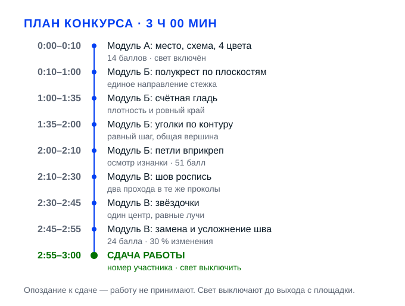
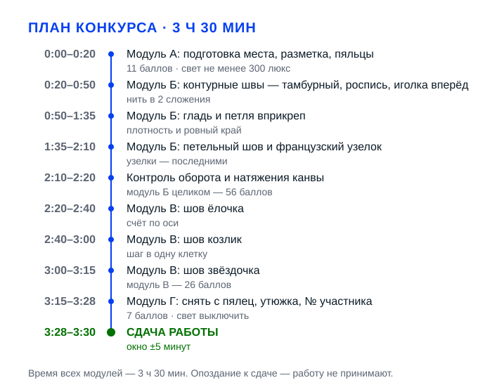
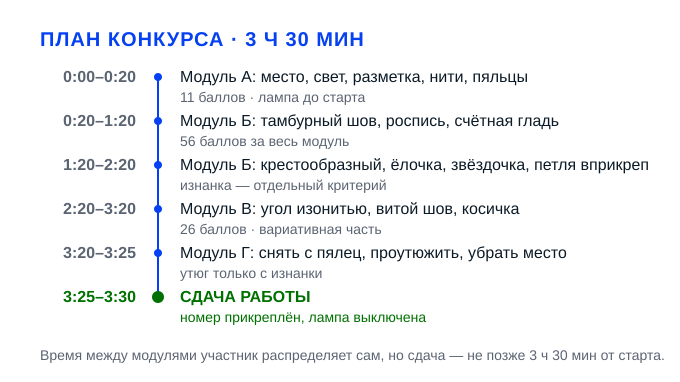

Художественное вышивание (Р)
Задания ниже — официальные файлы «Абилимпикс» (источник: abilympics-russia.ru), разложенные по категориям. Решения написаны по тексту задания, регламенту и критериям оценки; в них указано, что именно проверяет эксперт.
Школьник
14–16 лет, базовый уровень заданияВыдержка из официального конкурсного задания: страницы, относящиеся к категории «Школьник» (стр. 3–6 источника).
Пошаговое решение
Задание для школьников укладывается в 3 часа и четыре модуля на 100 баллов: 10 минут на подготовку, 2 часа на вышивку по схеме, 45 минут на региональный вариативный модуль и 5 минут на финиш. Работа идёт на пластиковой канве по образцу, нитками из предложенного набора, и в ней должны появиться шесть декоративных швов: уголок, счётная гладь, полукрест и петля вприкреп в основном модуле, роспись и звёздочка — в вариативном. Цветов в работе должно быть не меньше четырёх, и они должны сочетаться между собой, а не спорить. Тридцать процентов задания могут изменить: один шов заменят, другой усложнят, поэтому схему читаем до первого стежка, а не по ходу. Оценивают не скорость, а владение техникой каждого шва, соответствие образцу, чистую изнанку и общий вид изделия, причём 51 балл из 100 приходится на основной модуль.

Задача 1. Подготовить рабочее место и определить цветовую гаммуМодуль А · 14 баллов · 10 минут
Модуль А короткий, но именно он задаёт темп остальным трём: за 10 минут нужно получить свободный стол с разложенным инструментом, понятую схему, выбранные минимум четыре сочетающихся цвета и включённую лампу. Оценивают четыре вещи — соблюдение правил конкурса, подготовку рабочего места, подбор цветовой гаммы и включение местного освещения, — и все они видны эксперту без единого вопроса. Здесь же решается, сколько времени останется на 2 часа вышивки: каждая минута, потерянная на поиск оттенка или иглы, вычитается из стежков, а не из модуля.
Действие 1.1. Организовать рабочее место
Шаг 1.1.1
После команды «старт» первым делом обходим стол глазами и руками: проверяем, что столешница сухая и не качается, что на ней нет чужих обрезков от предыдущей смены, а стул стоит так, чтобы предплечья лежали на столе, а не тянулись к нему. Затем сверяем комплект с инфраструктурным листом: пластиковая канва с образцом, набор предложенных ниток, игла, ножницы, схема, номер участника. Чего не хватает — называем эксперту сразу, до первого стежка.
Модуль А стоит 14 баллов, и критерий «подготовка рабочего места» проверяют по конкретным признакам: свободная поверхность, инструмент на своих местах, ничего лишнего. Кроме того, по правилам этой компетенции участник ничего не берёт с собой на площадку: всё выдано на месте, и недостачу решают через эксперта, а не из личного запаса.
Стол свободен настолько, что канва ложится целиком, не сдвигая ничего; стул устойчив; все позиции списка лежат перед вами. Отсутствующая позиция уже названа эксперту — это и есть признак, что модуль А сделан, а не начат.
Частая ошибка — начать вышивать, не проверив комплект: через полчаса оказывается, что нет нужного номера иглы или оттенка, и время уходит на поиски. Вторая — принести свои ножницы «на всякий случай»: личные инструменты на площадку не берут, за это снимают баллы за соблюдение правил конкурса.
Эксперт проходит вдоль рабочих мест в первые минуты модуля А и отмечает, свободен ли стол, лежит ли инструмент в зоне досягаемости и не появилось ли на площадке личных вещей.
Шаг 1.1.2
Раскладываем инструмент по трём зонам и не меняем их местами до конца конкурса: слева от канвы — нитки, разложенные по оттенкам, справа — ножницы, игольница с запасной иглой и напёрсток, прямо перед собой — канва, а схема встаёт за ней на подставку так, чтобы её было видно, не поворачивая головы. Нитки не сваливаем в кучу: каждую пасму отделяем и кладём так, чтобы вытягивать одну нить, не распутывая остальные.
Раскладка — это не эстетика, а время: в модуле Б на 2 часа приходится самый большой объём вышивки, и каждая лишняя минута на поиск оттенка отнимается у стежков. Критерий «подготовка рабочего места» прямо оценивает, организовано ли место, а порядок в нитках виден эксперту сразу, без расспросов.
Рука дотягивается до любой пасмы, не пересекая канву; ножницы лежат ручками к вам; игла стоит в игольнице, а не катается по столу. Отдельно проверьте, что нитки не лежат на канве — иначе тёмная пасма отдаст цвет белой клетке.
Ссыпать все нитки в одну горку: пасмы цепляются друг за друга, и на распутывание уходит по 2–3 минуты несколько раз за конкурс. Вторая ошибка — положить ножницы остриём к себе или на самый край стола: это нарушение техники безопасности, которое фиксируют отдельной строкой.
Эксперт смотрит на расположение зон в начале модуля, а потом отмечает, возвращается ли инструмент на место после каждого использования. Отдельно он отмечает, не лежат ли нитки прямо на канве.
Шаг 1.1.3
Проверяем иглу на ощупь и на свет: для пластиковой канвы нужна игла с тупым округлым концом — гобеленовая, потому что острая прокалывает пластик и рвёт ячейку вместо того, чтобы пройти в готовое отверстие. Кладём её в игольницу, рядом — запасную того же номера. Ножницы пробуем на обрезке нити: они должны резать пасму в одно движение, а не жевать её, иначе срез получается лохматым и не входит в ушко.
Тупая игла и плохие ножницы — источник половины дефектов: рваная ячейка канвы уже не исправится, а лохматый срез нити виден на лицевой стороне как утолщение. Техника выполнения шва и эстетический вид изделия в модуле Б вместе дают больше половины его 51 балла, и оба начинаются с исправного инструмента.
Игла входит в ячейку без хруста и без белого следа вокруг отверстия; ножницы режут пасму под углом, не сминая; напёрсток сидит на среднем пальце рабочей руки. Если игла гнётся о канву — она слишком тонкая, меняем на номер крупнее.
Работать первой попавшейся швейной иглой с острым концом: она прокалывает перемычку пластика, и через десяток стежков в канве появляется рваная дыра посреди узора. Вторая ошибка — резать нить «под корень» у самого ушка, теряя кончик, который потом нечем заправить.
Эксперт может взять канву в руки и посмотреть на просвет: рваные ячейки и растянутые отверстия видны сразу и говорят о неверно подобранной игле. Если игла оставляет белый след, это видно на просвет.
Действие 1.2. Разобрать образец и схему
Шаг 1.2.1
Кладём схему рядом с образцом и читаем условные обозначения до конца, а не по диагонали: каждый вид шва на схеме показан своим знаком, и один и тот же знак может означать разное направление стежка. Отдельно находим на полях легенду цветов: у каждого оттенка свой номер или буква, и именно по ним сверяем нитки, а не по памяти. Если обозначение непонятно, спрашиваем эксперта до начала вышивки, а не после первого мотива.
Схема — единственный документ, по которому проверяют соответствие изделия образцу, а это отдельный критерий в 51 балле модуля Б. Ошибка в прочтении легенды стоит дорого: вышитый не тем оттенком мотив придётся распускать, а распущенная канва теряет форму ячейки и уже не выглядит чисто.
Вы можете своими словами пересказать, что означает каждый знак на вашем участке схемы, и назвать номер каждого оттенка. Проверьте себя: закройте легенду и попробуйте восстановить по памяти — если не получается, читайте снова.
Смотреть только на картинку образца, игнорируя схему: на фотографии мелкий шов не разобрать, и направление стежка угадывается неверно. Вторая ошибка — разбирать легенду уже с иглой в руке, когда половина времени модуля Б ушла.
Эксперт подходит и просит показать, где на схеме тот или иной шов: уверенный ответ сразу виден, как и путаница в обозначениях. Путаница в знаках всплывает уже на первых стежках и видна по работе.
Шаг 1.2.2
Находим на образце все шесть швов и отмечаем их на схеме карандашом в полях: полукрест — это диагональные стежки через одну клетку, счётная гладь — плотный ряд параллельных стежков, заполняющий форму, уголок — два стежка, сходящихся в одной вершине, петля вприкреп — свободная петля, прихваченная коротким стежком у основания. Роспись и звёздочку ищем в вариативной части: роспись даёт тонкую непрерывную линию, звёздочка — лучи из одной точки.
Пока швы не найдены на образце, вышивка превращается в копирование клеточек без понимания логики, и техника исполнения сразу выдаёт это перед экспертом. Критерий «владение техникой выполнения шва» — самый весомый в модуле Б, а вариативный модуль на 24 балла оценивают именно по нему.
На схеме отмечены все шесть мест, и вы можете показать пальцем, где какой шов. Сверьте количество мотивов с образцом: если на образце три уголка, а на схеме найдено два — вы пропустили участок. Сосчитайте уголки и звёздочки по всей схеме и запишите числа на полях.
Принять счётную гладь за полукрест: они похожи на мелком рисунке, но выполняются по-разному, и подмена видна по плотности заполнения. Вторая ошибка — искать швы по всей схеме сразу и терять общую композицию из виду.
Эксперт задаёт вопрос «покажите уголок» — по тому, как быстро и точно участник находит шов на схеме, видно, разобрался он в задании или нет. Ответ по памяти, без разглядывания схемы, звучит уверенно и коротко.
Шаг 1.2.3
Определяем порядок работы и записываем его на полях схемы: сначала крупные плоскости полукрестом и счётной гладью, потом контурные уголки, затем петли вприкреп как самые нежные элементы, а роспись и звёздочку — в вариативном модуле, когда основной узор уже стоит. Внутри каждого вида идём от светлых оттенков к тёмным, чтобы тёмная нить не пачкала светлую канву ворсом.
Порядок экономит время и спасает готовые участки: если начать с петель, они попадут под рабочую руку и расплющатся. Кроме того, в модуле Г отдельно оценивают досрочное выполнение, а оно возможно только при заранее продуманной последовательности, а не при импровизации.
У вас есть короткий список из 5–7 пунктов, по которому можно работать, не возвращаясь к раздумьям. Проверьте, что порядок не заставляет дважды проходить по одному месту разными цветами. Если какой-то пункт вызывает сомнение, вычеркните его и перепишите порядок.
Идти строго по схеме слева направо, ряд за рядом: при смене оттенка приходится постоянно перезаправлять иглу, и на это уходит до трети времени модуля Б. Вторая ошибка — оставить вариативные швы «на потом» и не успеть к сдаче.
Эксперт наблюдает, есть ли у участника план: ровная, без метаний, работа читается как профессиональная и в критерии мастерства исполнения. Сбивчивый порядок работы заметен по возвратам к уже вышитым участкам.
Действие 1.3. Подобрать цветовую гамму
Шаг 1.3.1
Выкладываем все предложенные пасмы на белый лист или на чистую светлую поверхность и раскладываем их по тону: от самых светлых к самым тёмным, а внутри тона — по теплоте. Так сразу видно, какие оттенки родственны, а какие спорят. Не выбираем «по одному красивому цвету»: смотрим на группу целиком, потому что оценивают именно сочетание, а не отдельную пасму.
Критерий «подбор цветовой гаммы» в модуле А требует, чтобы в работе было как минимум четыре сочетающихся между собой цвета — это прямо записано в конкурсном задании. Три цвета, даже очень красивых, уже не дотягивают до условия, а пять случайных превращают узор в пёстрое пятно.
Пасмы разложены в один ряд, и вы можете назвать для каждой соседнюю, с которой она сочетается. Проверьте на глаз: если два оттенка при близком рассмотрении сливаются, для мелкого шва они не годятся. Если две пасмы неразличимы на расстоянии метра, оставьте только одну.
Раскладывать нитки на цветной столешнице или на канве: фон искажает восприятие цвета, и на готовой работе оттенки выглядят иначе, чем казалось. Вторая ошибка — брать все пасмы из набора «чтобы было ярко».
Эксперт подходит к столу в модуле А и смотрит на выложенные нитки: ему важно увидеть осознанный выбор, а не кучу. Куча ниток на столе читается как отсутствие выбора.
Шаг 1.3.2
Выбираем четыре основных цвета и распределяем их по элементам узора: тёмный — на контур и стебли, средний — на крупные плоскости, светлый — на лепестки и заполнение, четвёртый, акцентный, — на мелкие детали и середины цветов. Пятый и шестой оттенки берём только если они действительно поддерживают выбранную гамму, а не добавляют ещё одну тему. Выбор фиксируем на схеме: рядом с каждым мотивом ставим номер оттенка.
Распределение по ролям — это и есть профессиональный подбор гаммы: у каждого цвета появляется задача, и работа перестаёт выглядеть раскрашенной. Именно такой подход даёт баллы и за подбор цветовой гаммы в модуле А, и за эстетический вид изделия в модуле Б.
Для каждого мотива на схеме подписан оттенок, и ни один участок не остался без решения. Проверьте на образце: там та же логика — тёмное по контуру, светлое в заливке. Продиктуйте себе роли цветов вслух — так проверка занимает полминуты.
Красить всё в один цвет «чтобы не ошибиться»: работа становится плоской, и баллы за гамму теряются почти полностью. Вторая ошибка — взять четыре оттенка одной светлоты: они не дают объёма, и узор читается с трудом.
Эксперт сверяет готовую работу с образцом и оценивает, работает ли гамма на узор; на этапе модуля А он отмечает, есть ли в выборе система. Если все мотивы подписаны одним оттенком, гаммы в работе фактически нет.
Шаг 1.3.3
Проверяем выбранные цвета в тех условиях, в которых будем работать: включаем лампу, кладём пасмы прямо на канву и смотрим с расстояния вытянутой руки. Оттенок, который на белом листе казался ярким, на пластиковой канве может оказаться бледным, а тёмный — почти чёрным. Если контраст слабый, меняем один цвет на более далёкий по тону, пока узор не начнёт читаться силуэтом.
Оценивают готовое изделие при том же освещении, при котором его вышивали, и разница между «на столе» и «на канве» — самая частая причина разочарования. Эстетический вид изделия в модуле Б стоит несколько баллов, и он складывается именно из читаемости узора на расстоянии.
Прищурьтесь и посмотрите на канву с нитками: узор должен читаться пятнами, без разглядывания. Если два соседних элемента сливаются в одно пятно — нужен другой оттенок. Если силуэт не читается, меняйте не оттенок, а его светлоту.
Проверять цвета только под лампой в упор: при общем освещении площадки контраст падает, и на сдаче работа выглядит бледнее, чем в процессе. Вторая ошибка — менять гамму в середине модуля Б, когда часть уже вышита.
Эксперт смотрит на работу на расстоянии 1–1,5 метра, поэтому читаемость силуэта для него важнее тонких нюансов оттенка. Бледная работа на сдаче выглядит хуже, чем в процессе, — его обычное замечание.
Действие 1.4. Включить освещение и настроить посадку
Шаг 1.4.1
Включаем местное освещение и направляем лампу так, чтобы свет падал на канву слева и чуть сверху — для правши это исключает тень от собственной руки. Лампу ставим не ближе 30–40 сантиметров от работы: слишком близко она даёт жёсткие блики на пластике, и ячейки канвы перестают различаться. Свет регулируем один раз и больше к этому не возвращаемся. Свет настраиваем до первого стежка, а не в процессе работы.
Включённое местное освещение — отдельный пункт критериев модуля А и модуля Г: за него дают баллы и в начале, и в конце, причём в финале проверяют, что свет выключен. Кроме того, при недостатке света глаз перестаёт различать границу ячейки, а на пластиковой канве вся геометрия шва держится именно на ней.
Тень от руки не падает на рабочий участок; на канве не видно жёстких бликов; соседние ячейки различаются без наклона головы. Проверьте, что свет не бьёт в глаза, когда вы наклоняетесь над пяльцами. Лампа стоит сбоку, а не за головой: иначе тень падает на всю канву.
Ставить лампу справа при работе правой рукой: тень закрывает именно тот участок, куда входит игла, и стежки ложатся неровно. Вторая ошибка — направить лампу в лицо, «чтобы ярче»: через полчаса глаза устают, и точность падает.
Эксперт фиксирует включённое освещение в модуле А и выключенное — в модуле Г, это два отдельных пункта в разных критериях. Он также смотрит, не направлена ли лампа в лицо участнику.
Шаг 1.4.2
Садимся так, чтобы спина опиралась на спинку стула, а канва лежала на столе под углом примерно 30–40 градусов к поверхности — для этого её удобно прислонить к краю стола или к подставке. Локти держим ближе к корпусу, работаем кистью на 5–7 сантиметров, а не всей рукой. Расстояние от глаз до канвы — 30–35 сантиметров, ближе не надо: на пластике мелкая клетка, и глаза быстро устают.
Посадка влияет не на красоту, а на точность: при работе на весу рука дрожит, и стежки получаются разной длины, а это сразу видно в критерии «мастерство исполнения». Два часа модуля Б и 45 минут модуля В — это долго, и неудобная поза к середине превращается в боль в спине и шее.
Спина касается спинки, плечи не подняты, кисть не висит в воздухе, канва видна целиком без наклона головы. Проверьте через пять минут: если тянет шею — поднимите канву выше, а не наклоняйтесь к ней. Если приходится наклоняться, значит канва лежит слишком низко.
Сидеть на краю стула, склонившись над канвой: через 20 минут появляется напряжение в шее, и ровность стежков падает. Вторая ошибка — держать канву на весу в левой руке без опоры, тогда все проколы уходят вкось.
Эксперт отмечает эргономику как часть организации рабочего места, а по ходу конкурса видит, сохраняет ли участник рабочую позу к концу второго часа. К концу модуля В он снова отмечает позу участника.
Задача 2. Вышить основной узор по схеме четырьмя швамиМодуль Б · 51 балл · 2 часа
На этот модуль приходится половина всех баллов задания и две трети времени: 2 часа и 51 балл за вышивку по схеме или образцу на пластиковой канве четырьмя швами — полукрестом, счётной гладью, уголком и петлёй вприкреп. Оценивают сразу семь вещей: соблюдение правил конкурса, санитарные нормы и технику безопасности, владение техникой каждого шва, соответствие схеме и образцу, оборотную сторону, мастерство исполнения и эстетический вид. Отсюда простая арифметика приоритетов: ровный стежок важнее скорости, а чистая изнанка стоит столько же, сколько красивый лицевой узор. Работаем блоками по видам шва, а не по цветам, чтобы не перезаправлять иглу на каждой клетке.
Действие 2.1. Заправить нить и закрепить её без узла
Шаг 2.1.1
Отмеряем нить длиной от кисти до локтя — примерно 40–45 сантиметров, отрезаем под острым углом и разделяем пасму: из шести сложений берём два, а если канва крупная и клетка шире, то три. Вытягиваем нити по одной, а не всей пасмой сразу, иначе они перекручиваются и теряют блеск. Заправляем в гобеленовую иглу и складываем пополам, чтобы на конце образовалась петля, — она и станет креплением.
Длинная нить трётся о перемычки пластика на каждом проколе, пушится и ложится неровно, поэтому 40–45 сантиметров — рабочий предел, а не случайное число. Два сложения дают ровное покрытие клетки без утолщения, и именно плотность стежка смотрят в критерии владения техникой шва, который в модуле Б весит больше остальных.
Нить скользит в ушке свободно, не разлохмачена, петля на конце ровная. Протяните её через пробную ячейку в углу канвы, который потом закроет узор: должен быть лёгкий шорох, а не скрип пластика. Если нить скрипит, она слишком толстая для этой ячейки.
Взять нить «подлиннее, чтобы реже менять»: она пушится, цепляется за перемычки и ложится с узелками, которые на лице читаются как брак. Вторая ошибка — вытянуть всю пасму в шесть сложений: стежок становится толстым, ячейка переполняется, и шов выглядит грубым.
Эксперт смотрит на нить в работе: слишком длинная или разлохмаченная сразу говорит о том, что участник не работал с этой канвой раньше. Он также смотрит, не перекручена ли пасма.
Шаг 2.1.2
Закрепляем нить без узла: выводим иглу на лицевую сторону в той клетке, которую закроет первый стежок, оставляем с изнанки хвостик 2–3 сантиметра и придерживаем его пальцем. Делаем первый стежок и сразу укладываем хвостик вдоль изнанки так, чтобы следующие три-четыре стежка прошли поверх него и пришили его к перемычке. Узел на пластиковой канве не вяжем вообще: он даёт бугор на обороте и может проскочить сквозь ячейку.
Оборотная сторона — отдельный критерий в 51 балле модуля Б, и узелки на ней читаются как дефект: они видны на просвет и не дают работе лежать ровно. Закрепление под стежками держит крепче узла и полностью прячется, а на пластике это ещё и страховка от того, что мотив распустится при первом же рывке нити.
Потяните нить за последний стежок: она держится и не выходит. Переверните канву — на обороте нет узла, только хвостик под стежками, и его длина не больше 3 сантиметров. Проверьте это на первом же мотиве, а не в конце модуля.
Завязать узелок «для надёжности»: на обороте появляется шишка, видная через ячейку, и балл за изнанку снижается. Вторая ошибка — оставить хвост 6–8 сантиметров: он цепляется за иглу и вытягивается на лицо.
Эксперт переворачивает работу и оценивает изнанку именно в модуле Б; закрепление без узла — первое, что он отмечает. Шишка на обороте видна через ячейку даже без лупы.
Шаг 2.1.3
Делаем первый стежок на пробной клетке и проверяем натяжение: нить должна лежать на пластике, не стягивая перемычку, но и не образуя петель над поверхностью. Тянем ровно до момента, когда нить легла, и дальше не тянем. Стежок ведём по диагонали клетки — от нижнего левого угла к верхнему правому, если схема не задаёт другого направления. Пробную клетку потом закроет узор, поэтому её и выбираем в углу.
Натяжение — это то, что отличает аккуратную вышивку от ученической: перетянутая нить деформирует ячейку и тянет за собой соседние, а слабая провисает и цепляется за иглу. Мастерство исполнения и эстетический вид в модуле Б оценивают по совокупности таких мелочей, и они видны на расстоянии.
Клетка под стежком осталась квадратной, перемычка не выгнулась, соседние ячейки не стянуты. Посмотрите на канву сбоку, на уровне стола: провисающих нитей быть не должно. Канва должна остаться плоской: положите её на стол и посмотрите на просвет.
Тянуть нить «до упора»: пластик не тянется, и перемычка ломается или белеет по краю. Вторая ошибка — оставлять нить свободной, тогда стежок ложится дугой и узор выглядит рыхлым. Третья ошибка — работать без напёрстка и прокалывать палец иглой.
Эксперт смотрит на просвет и сбоку: деформированные ячейки и белые следы перетяжки видны без увеличения. Он проводит пальцем по стежкам: перетяжка чувствуется как ступенька.
Действие 2.2. Вышить полукрест
Шаг 2.2.1
Полукрест начинаем с определения направления: на схеме оно задано наклоном значка, и во всём мотиве стежки должны ложиться одинаково — например, снизу слева вверх направо. Вышиваем ряд за рядом, каждый стежок через одну клетку, иглу выводим в углу ячейки, а не в середине перемычки. Если мотив состоит из нескольких блоков, направление в них не меняем.
Полукрест держит всю фактуру узора: при разном наклоне стежков поверхность начинает «мерцать», и это первое, что замечает эксперт, оценивая технику шва. Единое направление даёт тот самый ровный, слегка скошенный рельеф, по которому работу узнают как вышивку, а не как раскраску.
Приложите линейку или край листа к ряду стежков: все они идут параллельно, угол одинаковый. Посмотрите на мотив издалека — поверхность должна читаться однородной, без светлых и тёмных полос от разного наклона.
Менять наклон в пределах одного мотива: половина блока ложится в одну сторону, половина в другую, и на сдаче это выглядит как две разные работы. Вторая ошибка — вводить иглу в середину перемычки, тогда стежок съезжает и ряд ползёт по диагонали.
Эксперт проверяет направление стежков на нескольких участках: однородность наклона — главный признак владения полукрестом. Достаточно двух-трёх мотивов, чтобы увидеть разнобой в наклоне.
Шаг 2.2.2
Заполняем блок рядами сверху вниз, не пропуская клеток: каждый следующий ряд начинаем с той же стороны, с которой начали предыдущий, чтобы не переворачивать работу. Пропущенную клетку закрываем сразу, а не в конце блока, иначе потом её не найти. Если ряд длинный, ведём его участками по 5–7 стежков, проверяя счёт по схеме. Первую клетку каждого ряда отмечайте на схеме карандашом.
Полукрест заполняет плоскости, и любая дырка в заливке читается как небрежность в критерии соответствия образцу. Рядами работать быстрее, чем по одной клетке, но только при постоянном счёте: сбившись на одну клетку, вы уводите весь следующий ряд и обнаружите это через десять минут.
Просветов нет: поднимите канву на свет, ячейки должны быть закрыты полностью, без белых точек. Сверьте границы блока со схемой по счёту клеток от края. Проверьте крайние клетки блока: именно там чаще всего остаётся пропуск.
Закрывать пропуски в конце блока «как получится»: стежок ложится поверх соседних, утолщает участок и меняет наклон. Вторая ошибка — считать клетки на глаз, без сверки со схемой каждые 5–7 стежков. Третья ошибка — считать клетки по памяти, без отметки на схеме.
Эксперт проводит пальцем или смотрит на просвет: равномерность заливки и отсутствие просветов — часть критерия мастерства исполнения. Он также смотрит на границы блока: они должны быть ровными.
Шаг 2.2.3
Меняем цвет на границе блока, а не посреди ряда: доводим текущий ряд до края, закрепляем нить под последними тремя стежками с изнанки и только потом заправляем новый оттенок. Новую нить закрепляем под стежками того же цвета, чтобы хвостик не просвечивал через светлую клетку. Переход делаем в месте, где по схеме проходит граница мотивов. Нить нового цвета не должна проходить через клетку старого.
Смена цвета — самый заметный источник грязи на обороте: если закреплять новую нить поверх старой, на изнанке образуется бугор, а на лице — утолщение. Оборотная сторона и эстетический вид оцениваются отдельно, и аккуратный переход стоит дешевле, чем распускать и переделывать.
На лице в месте перехода нет утолщения и торчащих кончиков, на обороте — два коротких хвостика, пришитых под стежками. Потяните соседние стежки: они не сдвинулись. Посмотрите на переход с изнанки: два хвостика должны лежать раздельно.
Обрезать нить, не закрепив, и заправить новую с узлом: через несколько стежков старая нить выходит на лицо. Вторая ошибка — менять цвет в середине ряда, тогда граница получается ступенькой. Третья ошибка — оставлять старую нить висящей, пока не закончите блок.
Эксперт смотрит на границы цветовых блоков: ровная линия перехода говорит о том, что участник понимает логику схемы, а не просто закрашивает клетки. Ступенька на границе цветов видна даже на мелком мотиве.
Действие 2.3. Вышить счётную гладь
Шаг 2.3.1
Счётную гладь начинаем с контура: по схеме отсчитываем клетки и мысленно обводим форму, отмечая углы и самую широкую часть. Определяем, в каком направлении лягут стежки — вдоль длинной стороны формы, — и только после этого делаем первый стежок. Если форма сложная, сначала прокладываем тонкую линию швом вперёд иголку той же нитью, чтобы видеть границу.
Счётная гладь отличается от полукреста именно плотностью и направлением: стежки кладутся вплотную, параллельно друг другу, и заполняют форму целиком. Без предварительного счёта клеток форма «поплывёт», а соответствие схеме — отдельный критерий в модуле Б.
Контур читается по клеткам, углы намечены, направление стежка выбрано. Сверьте ширину формы в самом узком месте: если она меньше двух клеток, гладь там не ляжет и нужно менять приём. Если ширина меньше двух клеток, замените гладь на полукрест в этом месте.
Начинать гладь без разметки, «по интуиции»: к середине формы становится видно, что стежки не помещаются, и приходится уплотнять их внахлёст. Вторая ошибка — вести стежки поперёк короткой стороны: форма визуально расплывается.
Эксперт сверяет контур с образцом по клеткам: счётная гладь — это шов, в котором ошибка в одну клетку видна сразу. Смещение контура на одну клетку он находит, приложив схему к работе.
Шаг 2.3.2
Кладём стежки параллельно, вплотную друг к другу, каждый — через нужное число клеток, вводя иглу строго в углы ячеек. Первый стежок задаёт длину, и все следующие держим такой же: если форма сужается, укорачиваем стежок на одну клетку, а не подтягиваем нить. Пальцем левой руки придерживаем уже уложенные стежки, чтобы они не сдвигались под новой нитью.
Плотность и параллельность — то, за что дают баллы по технике: просветы между стежками превращают гладь в решётку, а разная длина делает поверхность волнистой. Именно гладь показывает, умеет ли участник считать клетки и держать ритм, а этот навык переносится на все остальные швы.
Между стежками нет просветов канвы, поверхность выглядит как ровная лента. Проведите по ней пальцем: не должно быть ступенек и зацепов за перемычки. Свет под углом покажет и волны, и просветы между стежками.
Класть стежки «через клетку», чтобы быстрее закрыть форму: получается решётка, и гладь перестаёт быть гладью. Вторая ошибка — подтягивать нить, когда форма сужается, тогда стежки стягивают канву и она идёт волной.
Эксперт смотрит на гладь под углом к свету: просветы и волны видны лучше всего в косом свете. Он смотрит на гладь в косом свете: ровная поверхность даёт один блик.
Шаг 2.3.3
Закрываем форму от одного края к другому, не оставляя «карманов»: последний стежок укладываем вплотную к контуру, а не поверх него. Если по схеме у формы есть плавный край, укорачиваем стежки ступеньками по одной клетке, чтобы получилась лесенка без зазубрин. Выходя за контур, стежок раздвигает соседние и портит силуэт, поэтому край всегда ведём по последней клетке.
Ровный край — это силуэт узора, и именно его сравнивают с образцом. Ступенька в одну клетку читается как аккуратность, а стежок, вылезший за контур, — как ошибка, даже если всё остальное вышито идеально. Кроме того, край — первое, что сравнивают с образцом.
Край формы идёт ровной лесенкой по клеткам, ни один стежок не выходит за границу больше чем на полклетки. Сверьте силуэт с образцом, отойдя на полтора метра. Ступеньки должны быть одинаковыми: по одной клетке, а не по две.
Выводить стежок за контур «чтобы закрыть просвет»: силуэт расплывается, и в критерии соответствия образцу снимают баллы. Вторая ошибка — обрывать гладь, не дойдя до края: остаётся полоска незакрытой канвы.
Эксперт оценивает силуэт на расстоянии: край глади должен читаться как линия, а не как рваная кромка. Рваная кромка глади сразу выдаёт спешку в конце модуля.
Шаг 2.3.4
Следим за изнанкой при глади: рабочие протяжки между участками ведём под уже вышитыми стежками, а не по свободной канве, и не длиннее 1–1,5 сантиметра. Если нужно перейти на другой участок далеко, лучше закрепить нить и начать заново, чем тянуть её через всю канву. Гладь плотная, и лишняя нить с изнанки сразу даёт бугор. Иглу при протяжке ведём вдоль перемычки, а не по диагонали.
Оборотная сторона в модуле Б — отдельный критерий, и на глади её испортить проще всего: плотные стежки тянут за собой протяжки, и изнанка превращается в сетку. Кроме того, длинная протяжка просвечивает через ячейку на лицо и ломает цвет узора. Поэтому переходы делаем короткими и продумываем их заранее.
Переверните канву: на изнанке видны аккуратные короткие переходы под стежками, нет косых нитей через пустые клетки. Протяжки не просвечивают на лицевую сторону при взгляде на свет. Посмотрите на изнанку на свет: протяжки не должны давать цветных полос.
Тянуть нить по свободной канве к следующему мотиву: на лице появляется цветная тень, а на обороте — длинная косая нить. Вторая ошибка — обрезать нить после каждого стежка: изнанка обрастает хвостиками.
Эксперт осматривает изнанку целиком: чистая гладь на обороте — редкий и заметный признак мастерства. Он оценивает изнанку глади как отдельный участок работы.
Действие 2.4. Вышить уголки
Шаг 2.4.1
Уголок строим от вершины: выводим иглу в точке, где сходятся два луча, и кладём первый стежок по одному лучу, второй — по другому, так чтобы между ними остался ровный просвет в одну клетку. Оба стежка должны быть одинаковой длины, а вершина — общей: игла входит в одну и ту же ячейку. Если по схеме уголок заполнен, добавляем стежки внутрь, сохраняя симметрию.
Уголок — шов, в котором видно геометрию: несимметричные лучи и разная длина стежков сразу выдают руку новичка. В модуле Б за технику каждого шва дают баллы отдельно, а уголков в узоре обычно несколько, и все они сравниваются между собой. К тому же уголки обычно парные, и разница видна именно в паре.
Оба луча одинаковой длины, вершина одна, просвет между стежками ровный. Сравните два соседних уголка: они должны быть похожи как близнецы. Проверьте уголок на просвет: оба луча должны быть одной длины.
Класть лучи из разных ячеек: вершина разъезжается, и уголок превращается в две отдельные наклонные палочки. Вторая ошибка — делать один луч длиннее другого «по рисунку», хотя схема задаёт равенство. Третья ошибка — делать вершину толще остальных стежков, тогда уголок грубеет.
Эксперт сравнивает уголки между собой: серия одинаковых элементов — главный признак владения швом. Он сравнивает первый и последний уголок серии, а не каждый по отдельности.
Шаг 2.4.2
Выполняем серию уголков по контуру узора: идём по схеме с равным шагом, отсчитывая клетки от предыдущего уголка, и каждый раз проверяем, что вершина смотрит в ту же сторону, что и у первого. Работаем в одном направлении — например, по часовой стрелке, — чтобы не сбиться. Между уголками оставляем одинаковое расстояние, если схема не задаёт другого. Отметку шага ставьте на схеме карандашом, а не в уме.
Серия — это ритм: если шаг сбился на одну клетку, к концу контура уголки сойдутся не там, где нужно, и мотив замкнётся криво. Ровный шаг экономит время ещё и потому, что не приходится возвращаться и переделывать. Кроме того, равный шаг ускоряет работу: не нужно каждый раз отмерять заново.
Расстояние между уголками одинаковое, все вершины смотрят в одну сторону, последний уголок встал на место стыка. Проверьте счёт от начала контура: количество уголков совпадает со схемой. Если последний уголок не встал на стык, ошибку ищите в середине контура.
Вести уголки «на глаз», без счёта клеток: на длинном контуре ошибка накапливается, и замыкание не совпадает. Вторая ошибка — разворачивать вершины в разные стороны, тогда контур выглядит небрежным. Третья ошибка — пропускать клетку на повороте, тогда шаг уходит на две.
Эксперт проходит взглядом по контуру: равномерность шага и единое направление вершин видны сразу, без линейки. Он проходит по контуру взглядом, не останавливаясь на отдельных уголках.
Шаг 2.4.3
В мелких деталях — листьях, лучах, серединках — уголки уменьшаем до одной клетки: два коротких стежка из общей вершины, без внутреннего заполнения. Крупные уголки в мелком мотиве не помещаются и наезжают на соседние элементы, поэтому сначала считаем, сколько клеток отведено под деталь, и только потом выбираем размер. Иглу в мелких уголках вводим медленно, чтобы не растянуть ячейку.
Мелкий уголок — самый частый способ испортить готовый мотив: одно неверное решение по размеру, и деталь перекрывает контур, вышитый ранее. Эстетический вид изделия оценивают целиком, и один грубый элемент тянет вниз всю работу. Кроме того, мелкий шов требует более тонкой иглы, чем крупный.
Мелкие уголки не выходят за границы своих деталей и не перекрывают соседние швы. Посмотрите на мотив вблизи: между элементами остался просвет канвы в одну клетку. Если просвета нет, уменьшите уголок на одну клетку.
Вышивать мелкие детали тем же размером, что и крупные, «чтобы было заметно»: детали сливаются в пятно. Вторая ошибка — спешить и растягивать ячейку иглой, после чего в канве остаётся белый след. Третья ошибка — работать той же иглой, что и в крупных деталях: она растягивает ячейку.
Эксперт смотрит на мелкие детали вблизи: именно там видно, соразмерен ли шов масштабу мотива. Он смотрит на мелкие детали первым делом: там видно масштаб шва.
Действие 2.5. Вышить петли вприкреп
Шаг 2.5.1
Петлю вприкреп начинаем с определения длины: по схеме считаем, сколько клеток займёт лепесток, и выводим иглу на лицо в его основании. Нить укладываем свободной петлёй нужной длины, придерживая её большим пальцем левой руки, а иглу вводим рядом с точкой выхода — через одну клетку, не в то же отверстие. Петля не должна быть натянута: она лежит дугой.
Петля вприкреп — шов, который держится на свободной нити, и любое натяжение превращает её в короткий прямой стежок. Длина петли задаёт размер лепестка, и если она не совпадает со схемой, весь цветок выглядит сплюснутым или растянутым. Кроме того, короткая петля не даёт лепестку нужного объёма.
Петля лежит дугой, её длина совпадает с числом клеток по схеме, основание не стянуто. Сравните с образцом: у всех лепестков одного цветка длина одинаковая. Сравните все лепестки одного цветка между собой — они должны совпадать.
Тянуть нить при выполнении петли: дуга схлопывается, и лепесток получается короче остальных. Вторая ошибка — вводить иглу в то же отверстие, из которого вышла нить: петля выворачивается наизнанку. Третья ошибка — придерживать петлю слишком близко к основанию.
Эксперт смотрит на лепестки одного цветка: одинаковая длина петель — показатель того, что участник считает клетки, а не импровизирует. Он смотрит на длину петель в одном цветке, а не по всей работе.
Шаг 2.5.2
Прикрепляем петлю коротким стежком через её дугу: иглу выводим на лицо внутри петли, кладём стежок поперёк дуги длиной в одну клетку и уводим на изнанку по другую сторону. Прикреп ставим в верхней части петли, отступив от кончика одну клетку, и затягиваем ровно настолько, чтобы дуга держала форму, но не сминалась. Иглу вводим внутри петли, а не снаружи: так прикреп не съезжает.
Прикреп — это то, что отличает петлю вприкреп от обычной свободной петли: без него шов распадается, а при неверном положении лепесток перекашивается. Технику выполнения шва оценивают целиком, и прикреп в ней — ключевой элемент, который видно вблизи. Поэтому прикреп ставим до того, как петля окончательно расправится.
Прикреп стоит поперёк дуги, его длина — одна клетка, дуга не сминается и не провисает. Потяните петлю пальцем: она пружинит и возвращается на место. Если дуга провисает, поставьте прикреп на клетку выше.
Ставить прикреп слишком туго: дуга стягивается в точку, и лепесток исчезает. Вторая ошибка — прикрепить петлю у самого основания, тогда верхняя часть висит свободно и цепляется за иглу. Третья ошибка — делать прикреп длиной в две клетки: он перекрывает петлю.
Эксперт рассматривает петли вблизи: положение и длина прикрепа — то, по чему судят о владении этим швом. Он смотрит на петлю сбоку: прикреп должен читаться как перекладина.
Шаг 2.5.3
Выполняем лепестки по кругу из одного центра: сначала намечаем по схеме количество лепестков и их направление, затем вышиваем их по порядку — например, начиная сверху и двигаясь по часовой стрелке. Каждый следующий лепесток кладём так, чтобы его основание было в центре, а прикреп — на одинаковом расстоянии от центра. Центр закрываем последним, короткими стежками.
Круг из петель — самая заметная часть узора, и здесь важна симметрия: лепестки одинаковой длины и с равным шагом дают цветок, а сбитый шаг — неряшливую звезду. Эстетический вид изделия в модуле Б оценивают по общему впечатлению, и цветок в центре композиции задаёт его первым.
Лепестки распределены равномерно, расстояние между ними одинаковое, центр закрыт аккуратно. Посмотрите на цветок сверху: он должен читаться как симметричная фигура. Сосчитайте лепестки: их число должно совпадать со схемой.
Вышивать лепестки «по мере вдохновения», без разметки: последний не помещается и наезжает на первый. Вторая ошибка — оставить центр открытым, тогда основания петель видны и цветок выглядит незаконченным.
Эксперт оценивает симметрию цветка и аккуратность центра: это тот участок, который рассматривают в первую очередь. Он также проверяет, не перекрывают ли лепестки друг друга.
Действие 2.6. Держать изнанку и контролировать темп
Шаг 2.6.1
Каждый переход между мотивами делаем по правилу: протяжка только под уже вышитыми стежками и не длиннее 1–1,5 сантиметра. Если расстояние больше, закрепляем нить под стежками и начинаем заново с новой нити. На пластиковой канве протяжку можно уложить вдоль перемычки и прихватить одним коротким стежком, чтобы она не провисала. Протяжку не натягиваем: она должна лежать свободно, но не петлёй.
Изнáночная сторона — отдельный критерий, и на пластике она особенно заметна: канва просвечивает, и любая косая нить читается как тень на лице. Аккуратная изнанка говорит о том, что участник понимает технологию, а не просто копирует картинку. Кроме того, длинная протяжка цепляется за иглу при следующем стежке.
На обороте нет протяжек через пустые клетки, все переходы спрятаны под стежками. Посмотрите на канву на свет: на лице не должно быть цветных теней от изнанки. Если протяжка видна, укоротите её и закрепите нить заново.
Тянуть нить по диагонали через полканвы: на лице появляется тёмная полоса, а на обороте — длинная нить, которую видно на просвет. Вторая ошибка — оставлять провисающую протяжку, она цепляется за иглу при следующем стежке.
Эксперт переворачивает работу и смотрит на изнанку при боковом свете: протяжки видны как рельеф. Он смотрит на изнанку при боковом свете, где рельеф читается лучше.
Шаг 2.6.2
Обрезаем хвостики сразу после закрепления, а не в конце модуля: кончик длиной 2–3 миллиметра, срезанный под острым углом, не мешает и не выходит на лицо. Ножницы держим кончиками вверх и режем над столом, а не над канвой, чтобы обрезанный кончик не упал в работу. Обрезки складываем в одно место — на край стола или в крышку от коробки. Обрезки не сдуваем на пол, а сдвигаем в одно место.
Хвостики, оставленные «на потом», вытягиваются иглой на лицо и путаются в стежках: распутать их, не повредив вышивку, почти невозможно. Кроме того, чистое рабочее место без обрезков — часть критерия организации и санитарных норм, который проверяют в модуле Б.
На изнанке не осталось хвостов длиннее 3 миллиметров, на столе нет обрезков рядом с канвой. Проверьте пальцем: под стежками не должно быть уплотнений из спрятанных кончиков. Проверьте углы канвы: там скапливается больше всего обрезков.
Резать нить над канвой: обрезки падают в ячейки и потом выглядывают из шва. Вторая ошибка — оставлять хвосты 5–6 сантиметров, рассчитывая обрезать их при финишной обработке. Третья ошибка — держать крышку с обрезками прямо на канве.
Эксперт осматривает место работы: обрезки на столе и вокруг канвы считываются как нарушение санитарных норм. Он смотрит и на стол, и на пол вокруг рабочего места.
Шаг 2.6.3
Держим темп по контрольным точкам: к концу первого часа должен быть закрыт полукрест и начата счётная гладь, к 1 часу 40 минутам — готовы гладь и уголки, к концу модуля — петли вприкреп. Каждые 15–20 минут переворачиваем канву и смотрим изнанку, а заодно разминаем руки и проверяем посадку. Оставшиеся 10 минут модуля Б отводим на осмотр и мелкие исправления.
Модуль Б — 2 часа на 51 балл, и именно здесь чаще всего не хватает времени: участник увлекается первым мотивом и оставляет петли на последние минуты. Контрольные точки дают возможность заметить отставание, когда его ещё можно догнать, а не когда работа уже не будет закончена.
К каждой контрольной точке соответствующая часть узора закрыта, изнанка проверена, руки и поза в порядке. Если отставание больше десяти минут — упрощаем внутреннюю детализацию, но не пропускаем целые швы.
Работать без контроля времени: часов на площадке может не быть перед глазами, и сигнал об окончании модуля застаёт на середине третьего шва. Вторая ошибка — гнать темп в ущерб плотности, тогда работа выглядит хуже, чем сделана вовремя.
Эксперт наблюдает за ритмом работы: ровный темп без рывков в конце — признак того, что участник умеет планировать, и это входит в мастерство исполнения.
Задача 3. Выполнить вариативные швы: роспись и звёздочкуМодуль В · 24 балла · 45 минут
Региональный вариативный модуль — это 45 минут и 24 балла, и он единственный, который оценивают по одному критерию: владение техникой выполнения шва. Здесь появляются два новых шва — роспись, дающая тонкую непрерывную линию, и звёздочка, собранная из лучей одной точки, — и оба требуют совсем другого движения руки, чем полукрест и гладь. Вариативность означает, что тридцать процентов задания могут изменить: один шов заменят другим, а второй усложнят, поэтому приём нужно понимать, а не заучивать под конкретный мотив. Вышиваем этот модуль после основного узора, чтобы не смять готовые петли.
Действие 3.1. Проложить шов роспись
Шаг 3.1.1
Роспись начинаем с первого прохода «вперёд иголку»: ведём линию по схеме стежками одной длины, оставляя между ними такой же пропуск — например, стежок в две клетки и пропуск в две клетки. Иглу вводим и выводим строго в углах ячеек, чтобы линия не гуляла. Первый проход задаёт всю геометрию шва, и от него зависит, сойдётся ли линия на повороте. Первый стежок задаёт шаг, поэтому его длину сверяем по схеме.
Роспись — двусторонний шов: сначала прокладывается пунктир, потом промежутки заполняются обратным ходом, и получается непрерывная линия с одинаковым рисунком на обеих сторонах. Если первый проход сделан с разным шагом, второй не совпадёт с ним, и на лице появятся сдвоенные стежки — а техника этого шва и есть единственный критерий модуля В на 24 балла.
Стежки и пропуски одинаковой длины, линия идёт точно по клеткам схемы, на повороте шаг не сбился. Пройдите по первому проходу пальцем: ритм должен быть равномерным, как у пунктира. Если шаг сбился на третьем стежке, распустите линию сразу.
Делать стежки разной длины «по рисунку»: второй проход не попадает в те же отверстия, и линия получается рваной. Вторая ошибка — вести первый проход по интуиции, не сверяясь со схемой, тогда к концу линии накапливается смещение в две-три клетки.
Эксперт смотрит на первый проход до заполнения: равномерность шага видна сразу и говорит о том, понимает ли участник двустороннюю природу шва. Он также смотрит, не гуляет ли линия вокруг клеток.
Шаг 3.1.2
Второй проход ведём обратно по той же линии, заполняя пропуски: иглу вводим в те же отверстия, где заканчивается предыдущий стежок, и проходим ровно пропущенный участок. Нить укладываем без натяга, чтобы она легла рядом с первым проходом, а не поверх него. Работать удобнее, повернув канву так, чтобы линия шла слева направо. Поворот канвы экономит движение кисти и держит линию ровной.
Именно обратный проход превращает пунктир в непрерывную линию, и на этом этапе видно, правильно ли был рассчитан шаг. Роспись ценится за то, что с изнанки она выглядит так же, как с лица, — это признак высокого качества исполнения, и эксперты смотрят на неё отдельно.
Линия стала сплошной, без утолщений и без просветов, на изнанке рисунок повторяет лицевую сторону. Потяните линию пальцем: она не расходится на отдельные стежки. На изнанке не должно быть узлов: роспись двусторонняя.
Класть второй проход рядом с первым, а не в те же проколы: линия утолщается и идёт волной. Вторая ошибка — натягивать нить на повороте, тогда линия стягивает канву и на пластике появляется вмятина. Третья ошибка — распускать второй проход и рвать канву: на пластике это заметно.
Эксперт переворачивает работу: у росписи изнанка должна читаться как такая же линия, и это самый быстрый способ проверить технику. Если на обороте пунктир вместо линии, техника не выполнена.
Шаг 3.1.3
На поворотах и стыках линию ведём так, чтобы стежок попал в угловую клетку целиком: сначала доводим проход до угла, затем разворачиваем канву и ведём следующую сторону, начиная из той же угловой ячейки. В местах пересечения линий одна проходит под другой — выбираем заранее, какая сверху, и держим это правило по всему узору. Если линия замыкается в кольцо, шаг корректируем в последних двух стежках, а не в середине.
Роспись чаще всего используют для контуров и прожилок, а значит, поворотов много, и именно на них шов распадается. Стыки и пересечения — то место, где видно, держит ли участник единую логику: беспорядочные пересечения читаются как небрежность и стоят баллов в критерии техники.
На повороте линия сохраняет толщину и не образует узелка, в местах пересечения порядок прохода одинаковый. Проверьте углы вблизи: не должно быть петель и заломов нити. Проверьте каждый угол отдельно, поворачивая канву так, чтобы линия шла на вас.
Разворачивать линию «как получится», накладывая стежки друг на друга: в углу образуется бугор, и шов теряет двусторонность. Вторая ошибка — оставлять разрыв в местах пересечения, тогда контур выглядит прерывистым.
Эксперт рассматривает именно углы и пересечения: там техника росписи проявляется полностью. Он смотрит на угол вблизи и на линию в целом, а потом переворачивает работу.
Шаг 3.1.4
Если по схеме линия двухцветная или разной толщины, меняем нить в точке пересечения или на границе мотива, а не посреди прямого участка: закрепляем под последними стежками и начинаем новый цвет из того же отверстия. Толщину регулируем числом сложений — один цвет в два сложения, второй в три, — а не натяжением. Тонкую линию ведём в одно-два сложения, чтобы она не перекрывала соседние швы.
Роспись часто соседствует с плотной гладью, и слишком толстая нить съедает разницу фактур. Цвет и толщина линии — часть композиции, а композиция входит в эстетический вид; кроме того, смена цвета посреди прямого участка ломает непрерывность, ради которой этот шов и выбирают.
Линия одного цвета имеет одинаковую толщину по всей длине, стык двух цветов приходится на узел схемы и не виден как обрыв. Посмотрите на просвет: переход не даёт утолщения. Сравните толщину линии в начале и в конце: она должна совпадать.
Менять цвет в середине прямого участка: появляется заметная ступенька. Вторая ошибка — компенсировать толщину натяжением нити, тогда линия получается тощей в одном месте и рыхлой в другом. Третья ошибка — брать для тонкой линии ту же нить в три сложения.
Эксперт оценивает линию как графику: одинаковая толщина и чистый стык цветов — признаки уверенной работы. Он смотрит на линию как на графику: важна её ровность, а не цвет.
Действие 3.2. Вышить звёздочки
Шаг 3.2.1
Звёздочку начинаем с центра: находим по схеме ячейку, из которой выходят лучи, и определяем их число — обычно четыре, шесть или восемь, в зависимости от мотива. Первый луч кладём вертикально вверх на нужное число клеток, возвращаемся в центр и ведём второй луч вниз, затем горизонтальные, потом диагональные. Центр всегда остаётся одной и той же ячейкой.
Звёздочка держится на точности центра: если лучи выходят из соседних ячеек, фигура разваливается и превращается в пучок палочек. Число лучей задаёт схема, и в модуле В, где оценивают только технику шва, симметрия и есть техника. Кроме того, звёздочки в узоре обычно парные, и разница видна сразу.
Все лучи выходят из одной ячейки, их число совпадает со схемой, длины одинаковые. Посмотрите на звёздочку сверху: она должна читаться как симметричная фигура с равными промежутками. Сосчитайте промежутки между лучами: они должны быть равными.
Начинать не с центра, а с края мотива: тогда лучи не сходятся в одной точке. Вторая ошибка — менять число лучей «по месту», хотя схема задаёт конкретное. Третья ошибка — вести лучи из соседних ячеек, считая их центром.
Эксперт считает лучи и смотрит на центр: сбитая точка видна даже на мелком мотиве. Он проверяет первую звёздочку серии как эталон для всех остальных и считает лучи.
Шаг 3.2.2
Каждый луч кладём отдельным стежком, возвращаясь иглой в центр: вывели на лицо в центре, уложили нить по лучу, ушли на изнанку в конце луча, вернулись в центр с изнанки и повели следующий. Натяжение держим одинаковое для всех лучей, а нить в центре не перекручиваем — иначе там образуется бугор. Последний луч закрепляем под стежками соседнего. Иглу в центр вводим с изнанки, а не с лица, чтобы не расширять ячейку.
Звёздочка — шов, в котором все нити сходятся в одной точке, и именно там копится толщина. Если тянуть по-разному, лучи получаются разной длины и фигура кособочится, а бугор в центре не даёт вышивке лежать ровно и портит оборотную сторону. Кроме того, ровное натяжение держит форму всей серии.
Все лучи одинаковой длины, центр плоский, нить не перекручена. Проведите пальцем по центру: не должно быть шишки, за которую цепляется игла. Если центр бугристый, один луч придётся переложить, пока нить не затянута.
Тянуть каждый луч с разным усилием: один выходит короче, и звёздочка перекашивается. Вторая ошибка — оставлять в центре узел, чтобы «держалось крепче»: на обороте появляется шишка, видная через ячейку.
Эксперт щупает центр и смотрит на длину лучей: это два самых быстрых признака правильной техники. Он смотрит на звёздочку сбоку, где видно плоскость центра.
Шаг 3.2.3
Размер звёздочки подбираем по масштабу мотива: в крупных деталях — на четыре-пять клеток, в мелких — на одну-две, и в одной серии все звёздочки делаем одного размера. Раскладываем их по схеме с равным шагом, двигаясь в одном направлении, и каждую следующую начинаем только после того, как предыдущая закончена. Плотность держим такую, чтобы между соседними звёздочками оставалась одна свободная клетка.
Серия одинаковых звёздочек создаёт ритм узора, и разнобой в размере читается как небрежность, хотя каждая по отдельности может быть вышита правильно. Свободная клетка между фигурами нужна, чтобы лучи не сливались и узор оставался читаемым на расстоянии.
Звёздочки одной серии одинакового размера, шаг между ними равный, лучи не соприкасаются. Отойдите на полтора метра: серия должна читаться как повторяющийся элемент. Сравните первую и последнюю звёздочку серии: они должны совпасть.
Делать звёздочки «по месту», подгоняя размер под свободное пространство: серия рассыпается. Вторая ошибка — ставить их слишком плотно, тогда лучи переплетаются и фигура превращается в пятно. Третья ошибка — уменьшать звёздочку в тесном месте, ломая ритм серии.
Эксперт смотрит на серию целиком: повторяемость размера и шага — то, что отличает вышивку от набора отдельных фигур. Он отходит на расстояние, чтобы увидеть серию целиком.
Действие 3.3. Встроить вариативную часть в композицию
Шаг 3.3.1
Перед началом модуля В перечитываем задание и выясняем, что именно изменено: при тридцати процентах изменения один шов заменяют другим, а второй усложняют. Сверяем список швов в задании со своей схемой и отмечаем карандашом, какой шов заменён и в чём состоит усложнение — добавленные лучи, второй ряд или более плотное заполнение. Если формулировка непонятна, уточняем у эксперта до первого стежка.
Вариативный модуль — единственное место, где задание меняется на месте, и участник, который вышивает по памяти, теряет все 24 балла разом. Усложнённый шов оценивают по той же технике, но требований к нему больше, и не заметить добавленный элемент — значит выполнить задание не полностью.
Вы можете назвать заменённый шов и объяснить, в чём усложнение. На схеме отмечены оба места, и они совпадают с формулировкой задания, а не с вашими предположениями. Если задание менялось устно, попросите эксперта подтвердить формулировку.
Вышивать по прошлогодней схеме или по памяти: задание меняется, и работа перестаёт соответствовать ему. Вторая ошибка — стесняться спросить и додумывать формулировку самостоятельно. Третья ошибка — не перечитать задание вообще, положившись на память.
Эксперт в модуле В проверяет именно соответствие изменённому заданию: это первое, что он смотрит, прежде чем оценивать технику. Он сверяет работу с изменённым заданием, а не с образцом.
Шаг 3.3.2
Усложнённый шов выполняем по увеличенным требованиям: если роспись усложнена, добавляем второй параллельный ряд и ведём его с тем же шагом; если звёздочка — увеличиваем число лучей и следим, чтобы все они выходили из одного центра. Сначала пробуем приём на обрезке канвы, который остался от работы, и только потом переносим на изделие. Пробный образец занимает 3–4 минуты, но снимает риск переделки.
Усложнение почти всегда означает, что ошибки становятся заметнее: два ряда росписи расходятся, если шаг сбит, а восемь лучей не сходятся, если центр сдвинут. Пробный фрагмент — единственный способ проверить приём без риска для готовой работы, и он же экономит время.
На пробном обрезке приём получился дважды подряд одинаково, и только после этого он перенесён на изделие. Сверьте число элементов с усложнённым заданием: их должно быть столько же, сколько требует схема.
Начинать усложнённый шов сразу на изделии: первая попытка почти всегда неудачная, а распускать на пластике — значит растянуть ячейки. Вторая ошибка — выполнить упрощённый вариант, решив, что «и так похоже».
Эксперт сравнивает выполненный шов с усложнённым заданием: недостающие элементы видны без обсуждения. Он считает элементы усложнённого шва, а не оценивает их на глаз.
Шаг 3.3.3
Вписываем вариативные швы в композицию так, чтобы они не спорили с основным узором: роспись ведём по свободным линиям между мотивами, звёздочки ставим в промежутках, где осталась хотя бы одна свободная клетка. Перед началом прикидываем на схеме, где пройдут новые линии, и проверяем, не пересекут ли они уже вышитые петли. Если места мало, уменьшаем элемент, а не сдвигаем готовый узор.
Вариативный модуль добавляется к уже готовой работе, и грубо вставленный шов портит то, что было вышито за два часа. Кроме того, петли вприкреп легко расплющить иглой, если вести линию поверх них, а восстановить форму петли без следов почти невозможно.
Новые линии идут по свободной канве, ни один ранее вышитый элемент не задет и не деформирован. Посмотрите на работу целиком: вариативные швы должны выглядеть частью замысла, а не заплаткой. Проверьте пальцем каждую петлю рядом с новой линией.
Вести роспись прямо через вышитые лепестки: петли сминаются, и на лице остаются вмятины. Вторая ошибка — вставить звёздочку вплотную к готовому мотиву, тогда она сливается с ним в одно пятно. Третья ошибка — ставить звёздочку поверх глади, сминая стежки.
Эксперт оценивает композицию целиком: вариативная часть должна читаться как продолжение узора, а не как отдельная вставка. Он смотрит на стык основного и вариативного узора.
Задача 4. Завершить работу, промаркировать и сдать местоМодуль Г · 11 баллов · 5 минут
Финишный модуль — 5 минут и 11 баллов, и они набираются не вышивкой, а порядком: убрать рабочее место, прикрепить к работе номер участника и отключить местное освещение. Отдельным пунктом идёт досрочное выполнение задания, поэтому те, кто закончил вышивку раньше, получают здесь преимущество — но только если использовали освободившееся время на осмотр работы, а не на отдых. Пять минут пролетают быстро, поэтому последовательность действий продумывается заранее, ещё в модуле Б.
Действие 4.1. Закрыть последние стежки и осмотреть работу
Шаг 4.1.1
Закрепляем последнюю нить под тремя-четырьмя стежками с изнанки, не оставляя узла, и обрезаем хвостик до 2–3 миллиметров. Проверяем все места, где менялся цвет: не осталось ли необрезанных кончиков, не вышли ли они на лицо. Если какая-то нить закреплена слабо, лучше добавить два коротких стежка под соседними, чем оставить риск, что мотив распустится при переносе работы.
Плохо закреплённая нить — единственный дефект, который может проявиться уже после сдачи, когда исправить ничего нельзя. Оборотная сторона оценивается в модуле Б, а аккуратный финиш влияет на общее впечатление от работы в целом, которое складывается у эксперта при выставлении баллов.
Все хвостики обрезаны, на изнанке нет свободных концов, каждый цвет закреплён под стежками. Потяните работу за край канвы: ни один стежок не должен потянуться за собой. Осмотрите канву по краю: там чаще всего остаются хвосты.
Обрезать нить сразу после последнего стежка, не закрепив: при переносе работы мотив распускается. Вторая ошибка — оставить длинные концы «на всякий случай», они видны на обороте и цепляются за всё вокруг.
Эксперт осматривает работу перед оценкой и переворачивает её: незакреплённые концы заметны сразу. Он тянет работу за угол, проверяя закрепление нитей.
Шаг 4.1.2
Осматриваем работу в два прохода: сначала с лица — на расстоянии вытянутой руки, затем вблизи, участок за участком, — и отдельно переворачиваем и смотрим изнанку. Ищем просветы в глади, сбитый шаг росписи, несимметричные звёздочки и петли, потерявшие форму. Мелкие поправки делаем сразу: один-два стежка поверх просвета исправляют вид, а вот распускать в финале уже некогда.
Пять минут финиша — последняя возможность увидеть то, что не видно в процессе: пока вышиваешь, глаз привыкает к работе и перестаёт замечать огрехи. Соответствие образцу и эстетический вид оценивают по готовому изделию, и именно свежий взгляд на расстоянии показывает реальную картину.
Просветов в заливке нет, шаг росписи ровный, звёздочки симметричны, изнанка чистая. Посмотрите на работу прищуренными глазами: общий силуэт должен читаться без разглядывания. Запишите, что нашли, чтобы не осматривать одно место дважды.
Осматривать работу только вблизи и только с лица: на расстоянии видны совсем другие дефекты, а изнанку в спешке вообще забывают. Вторая ошибка — начинать в финале крупную переделку и не успеть к сдаче.
Эксперт оценивает работу целиком и с расстояния, и вблизи; последний осмотр участника должен совпадать с тем, что увидит он. Он сравнивает силуэт работы с образцом, отойдя на полтора метра.
Действие 4.2. Прикрепить номер участника
Шаг 4.2.1
Берём номер участника и прикрепляем его к работе так, как принято на площадке: обычно это булавка или петля за край канвы, а не наклейка на лицевую сторону. Место выбираем в углу, где нет вышивки, и крепим за свободный край пластиковой канвы, не прокалывая вышитые ячейки. Если номер на нитяной петле, привязываем его к углу канвы коротким узлом с изнанки.
Номер — это идентификация работы при оценке: без него изделие может быть не соотнесено с участником, и баллы просто некуда поставить. Крепление на лицевой стороне или через вышитый участок портит эстетический вид, а это отдельный критерий, поэтому место крепления выбирают заранее.
Номер держится крепко, читается без разворота работы, не закрывает узор и не прокалывает вышитые клетки. Проверьте, что при подъёме за номер он не отрывается. Проверьте, что номер не закрывает ни одного вышитого элемента.
Приколоть номер булавкой прямо через вышивку: остаётся прокол, и на лице появляется вмятина. Вторая ошибка — прикрепить номер так, что он закрывает часть узора или свисает с края. Третья ошибка — приклеить номер скотчем на лицо: след останется навсегда.
Эксперт проверяет номер при приёмке работы: он должен быть виден сразу, без разворачивания изделия. Он смотрит на угол работы, где должен быть номер, ещё до оценки вышивки.
Шаг 4.2.2
Проверяем, что номер читается: цифры не перевёрнуты, не закрыты нитками и не затёрты. Если номер бумажный, следим, чтобы он не намок и не размок от рук. Работу после крепления больше не переворачиваем лицом вниз, а кладём на стол лицевой стороной вверх и больше не трогаем до сдачи. Если номер бумажный, кладём его под прозрачную плёнку, когда она выдана.
Оценка идёт по номерам, и нечитаемый номер создаёт путаницу на столе экспертов, а разбирательство занимает время, которого в финале нет. Кроме того, аккуратно закреплённый номер — часть критерия организации рабочего места в модуле Г на 11 баллов. Кроме того, номер помогает не перепутать работы на столе экспертов.
Номер читается с расстояния метра, расположен в углу, работа лежит лицом вверх и не сдвигается. Убедитесь, что номер не задевает вышитые элементы. Проверьте, что номер виден с того места, где стоит эксперт.
Положить работу лицом вниз «чтобы не запачкать»: на пластиковой канве и лицевая сторона собирает пыль одинаково, а номер оказывается снизу. Вторая ошибка — поправлять номер несколько раз, разлохмачивая край.
Эксперт принимает работу и сверяет номер: если он нечитаем, работа откладывается в сторону до выяснения. Он проверяет номер при приёмке, не разворачивая работу.
Действие 4.3. Убрать место и выключить освещение
Шаг 4.3.1
Убираем инструмент и материалы по местам: иглу — в игольницу, ножницы — в чехол или на подставку, нитки собираем в набор и складываем так, как они были выданы, обрезки сметаем со стола в отведённое место, а не в карман и не на пол. Канву с вышивкой не убираем со стола до сдачи — она остаётся на виду, лицевой стороной вверх. Нитки складываем по оттенкам так, как они лежали в наборе.
Организация рабочего места — отдельный критерий модуля Г, и его проверяют глазами: стол должен выглядеть так, будто работа закончена, а не брошена. Оставленные обрезки и разбросанные нитки читаются как нарушение санитарных норм, которые оценивают и в основном модуле.
Стол свободен от обрезков, инструмент на своих местах, нитки собраны, работа лежит лицом вверх. Пройдите взглядом по столу, как это сделает эксперт: ничего лишнего не осталось. Проверьте край стола и место под канвой: там остаются обрезки.
Смахнуть обрезки на пол «пусть уберут»: это нарушение, за которое снимают баллы, и его видно сразу. Вторая ошибка — сложить инструмент в кучу на край стола, тогда он мешает приёмке работы. Третья ошибка — оставить иглу на столе: это нарушение техники безопасности.
Эксперт обходит места после сигнала: чистота стола и разложенный инструмент фиксируются в критерии организации. Он смотрит на стол и на пол вокруг места.
Шаг 4.3.2
Отключаем местное освещение: выключаем лампу кнопкой, а не выдёргиваем вилку из розетки, и проверяем, что она действительно погасла. Стул задвигаем, вещи, выданные на площадке, оставляем на столе. Если лампа с регулятором, возвращаем его в исходное положение — так его проверяли до начала конкурса. Свет выключаем последним, после уборки: иначе не видно, что осталось на столе.
Выключение освещения — отдельный пункт в критериях модуля Г, и он входит в тройку того, что проверяют в финале наравне с уборкой. Кроме того, это требование охраны труда: после окончания работ индивидуальное освещение выключают, и это записано в инструкции по технике безопасности.
Лампа погасла, кнопка в исходном положении, стул задвинут, на столе не осталось личных вещей. Проверьте, что свет выключен именно у вас, а не у соседа. Проверьте, что выключена именно ваша лампа, а не соседняя.
Выдернуть провод из розетки вместо выключения: это нарушение правил эксплуатации оборудования, которое фиксируют отдельно. Вторая ошибка — уйти, оставив лампу включённой, потому что «она всё равно погаснет».
Эксперт проходит по площадке после сдачи и отмечает выключенные лампы: это один из самых простых баллов модуля Г. Он проходит по ряду и смотрит на выключенные лампы.
Действие 4.4. Сдать работу в отведённое время
Шаг 4.4.1
Следим за временем с начала модуля В: если вышивка закончена раньше, не тянем до сигнала, а переходим к финишу сразу — досрочное выполнение задания оценивается отдельным пунктом модуля Г. Освободившиеся минуты тратим на осмотр работы и мелкие поправки, а не на отдых. О готовности сообщаем эксперту, подняв руку, и ждём его подхода. Готовность объявляем один раз, а не несколько, и только после финиша.
Досрочное выполнение — единственный критерий в модуле Г, который зависит от темпа, и он даёт баллы тем, кто спланировал работу. При этом важно не путать скорость с качеством: работа, сданная на двадцать минут раньше с распущенным швом, теряет гораздо больше, чем получает.
Вышивка закончена полностью, номер прикреплён, место убрано, свет выключен. Если всё это сделано до сигнала — вы имеете право на балл за досрочность. Если до сигнала осталась минута, финиш заканчивайте молча.
Сидеть до сигнала, даже когда всё готово: время уходит, а балл за досрочное выполнение не начисляется. Вторая ошибка — объявить о готовности, не закончив финишные операции. Третья ошибка — сдавать работу с необрезанными нитями, чтобы успеть.
Эксперт фиксирует время сдачи: досрочность отмечается по факту, а не по словам участника. Он отмечает время сдачи в протоколе и сверяет его с сигналом об окончании.
Шаг 4.4.2
Передаём работу эксперту из рук в руки, лицевой стороной вверх, и коротко называем, что сделано: какие швы вышиты, какая цветовая гамма выбрана, что изменено в вариативной части. Говорим спокойно и по делу, без оправданий и без пересказа всего процесса. После передачи отходим от стола и больше к работе не прикасаемся. Работу держим за края канвы, не за вышивку.
Короткий и точный отчёт показывает, что участник понимает своё задание, а это влияет на впечатление эксперта при оценке мастерства и общего исполнения. Кроме того, при передаче проверяется, что номер и работа соответствуют друг другу, и вопросы решаются на месте.
Работа передана, номер сверен, вопросы эксперта закрыты. Вы можете назвать все шесть швов в своей работе и объяснить, где какой. Если эксперт задаёт вопрос, отвечайте одной фразой и по существу, без оправданий.
Отдать работу молча или начать объяснять, почему что-то не получилось: первое лишает вас возможности уточнить детали, второе занимает время и создаёт ненужное впечатление. Вторая ошибка — продолжать поправлять работу после передачи.
Эксперт задаёт один-два вопроса о работе: ясный ответ подтверждает, что задание выполнено осознанно. Он задаёт вопрос о самом сложном шве в работе и слушает, как участник его описывает.
Студент
учащиеся колледжей и техникумовВыдержка из официального конкурсного задания: страницы, относящиеся к категории «Студент» (стр. 3–6 источника).
Пошаговое решение
Компетенция «Художественное вышивание» в категории «Студенты» — это три с половиной часа и 100 баллов на четыре модуля: подготовительные работы (20 минут, 11 баллов), художественная вышивка по схеме (2 часа, 56 баллов), региональный вариативный модуль (1 час, 26 баллов) и финишные работы (10 минут, 7 баллов). Вышивать нужно на канве — тонированной или льняной — десятью декоративными швами: тамбурным, французским узелком, петельным, росписью, швом иголка вперёд, гладью, петлёй вприкреп, а в вариативном модуле ёлочкой, козликом и звёздочкой. Оценивают не только рисунок: отдельными критериями идут организация места, цветовая гамма, разметка, посадка канвы на пяльцы, техника каждого шва, оборотная сторона и эстетический вид. Помните про тридцать процентов изменения задания: два шва заменяются, один усложняется. Ниже — вся смена по шагам, с цифрами из задания и типичными ошибками.

Задача 1. Модуль А — подготовить место, схему, нитки и пяльцыМодуль А · 11 баллов · 20 минут
Двадцать минут подготовительного модуля задают всё, что будет происходить следующие три часа, и стоят 11 баллов из 100. Оценивают здесь шесть вещей: соблюдение правил конкурса, подготовку рабочего места, подбор цветовой гаммы, разметку рабочей поверхности, закрепление канвы в пяльцы и включение местного освещения. Каждый пункт проверяется глазами эксперта, поэтому подготовка делается не «для себя», а так, чтобы её было видно. Если этот модуль провален по темпу, дальше вы будете догонять схему всю смену: на модуль Б остаётся два часа, на вариативный час, и добавлять время никто не будет.
Действие 1.1. Организовать рабочее место и включить свет
Шаг 1.1.1
Расчищаем стол до состояния «только работа»: убираем сумку, телефон, лишнюю одежду и всё, что не входит в конкурсное задание. Рабочее место по инфраструктурному листу — 3000 на 1900 мм, и это не про простор, а про зоны: пяльцы с канвой ставим по центру, чуть ближе к краю стола, справа в пределах вытянутой руки кладём ножницы, игольницу и напёрсток, слева — пасмы мулине, разложенные по номерам, а схему крепим на подставке или прикалываем к бортику прямо перед глазами, чтобы не крутить головой на каждый стежок.
Подготовка рабочего места — отдельный критерий модуля А, и вместе с соблюдением правил конкурса он забирает основную часть из 11 баллов. Логика простая: если за ножницами нужно тянуться или искать их под канвой, каждый второй стежок начинается с паузы, и два часа модуля Б уходят на суету вместо вышивки. Эксперт смотрит на место в первые же минуты, и захламлённый стол читается как неготовность к работе задолго до первого стежка.
Сядьте на своё место и проверьте три расстояния: до ножниц и игольницы — одно движение руки, схема видна без наклона головы, вокруг пялец есть место положить ладонь. На столе не должно остаться ничего, что не относится к вышивке.
Типичная ошибка — оставить рядом с канвой стакан с водой или телефон: первое при одном неловком движении оказывается на работе, и мокрая канва с уже вышитым фрагментом идёт волной, второй отвлекает и сбивает счёт стежков. Вторая ошибка — сложить всё в кучу «разберу по ходу»: на разбор уходит середина модуля Б.
Эксперт подходит к месту в начале модуля А и фиксирует организацию: где лежит инструмент, есть ли игольница, свободен ли стол. Возвращается он и в конце, когда оценивает уборку.
Шаг 1.1.2
Включаем местное освещение и ставим настольную лампу слева, если работаете правой рукой, и справа, если левой. Головка лампы идёт на высоту примерно 30–40 см над пяльцами и чуть вперёд, чтобы свет падал на канву, а не в глаза. Проверяем по тени: собственная рука не должна закрывать участок, который вышиваете, а на канве не должно быть резкого блика — на тонированной ткани и на льне блеск съедает рисунок и делает счёт нитей нечитаемым.
Включение местного освещения — отдельный пункт критериев модуля А, и он же страхует глаза: по требованиям к рабочим местам индивидуальное освещение должно быть не менее 300 люкс. При слабом свете вы перестаёте различать нити основы и начинаете попадать иглой между ними, а это первая причина перекошенной глади и «гуляющего» тамбурного шва. Балл здесь формальный, а последствия — вполне материальные.
Посмотрите на канву при включённой лампе: клетки видны по всей площади пялец, включая дальний край, тени от руки нет, блик не мешает. Если дальний край темнее ближнего — лампа стоит слишком сбоку. Если лампа на стойке, проверьте, не упирается ли её основание в край стола: при движении пялец она не должна опрокидываться.
Частая ошибка — включить лампу, но оставить её за спиной: на канву падает тень от корпуса, и вы работаете в собственных сумерках. Вторая — направить свет прямо в лицо: через двадцать минут глаза слезятся, и точность стежка падает.
Эксперт проверяет, горит ли лампа в момент старта и не выключена ли она в середине работы. В модуле Г выключение света — отдельный пункт на баллы. Отдельно эксперт отмечает, не работает ли участник в тени собственного корпуса: при слабом свете стежки идут неровно, и это видно по готовой работе.
Шаг 1.1.3
Раскладываем инструмент по назначению: иглы для канвы Аида с тупым концом номеров 22–24 (для льна и тонированной ткани — острые 7–9), маленькие ножницы с загнутыми кончиками для обрезания нити у самой ткани, большие для раскроя, напёрсток, игольница, водорастворимый маркер или портновский мел. Иглы вкалываем в игольницу, а не в манжету и не в край канвы; ножницы кладём сомкнутыми, кольцами к себе.
Правильный инструмент — это не удобство, а техника: тупая игла с большим ушком раздвигает нити канвы и оставляет дырки, которые потом не расправляются, а слишком тонкая рвёт основу. Требования охраны труда в конкурсном задании отдельно говорят про безопасное обращение с инструментом, и соблюдение санитарных норм и техники безопасности входит в критерии модуля Б наравне с владением швом.
Проверьте рукой: игла входит в канву с лёгким нажимом, не прокалывая нить основы, ножницы режут мулине под углом одним движением, а не жуют. Все иглы, кроме рабочей, лежат в игольнице. Для канвы Аида рабочая игла — с тупым концом, для льна — острая, и путать их нельзя.
Ошибка — работать одной иглой на всех этапах: толстая игла для глади и тонкая для обводки дают разную величину прокола, и на обороте появляются следы. Вторая — держать иглу во рту или вкалывать в одежду: это прямое нарушение техники безопасности, за которое снимают баллы.
Эксперт смотрит на инструмент при старте и следит в течение работы: куда вкалывается игла, как лежат ножницы, нет ли их на краю стола. Если на столе лежат ножницы с открытыми лезвиями, эксперт делает замечание по технике безопасности — это отдельный критерий модуля Б.
Действие 1.2. Прочитать схему, образец и определить порядок швов
Шаг 1.2.1
Кладём схему и образец рядом и читаем их вместе. Сначала масштаб: одна клетка схемы — это один стежок или одна клетка канвы, поэтому пересчитываем габарит мотива в сантиметрах по каунту ткани (Аида 14 — 55 клеток на 10 см, Аида 16 — 64). Потом легенду: в ключе указано, какой номер нити соответствует каждому символу, сколько нитей в стежке и каким швом заполняется участок. Образец нужен, чтобы увидеть то, чего нет на схеме: направление стежков глади, плотность застила, высоту петель.
Соответствие схеме и образцу — один из семи критериев модуля Б, и он проверяется не «на глазок», а по конкретным элементам: совпадает ли мотив, тот ли шов в той ли зоне, выдержаны ли пропорции. Ошибка в чтении масштаба обнаруживается на третьем часу, когда переделать уже ничего нельзя. Пять минут на разбор схемы окупаются всем остальным временем.
Вы должны уметь без подглядывания ответить на три вопроса: сколько сантиметров занимает мотив, какой шов идёт по внешнему контуру, каким номером нити заполняется середина. Если хоть один ответ не находится — схема не прочитана.
Самая дорогая ошибка — принять клетку схемы за миллиметр и начать с неверного масштаба: мотив не влезает в размеченное поле, и работа либо обрезается, либо выходит за припуск. Вторая — не посмотреть в ключ и взять не тот номер нити: цвет есть, а оттенок не тот, и переходы в глади выглядят грязно.
Эксперт подходит и просит показать, где на схеме какой шов, — это быстрый способ понять, читал ли участник задание или начал «как получится». Отдельно он смотрит, отмечен ли на схеме центр: работа без центрального ориентира почти всегда смещена.
Шаг 1.2.2
Размечаем на схеме карту швов. В модуле Б их семь: тамбурный, французский узелок, петельный, роспись, иголка вперёд, гладь и петля вприкреп. В вариативном модуле В три: ёлочка, козлик, звёздочка. Берём цветные карандаши и обводим зоны: контуры — тамбурным и росписью, тонкие прожилки — швом иголка вперёд, лепестки и листья — петлёй вприкреп и гладью, край — петельным, точки-акценты — узелком. Подписываем прямо на полях схемы, какой шов в какой зоне, чтобы не держать это в голове.
Владение техникой выполнения шва — самый весомый критерий: из 56 баллов модуля Б на технику, мастерство и эстетику приходится большая часть. Если вы путаете зоны, то вышьете красивым тамбурным швом там, где по схеме должна быть гладь, и потеряете сразу по двум критериям — и соответствие схеме, и технику. Карта швов снимает эту ошибку до первого стежка.
На схеме не осталось непомеченных участков: у каждой зоны подписан шов и номер нити. Пройдите по контуру мотива пальцем и назовите шов вслух — так проверка занимает полторы минуты. Рядом со схемой держите образец: спорные зоны сверяются по нему, а не по памяти.
Ошибка — держать карту швов в голове: на третьем часу, когда подходит время вариативного модуля, семь названий путаются, и вы начинаете импровизировать. Вторая — отметить швы, но не отметить номера нитей, из-за чего переходы цвета делаются наугад.
Эксперт смотрит на схему участника: пометки, подписи, закладки. Аккуратная рабочая схема читается как признак профессиональной подготовки. Он также смотрит, не вышивает ли участник «по образцу» там, где схема отличается от образца: приоритет у схемы.
Шаг 1.2.3
Строим порядок работы и распределяем время. Правило простое: сначала то, что задаёт рисунок и не боится последующих стежков, потом заполнения, в конце — мелкие акценты. Значит, первыми идут контурные швы (тамбурный, роспись, иголка вперёд), за ними гладь и петля вприкреп, затем петельный край, а французские узелки — последними, потому что они выше остальных и легко цепляются нитью. Под два часа модуля Б кладём семь швов, под час модуля В — три, и оставляем 10–15 минут на контроль оборота.
Управление временем прямо влияет на балл за досрочное выполнение задания в модуле Г: работа, сданная вовремя и целиком, стоит дороже, чем идеальный фрагмент и пустая половина схемы. Кроме того, порядок «контуры — заполнения — акценты» защищает уже вышитое: узелки, выполненные в начале, вы будете приминать ладонью и цеплять рабочей нитью всю оставшуюся работу.
Распишите на схеме часы: к 0:50 — контуры, к 1:35 — гладь и петля вприкреп, к 2:10 — петельный и узелки. Если к контрольной точке отставание больше десяти минут, план пересматривается сразу, а не в конце.
Ошибка — начинать с самого эффектного элемента, например с крупного цветка гладью: он съедает сорок минут, а контур, по которому выравнивается вся композиция, остаётся несделанным. Вторая — не закладывать время на контроль оборота, и тогда последние десять минут уходят на распутывание изнанки.
Эксперт видит темп: в середине модуля Б он уже понимает, идёт участник по плану или мечется между зонами. Если участник начинает работу без плана и первые двадцать минут перебирает пасмы, это заметно и читается как потеря темпа.
Действие 1.3. Подобрать нитки по цвету и подготовить их к работе
Шаг 1.3.1
Раскладываем пасмы прямо на канву рядом с тем участком, который они будут заполнять, и смотрим при включённой лампе. Сверяем с ключом схемы: номер в ключе — номер на пасме. Отбираем пять-семь цветов, а не двадцать: лишние пасмы путаются, цепляются за канву и мешают видеть гамму. Каждый отобранный цвет проверяем на фоне именно той ткани, которая у вас в руках, — на тонированной канве и на льне один и тот же номер мулине выглядит по-разному.
Подбор цветовой гаммы — отдельный критерий модуля А, и по конкурсному заданию работа должна быть выстроена по цвету, а не собрана из случайных остатков. Дальше гамма работает на эстетический вид изделия в модуле Б: там за внешний вид и мастерство исполнения дают баллы отдельно. Нитки, подобранные на весу у окна, а не на ткани, почти всегда дают провал по контрасту.
Разложите отобранные пасмы в один ряд на канве и отойдите на два шага: должно читаться, что это одна работа. Если какой-то цвет «выпадает» и кричит громче остальных — скорее всего, он лишний. Пасмы не должны лежать друг на друге: перекрытые цвета не читаются.
Ошибка — брать все цвета, какие дали, «пусть будут»: гамма рассыпается, и мотив выглядит пёстрым. Вторая — подбирать нитки под лампой с жёлтым светом, а работать при белом: на площадке оттенок меняется, и переходы в глади становятся грязными.
Эксперт подходит к столу в модуле А и смотрит именно на раскладку: лежат ли пасмы на ткани, видно ли осознанный выбор или всё свалено в кучу. Он же смотрит, не взяты ли нитки, которых нет в ключе схемы.
Шаг 1.3.2
Выстраиваем гамму по ролям: один доминирующий цвет, один-два поддерживающих и один акцент. Доминант занимает самую большую площадь и задаёт температуру работы — тёплую или холодную. Поддерживающие должны отличаться от доминанта по светлоте, а не только по оттенку, иначе на расстоянии всё сливается в одно пятно. Акцент — самый контрастный, его берём мало: несколько узелков, серединка цветка, тонкая обводка.
Именно так гамма работает на критерий эстетического вида: глаз читает работу, когда есть иерархия, а не когда все цвета равноправны. Кроме того, контраст по светлоте — единственное, что остаётся видимым на фотографии работы в протоколе, по которой потом сверяют оценки. Если вся вышивка в одной светлоте, на снимке она превращается в пятно.
Проверка простая: прищурьтесь на разложенные пасмы. Должны остаться тёмное, среднее и светлое — три уровня, а не один. Если уровней два, добавьте или уберите цвет. Ещё один приём — сфотографировать раскладку на телефон и посмотреть на маленьком экране: так видно, какие цвета слипаются.
Ошибка — собрать гамму из трёх оттенков одного цвета: работа выглядит бледной, и эксперту нечего оценивать в разделе «цветовое решение». Вторая — взять акцентный цвет в объёме доминанта, и тогда акцент перестаёт быть акцентом, а композиция разваливается.
Эксперт оценивает гамму целиком, по готовой работе, и отдельно смотрит, поддержан ли цвет ниток цветом ткани. Отдельно он проверяет, поддержан ли акцент: если самый контрастный цвет встречается по всей работе, акцента нет.
Шаг 1.3.3
Нарезаем нити длиной 40–45 см — не длиннее: длинная нить трётся о канву, пушится и рвётся, а на обороте появляются узелки от перекрута. Отделяем от пасмы по одной нити и складываем вдвое-втрое: для канвы Аида 14 и глади обычно идут две нити, для тонкой обводки — одна, для плотного застила — три. Проверяем на линьку: влажным белым уголком ткани проводим по нити, и если след остался, эту пасму в работу не берём. Нарезанные нити раскладываем по номерам или привязываем к бирке с номером.
Количество нитей — это плотность и фактура: одной нитью гладь получается прозрачной, тремя — грубой, и обе ошибки видны на просвет. Проверка на линьку обязательна, потому что стирка и утюжка в модуле Г могут перекрасить светлые участки, и работа потеряет не балл, а весь смысл. Разложенные по номерам нити экономят время: вы не ищете нужный оттенок посреди стежка.
Возьмите нарезанную нить, сложите вдвое и посмотрите на просвет: она должна закрывать просветы канвы в один ряд. Рядом с бирками не должно быть безымянных нитей — каждая с номером. Проверьте пальцами: нить не должна оставлять ворс на подушечках — ворс потом ложится на канву и его не убрать.
Ошибка — нарезать нить «на всю ширину стола»: она путается, лохматится и оставляет ворс на канве. Вторая — не проверить линьку и получить после утюжки розовое пятно вокруг красного лепестка, что сразу снимает баллы за эстетический вид.
Эксперт смотрит на длину рабочих нитей и на порядок на столе: бирки, номера, отсутствие «клубка». Эксперт может спросить, в сколько нитей вышит элемент, и сверит ответ с фактической плотностью: расхождение видно на просвет.
Действие 1.4. Разметить канву и натянуть её на пяльцы
Шаг 1.4.1
Находим центр канвы и центр схемы. Канву складываем пополам по ширине, потом по высоте и приминаем сгибы ногтем — пересечение сгибов и есть центр. На схеме центр отмечен стрелками или жирной линией сетки, отсчитываем от него. Дальше считаем припуск: от габарита мотива до края канвы должно остаться не меньше 5–7 см с каждой стороны, иначе мотив не влезет в пяльцы целиком и придётся переставлять ткань посреди работы.
Разметка рабочей поверхности — отдельный критерий модуля А, и центр — её основа: если мотив смещён, никакая техника шва это не исправит. Припуск в 5–7 см нужен ещё и потому, что пяльцы диаметром 20–25 см зажимают ткань по краю, и вышивка не должна попадать в зажим — замявшиеся стежки уже не расправятся.
Проверьте: от центра до верхнего края мотива и до нижнего — одинаковое число клеток. От центра до боковых краёв — тоже. Если хотя бы одно равенство не сходится, пересчитайте. Проверьте и диагонали габаритного прямоугольника: они должны быть равны, иначе мотив размечен с перекосом.
Ошибка — размечать от угла канвы, а не от центра: при малейшей неровности кромки мотив уезжает вбок, и работа выглядит перекошенной. Вторая — оставить припуск в два сантиметра: край вышивки попадает под обруч и мнётся.
Эксперт проверяет разметку до начала вышивки: видит ли он осевые линии и совпадает ли мотив с центром. Если припуск меньше пяти сантиметров, эксперт может предупредить о риске: край вышивки попадёт под обруч при перестановке ткани.
Шаг 1.4.2
Размечаем рабочую поверхность водорастворимым маркером или тонким портновским мелом: проводим осевую вертикаль и горизонталь через центр, затем габаритный прямоугольник мотива. Линии ведём по клеткам, а не «на глаз», и слегка, чтобы не растянуть ткань. Простым карандашом и шариковой ручкой не размечаем — графит и паста не смываются и остаются в работе навсегда. Если канва тонированная, разметку делаем мылом или специальным маркером для тёмных тканей.
Разметка — это ваш контроль соответствия схеме: любой элемент проверяется по осям, а не по памяти. Именно разметку эксперт смотрит в критерии «разметка рабочей поверхности», и она же страхует от главной беды больших мотивов — постепенного сдвига вправо или вниз на клетку-две. Сдвиг накапливается незаметно, а к концу работы даёт перекос в сантиметр.
Осевые линии должны пересекаться точно в центре мотива, прямоугольник — совпадать с габаритом по схеме. Отойдите на шаг и посмотрите: прямоугольник параллелен кромке канвы. Линии должны быть тонкими: жирная разметка на тонированной канве потом не смывается полностью.
Ошибка — размечать ручкой или гелевой пастой: через два часа разметка расплывается, а после утюжки остаётся коричневой. Вторая — провести линии с сильным нажимом: ткань растягивается, и после снятия с пялец разметка «уезжает» вместе с вышивкой.
Эксперт может попросить показать разметку: ровные осевые и аккуратный габарит — прямой плюс к оценке модуля А. На тонированной канве он проверяет, не осталось ли следов от карандаша: графит на цветной ткани читается как грязь.
Шаг 1.4.3
Натягиваем канву на пяльцы. Нижний обруч кладём на стол, сверху накрываем канвой так, чтобы центр мотива пришёлся на центр обруча, и придерживаем ладонью. Верхний обруч надеваем сверху, не сдвигая ткань, и слегка подтягиваем винт. Затем, начиная от винта, идём по кругу и подтягиваем ткань равномерно, а винт доворачиваем понемногу: канва должна натянуться по долевой нити, без перекоса клеток. Тонированную ткань и лён натягиваем плотнее — они мягче и провисают под стежком.
Закрепление канвы в пяльцы — отдельный критерий модуля А, и это же условие ровного стежка: на провисшей ткани гладь ложится волной, а тамбурный шов стягивает край. Плотное натяжение нужно и для счёта: если клетки «гуляют», вы промахиваетесь на полклетки, и мотив расползается. Слабо натянутая канва после снятия с пялец даёт сборку, которую не убрать никакой утюжкой.
Щёлкните по натянутой канве ногтем: звук должен быть сухим, как по барабану, а ткань — пружинить, не продавливаясь до обруча. Клетки остаются квадратными, а не вытянутыми. Проверьте и обратную сторону: с изнанки не должно быть перекошенных клеток — это признак того, что ткань натянута по косой.
Ошибка — зажать ткань так, что она пошла складками у винта: в этом месте стежки лягут по косой. Вторая — натянуть слишком сильно и растянуть клетки: после снятия ткань сжимается, и вышивка собирается в гармошку.
Эксперт проверяет натяжение рукой и смотрит, не перекошена ли канва относительно обруча. Если канва провисает, он это отмечает сразу: на провисшей ткани гладь ложится волной, и переделать её уже нельзя.
Шаг 1.4.4
Проверяем посадку и защищаем края. Ещё раз смотрим на просвет: линии разметки должны быть параллельны обручу, клетки — не вытянуты. Свободные края канвы, которые не попадут в работу, обмётываем частым стежком или проклеиваем малярным скотчем, чтобы они не осыпались: осыпавшиеся нити лезут под стежки и портят лицевую сторону. Пяльцы кладём на стол так, чтобы винт был сверху или сбоку, но не под ладонью — иначе вы будете опираться на него всю работу.
Ровная посадка — это половина критерия «соответствие схеме»: при перекосе мотив визуально «плывёт», даже если все стежки на своих местах. Обмётка края — не педантизм: осыпавшаяся нить основы за два часа работы даёт пушистый ворс, который невозможно убрать, и он снимает баллы за эстетический вид. Удобное положение пялец экономит силы на всю смену.
Проверьте тремя движениями: ткань пружинит, разметка параллельна обручу, край обработан по всему периметру. Винт не мешает ладони при работе. Проверьте, что винт не выпирает под ладонью и что обруч не касается разметки: зажим оставляет вдавленный след, который виден на лице.
Ошибка — оставить край необработанным «он же не попадёт в кадр»: ворс от осыпания всё равно оказывается на лицевой стороне. Вторая — положить пяльцы винтом вниз и опираться на него запястьем: к концу модуля рука устаёт, стежки становятся короче.
Эксперт в модуле А смотрит на готовность пялец: натянуто, размечено, край обработан. Это последний пункт, который он фиксирует перед стартом вышивки. Он смотрит и на обработку края: обмётанная или проклеенная кромка говорит о том, что участник работал с тканью раньше.
Задача 2. Модуль Б — проложить контурные швыМодуль Б · 56 баллов · 2 часа
Модуль Б — это два часа и 56 баллов, самая большая часть конкурса. Семь швов распределены по схеме, и начинать нужно с контурных: тамбурного, росписи и шва иголка вперёд. Они задают рисунок, по ним выравнивается вся композиция, и по ним же эксперт первым делом проверяет соответствие схеме. Контурные швы позволяют проверить посадку мотива, пока не потрачено время на заполнения: если контур пошёл вкось, исправить его дешевле сразу. Оценивают здесь семь вещей — от соблюдения правил конкурса и техники безопасности до оборота и эстетики.
Действие 2.1. Выполнить тамбурный шов по контуру
Шаг 2.1.1
Начинаем тамбурный шов без узла. Выводим иглу на лицевую сторону в точке начала линии, оставляя на изнанке хвостик 4–5 см, и придерживаем его пальцем левой руки. Первые два-три стежка прокладываем так, чтобы хвостик попал под них с изнанки и закрепился сам. Дальше работаем нитью в две сложения: на канве Аида 14 такая нить даёт петлю нужной плотности — не прозрачную и не грубую.
Оборотная сторона изделия — отдельный критерий модуля Б, и узелок на изнанке читается как грубая работа сразу: он даёт бугорок, который виден на лицевой стороне после утюжки. Кроме того, узел невозможно распустить аккуратно, если понадобится исправить участок. Крепление под стежками — единственный приём, который принимают на оценке профессионального уровня.
Переверните пяльцы: на изнанке в начале линии должен быть короткий хвостик, прикрытый стежками, и никакого узелка. Потяните за рабочую нить — крепление не должно распускаться. Проверьте и то, что рабочая нить не перекручена: перекрут даёт узкие петли через каждые пять-шесть стежков.
Ошибка — завязать узел «чтобы держалось»: бугорок на лице, минус по критерию оборота, и участок нельзя переделать без следов. Вторая — оставить хвостик 10 см и не закрепить его: он вылезет на лицо в самый неподходящий момент.
Эксперт переворачивает пяльцы и смотрит начало каждой линии: узел или закреп. Это одна из первых проверок оборота. Он также смотрит, не осталось ли на изнанке хвостика длиннее сантиметра: такой конец цепляется за соседние стежки.
Шаг 2.1.2
Выполняем петли цепочкой. Иглу вводим в ту же точку, откуда она вышла, или на одну нить впереди, и выводим на лицо через 3–5 мм по линии рисунка, уложив рабочую нить под иглу слева направо. Нить придерживаем большим пальцем у основания, пока не вытянем иглу полностью, — тогда петля получается круглой и одинаковой. Следующую петлю начинаем внутри предыдущей, точно в её вершине, чтобы цепочка шла без разрывов.
Владение техникой выполнения шва — главный критерий модуля Б: эксперту важно видеть не «похоже», а правильно, потому что тамбурный шов держит форму только при верном порядке движений. Петля, вытянутая без придержания, выходит вытянутой и разной величины, и цепочка выглядит рваной. Ровная цепочка одинаковых петель читается как мастерство исполнения даже на расстоянии.
Петли одинаковые по длине — 3–5 мм, лежат по линии, не затянуты и не распущены. Проведите пальцем по цепочке: она должна быть упругой и ровной, как шнурок, а не плоской лентой. Если петли «пляшут» по высоте, значит, нить придерживается не до конца, и это исправляется только распуском.
Ошибка — тянуть нить после каждой петли: цепочка стягивается, канва собирается, и линия уходит в сторону от разметки. Вторая — делать петли по 8–10 мм: они провисают, цепляются за рабочую нить и быстро теряют форму.
Эксперт смотрит на равномерность петель и на то, лежит ли цепочка по линии рисунка, а не рядом с ней. Он проверяет и направление: цепочка должна лежать по линии рисунка, а не рядом с ней.
Шаг 2.1.3
Ведём линию по схеме с поворотами. На прямых участках держим шаг неизменным, на повороте уменьшаем петли до 2–3 мм и укладываем их по дуге, а не углом. Внутреннюю сторону поворота не затягиваем: там расстояние короче, и лишняя длина уходит в провис. На развилках (например, у стебля с двумя ответвлениями) сначала заканчиваем одну ветку, закрепляем нить и только потом начинаем вторую — иначе на изнанке останется протяжка через весь элемент.
Соответствие схеме оценивается по всем зонам, и линия, ушедшая на 2–3 мм от рисунка на повороте, к концу ветки даёт перекос в сантиметр. Кроме того, ровная цепочка на повороте — это видимое мастерство: именно по кривым видно, держит ли участник шаг петель или работает «как выходит». Протяжки на изнанке через элемент — прямой минус по обороту.
Пройдите взглядом по всей линии: цепочка не пересекает разметку, на поворотах петли короче, провисов нет. Переверните — на изнанке нет нити, перекинутой через пустое поле. На изнанке в местах поворота не должно быть утолщения: это признак того, что нить затягивали на дуге.
Ошибка — вести цепочку «по прямой через поворот»: угол срезается, и лепесток теряет форму. Вторая — не закреплять нить на развилке: с изнанки тянется нить длиной 3–4 см, и после утюжки она отпечатывается на лицевой стороне.
Эксперт проверяет форму контура по образцу и отдельно смотрит изнанку на участках с ответвлениями. Он обращает внимание на то, как участник держит пяльцы на повороте: ткань не должна проворачиваться под рукой.
Шаг 2.1.4
Завершаем линию аккуратно. Последнюю петлю не вытягиваем в цепочку, а закрываем коротким стежком 1–2 мм поперёк вершины, затем выводим нить на изнанку и пропускаем её под четырьмя-пятью последними стежками, не натягивая. Обрезаем под самое основание. Если по схеме линия должна смыкаться в кольцо, стык делаем в самой неприметной точке — например, у основания лепестка, а не на его вершине.
Аккуратная концовка — часть мастерства исполнения и оборота одновременно: обрезанная «под корень» нить без закрепа вылезает после первой же утюжки, а грубый узел на конце виден на лице. Стык в незаметном месте — приём, по которому отличают вышивку учебную от конкурсной: кольцо должно читаться как непрерывное.
Потяните участок в разные стороны: нить не выходит, петли не распускаются. На изнанке под последними стежками лежит прикрытый хвостик, узла нет. Проверьте кончик ногтем: если он «пружинит» и выходит обратно, закреп слабый, и его нужно переделать сразу.
Ошибка — обрезать нить, не пропустив её под стежки: через полчаса конец выходит на лицо, и работу приходится переделывать. Вторая — делать стык кольца на видном месте, где он сразу бросается в глаза. Третья — обрезать нить ножницами, которые жуют мулине: конец получается лохматым и не проходит под стежки.
Эксперт осматривает концы линий и стыки: именно там чаще всего видно, доведена ли работа до конца. Он смотрит на стыки колец и на концы линий вблизи, при хорошем свете.
Действие 2.2. Выполнить шов роспись по тонким контурам
Шаг 2.2.1
Прокладываем первый проход швом иголка вперёд: стежок 3–4 мм, промежуток точно такой же, движение по линии рисунка от начала к концу. Стежки кладём по счёту нитей канвы, чтобы линия была ровной, а проколы попадали в одни и те же места. Нить не натягиваем: она должна лежать на ткани свободно, иначе второй проход не попадёт в те же отверстия. Держим одинаковый ритм: стежок — промежуток, стежок — промежуток, без ускорения к концу линии.
Шов роспись — двусторонний: он даёт сплошную линию и на лице, и на изнанке, и именно поэтому его ценят в тонких контурах. Оценивается владение техникой, а техника здесь держится на первом проходе: если шаг сбит, второй проход не закроет промежутки ровно, и линия получится с утолщениями. Ровный первый проход — это уже половина шва.
Стежки одинаковые, промежутки одинаковые, линия идёт по разметке. Проверьте на изнанке: там должен быть точно такой же пунктир, как на лице, — это признак, что проколы сделаны верно. Полезно сразу посчитать: на отрезке в сантиметр должно укладываться примерно три стежка и три промежутка.
Ошибка — делать стежки разной длины «по ходу»: второй проход ложится неравномерно, и линия выглядит пунктирной с утолщениями. Вторая — сильно натягивать нить: ткань собирается, и промежутки между проколами меняются.
Эксперт смотрит на равномерность шага и на совпадение лицевой и изнаночной линии. Он смотрит и на натяжение: если ткань под линией собрана, второй проход не попадёт в отверстия.
Шаг 2.2.2
Возвращаемся обратным ходом и заполняем промежутки: иглу вводим в те же отверстия, что остались от первого прохода, и ведём её под пропущенными участками. Получается непрерывная линия без разрывов, причём с обеих сторон. Идём тем же концом нити, не переворачивая пяльцы на каждом стежке: рабочая рука делает движение «вперёд-назад» в одной плоскости, а ткань остаётся на месте.
Смысл шва роспись именно в двусторонности: он одинаково выглядит с лица и с изнанки, и это прямо проверяется в критерии оборота. Попадание в те же отверстия — техническая тонкость, по которой видно уровень: линия получается ровной по толщине, без двойных проколов, которые на канве дают заметные дырки.
Линия сплошная, толщиной в одну нить, без утолщений и разрывов. На изнанке — такая же сплошная линия, а не пунктир с пропусками. Проверьте линию на просвет: на канве не должно быть двойного ряда проколов, они остаются дырками навсегда.
Ошибка — колоть иглой рядом с первым проколом, а не в него: на канве появляется двойной ряд дырок, и линия «двоится». Вторая — оставлять непройденные промежутки: шов перестаёт быть росписью и превращается в обычный пунктир.
Эксперт проверяет именно толщину и непрерывность линии — это отличительный признак правильно выполненного шва роспись. Если линия где-то утолщается, он сразу видит, что игла шла рядом с проколом, а не в него.
Действие 2.3. Выполнить шов иголка вперёд на тонких деталях
Шаг 2.3.1
Прокладываем шов иголка вперёд по тонким прожилкам, лучам и мелким деталям: стежок 2–3 мм, промежуток равен стежку, нить в одну-две нити. Ведём строго по счёту нитей канвы — каждый стежок начинается и заканчивается на одной и той же нити основы, тогда линия получается ровной и предсказуемой. На канве Аида 14 стежок в 3 мм — это примерно две клетки, удобный ориентир для счёта.
Этот шов в модуле Б отвечает за детализацию: им делают прожилки листьев, тонкие лучи, штриховку. В критерии «мастерство исполнения» такие детали весят непропорционально много — именно по ним видно, умеет ли участник держать масштаб. Кроме того, ровный шаг позволяет потом подложить второй проход, если понадобится усилить линию.
Стежки одинаковой длины, линия ровная по всей длине, ни одна клетка не пропущена и не задвоена. На изнанке — такой же ровный пунктир без узлов. Хороший контроль — пересчитать стежки на отрезке в сантиметр: их должно быть три, и на всей длине детали это число не меняется.
Ошибка — делать стежки «на глаз» по 4–6 мм: линия выходит рваной, а на мелкой детали шов просто не читается. Вторая — брать три-четыре нити на тонкую прожилку: линия становится грубой и перекрывает рисунок.
Эксперт смотрит на мелкие детали вблизи: ровный шаг здесь заметен сразу, как и небрежный. Он смотрит на детали вблизи, при ярком свете, и сравнивает шаг на разных участках одной линии.
Шаг 2.3.2
Ведём шов по кривой. На выпуклой стороне дуги стежки делаем чуть длиннее, на вогнутой — короче, чтобы линия не ломалась и не выходила за разметку. Проколы располагаем перпендикулярно линии, а не под углом: тогда стежок ложится поперёк направления и линия читается как непрерывная. Дугу большого радиуса удобно разбивать на отрезки по 1 см и проверять после каждого, не ушли ли вы с разметки.
Соответствие схеме проверяется по контуру, и любая «ломаная» дуга сразу видна рядом с плавным рисунком. Распределение длины стежка на кривой — профессиональный приём, который отличает вышивку по рисунку от вышивки «по клеточкам»: линия должна выглядеть нарисованной, а не собранной из отрезков.
Приложите линейку или нить по разметке: линия шва не отклоняется больше чем на половину клетки. На дуге нет углов и «ступенек». На дуге не должно быть «изломов»: если линия где-то меняет направление рывком, значит, стежок положен слишком длинным.
Ошибка — держать одинаковый шаг на всей дуге: на вогнутой стороне стежки начинают наезжать друг на друга, и линия утолщается. Вторая — ставить проколы под острым углом: стежок «заваливается», и линия выглядит дрожащей.
Эксперт проверяет плавность линии и отсутствие ступенек — это видно на любом увеличении. Он проверяет, не «дрожит» ли линия: дрожь появляется, когда проколы ставятся под углом к направлению шва.
Шаг 2.3.3
Заканчиваем деталь и переходим к следующей без протяжек по изнанке. Нить закрепляем под тремя-четырьмя последними стежками, обрезаем, и только потом начинаем новый элемент с отдельного закрепа. Если элементы расположены близко, можно провести нить по изнанке под уже вышитым участком, но не дальше 1–1,5 см и только под стежками, а не через пустую канву.
Оборот — один из семи критериев модуля Б, и протяжка через пустое поле канвы видна на изнанке как прямая линия, а на лице после утюжки отпечатывается тенью. Кроме того, длинная протяжка цепляется за иглу и путается, и вы теряете время на распутывание. Правило 1–1,5 см — не формальность, а граница, за которой протяжка начинает портить лицевую сторону.
Переверните пяльцы и пройдите по изнанке: между элементами нет ниток длиннее полутора сантиметров, лежащих по пустой канве. Все концы спрятаны под стежками. Проверьте и то, что на изнанке нет узлов: узел на тонкой детали виден на лице как точка, и убрать его уже нельзя.
Ошибка — тянуть нить через полмотива, «чтобы не закреплять заново»: на изнанке остаётся заметная линия, и балл за оборот теряется целиком. Вторая — обрезать нить, не закрепив: конец выходит на лицо после первой же утюжки.
Эксперт осматривает изнанку целиком, и протяжки — первое, что он отмечает. Он может пересчитать закрепы: если элементов пять, а закрепов два, значит, нить тянулась через пустую канву.
Задача 3. Модуль Б — заполнить мотив гладью, петлёй вприкреп и петельным швомМодуль Б · 56 баллов · 2 часа
Заполняющие швы занимают основную площадь работы и дают основную массу баллов: здесь оценивают владение техникой, мастерство исполнения и эстетический вид изделия. Гладь даёт плотные объёмы, петля вприкреп — лепестки и листья, петельный шов — обработанный край, французский узелок — точки-акценты. Работать нужно от крупного к мелкому и следить за оборотом по ходу дела: изнанку уже не исправить, когда мотив зашит. Помните про тридцать процентов изменения: два шва заменяются, один усложняется.
Действие 3.1. Заполнить крупные элементы гладью
Шаг 3.1.1
Начинаем с направления стежка. Кладём первый стежок по оси элемента — от основания лепестка к вершине, — и смотрим, как он ложится: если по форме элемента стежок идёт вдоль, гладь подчёркивает объём, если поперёк — сплющивает. Для листа стежки идут от центральной жилки к краю, для лепестка — от основания к вершине, для круга — веером от центра. Направление фиксируем на схеме карандашом, чтобы не менять его на середине элемента.
Направление стежка — это то, что в критерии мастерства исполнения называется культурой глади: одинаково направленные, параллельные стежки читаются как объём, а «как легло» — как небрежность. Кроме того, от направления зависит расход нити и плотность: поперёк формы стежки ложатся длиннее и требуют больше нити, а на выпуклых участках начинают топорщиться.
Стежки в элементе параллельны друг другу и идут вдоль формы. Посмотрите на элемент прищурившись: должен читаться объём, а не плоское пятно. Проверьте ещё и то, что стежки не выходят за контур элемента: выход за край на полклетки уже виден как «мохнатый» край.
Ошибка — заполнять лепесток поперёк, потому что так короче стежок: элемент выглядит плоским, а на краях появляются «зубцы». Вторая — менять направление в пределах одного элемента: видно границу, и гладь распадается на две части.
Эксперт смотрит на направление стежков в каждом элементе — это первое, что отличает учебную гладь от конкурсной. Он смотрит на направление в каждом элементе и сравнивает его с образцом.
Шаг 3.1.2
Заполняем элемент стежками вплотную. Каждый следующий стежок кладём рядом с предыдущим, без просвета и без нахлёста: иглу вводим вплотную к предыдущему проколу, но не в него, иначе канва рвётся и на краю появляется рыхлость. Длина стежка 5–8 мм — этого достаточно, чтобы гладь держала форму, и не настолько много, чтобы стежок провисал. Край элемента выравниваем по разметке: все стежки заканчиваются на одной линии.
Плотность застила прямо входит в критерий владения техникой: просветы на канве видны на свет и на фотографии, а нахлёсты дают бугры, которые после утюжки превращаются в рельеф. Ровный край — это эстетический вид: именно по краю глади видно, вышит элемент по рисунку или «примерно там».
Посмотрите элемент на просвет: канва не должна просвечивать между стежками. Край ровный, без зубцов и рыхлых петель. Стежки не топорщатся при проведении пальцем. Ещё один признак — ровный край на свету: если по краю видны отдельные «зубчики», стежки заканчиваются не на одной линии.
Ошибка — экономить нить и оставлять просветы: элемент выглядит полупрозрачным, и балл за технику снижается. Вторая — класть стежки с нахлёстом, «чтобы плотнее»: на краю появляется валик, который не убрать.
Эксперт проверяет плотность на просвет и ровность края — обычно на самом крупном элементе работы. Он проверяет плотность именно на просвет и на самом крупном элементе работы.
Шаг 3.1.3
Ведём переходы цвета внутри элемента. Второй оттенок начинаем не от середины, а от границы, где по схеме проходит переход, и первые стежки нового цвета заводим под последние стежки предыдущего — так граница получается мягкой. Если по схеме переход плавный, чередуем стежки двух оттенков через один на протяжении 2–3 мм, а затем переходим на новый цвет полностью. Нить не натягиваем: натянутая нить садится и стягивает соседние стежки.
Переходы цвета работают на эстетический вид и на мастерство: резкая граница в глади выглядит как ошибка подбора ниток, хотя гамма может быть верной. Подведение нового цвета под стежки предыдущего — приём, который держит плоскость без утолщения. Натянутая нить — причина, по которой гладь «садится» после снятия с пялец, и это замечают на оценке.
Граница цветов не имеет ступеньки и не утолщена. Проведите пальцем: переход не ощущается как валик. При оттягивании ткани в сторону стежки возвращаются на место. Проверьте границу на косом свете: если она читается как линия, переход слишком резкий.
Ошибка — начинать новый цвет поверх старого, не подводя под стежки: получается валик по границе. Вторая — сильно натягивать нить при закреплении: элемент садится, и на краю появляются волны. Третья — брать для перехода нить другого оттенка, а не того же номера: граница становится видимой.
Эксперт оценивает плавность переходов и отсутствие утолщений — это заметно на косом свете. Он смотрит на переходы при боковом свете: утолщение по границе читается как валик.
Шаг 3.1.4
Проверяем гладь до перехода к следующему элементу. Смотрим на элемент с расстояния вытянутой руки и на просвет, проверяем край по разметке, оцениваем равномерность плотности: в середине она должна быть такой же, как у края. Если обнаружился просвет — подкладываем один-два стежка тем же оттенком, не распуская элемент. Если край «поплыл» на клетку — исправляем сразу, пока соседние элементы не вышиты.
Самопроверка по ходу — единственный способ удержать качество: переделывать зашитый элемент дорого по времени, а два часа модуля Б не резиновые. Кроме того, ровная плотность по всей площади — это то, что эксперт называет мастерством исполнения; локальные уплотнения и просветы читаются как спешка.
Просветов нет ни в середине, ни у края, край идёт по разметке, плотность одинаковая. С изнанки под элементом нет утолщения из протяжек. Проверьте ещё и то, что элемент не «собрался»: при оттягивании ткани в сторону стежки должны возвращаться на место, а не тянуть соседние.
Ошибка — откладывать проверку «на потом»: к концу модуля ошибок накапливается столько, что исправлять уже нечем. Вторая — подкладывать стежок поверх готовой глади, не подводя его под соседние: сверху появляется бугор.
Эксперт проходит по площадке в середине модуля и отмечает, как участник контролирует свою работу. Он отмечает, делает ли участник паузы на осмотр: спешка видна по накоплению мелких дефектов к концу модуля.
Действие 3.2. Вышить лепестки петлёй вприкреп
Шаг 3.2.1
Выполняем одиночные петли по лепесткам. Иглу выводим на лицо в основании лепестка, укладываем нить по его оси до вершины и придерживаем пальцем, а иглу вводим обратно рядом с точкой выхода — через одну-две нити, не в тот же прокол. Вытягиваем нить медленно, пока петля не примет нужную длину, и только потом закрепляем. Длина петли равна длине лепестка по схеме, и её лучше сразу отмерить по разметке, а не на глаз.
Петля вприкреп входит в список швов модуля Б, и техника здесь оценивается по форме: петля должна быть ровной, симметричной и одинаковой с соседними. Ряд лепестков, вышитых петлями разной длины, разрушает композицию даже при идеальной глади рядом. Кроме того, этот шов экономичен: лепесток закрывается одним движением, и время экономится на другие элементы.
Петли одинаковой длины и формы, вершины лежат на одной дуге по схеме. Петля не перекошена в сторону и не затянута у основания. Проверьте и основание: все петли должны выходить из одной окружности, а не из разных точек.
Ошибка — вкалывать иглу в тот же прокол: петля выходит узкой и вытянутой, а канва в этом месте растягивается. Вторая — отмерять длину «на глаз»: лепестки в ряду получаются разными, и цветок выглядит кривым.
Эксперт сравнивает лепестки между собой: одинаковость петель — главный признак владения швом. Он сравнивает длину петель в ряду: разница больше миллиметра уже заметна.
Шаг 3.2.2
Закрепляем петлю коротким стежком. Поверх вершины петли кладём поперечный стежок 1–2 мм — он и называется прикрепом — и уводим нить на изнанку под ним же. Прикреп ставим точно по оси лепестка: если сдвинуть его в сторону, петля развернётся и лепесток «посмотрит» не туда. Нить прикрепа не затягиваем, иначе вершина петли собирается в комочек. Прикреп ставим сразу, не откладывая.
Прикреп — то, что делает петлю петлёй вприкреп: без него шов не держит форму и не считается выполненным по технике. Оценивается владение техникой, и эксперт смотрит именно на наличие и ровность прикрепа, а не только на общий вид лепестка. Ровный прикреп по оси даёт аккуратную вершину, которая видна на фоне остальной вышивки.
Прикреп лежит поперёк петли, по её оси, длиной 1–2 мм. Вершина лепестка не раздвоена и не сморщена. Потяните лепесток — он не разворачивается. Проверьте и то, что прикреп не перекрывает больше двух нитей: длинный прикреп сплющивает вершину лепестка.
Ошибка — сделать прикреп длиной 5–6 мм: он перекрывает вершину и лепесток теряет форму. Вторая — затянуть прикреп: вершина собирается, и на лице появляется узелок. Третья — ставить прикреп сбоку от оси: лепесток разворачивается и «смотрит» в сторону.
Эксперт смотрит на вершины лепестков вблизи: прикреп — самая заметная деталь этого шва. Он смотрит на вершины вблизи: сморщенная вершина говорит о перетянутом прикрепе.
Шаг 3.2.3
Раскладываем лепестки по кругу или ряду. Начинаем с верхнего лепестка и идём по часовой стрелке, каждый следующий начиная от той же окружности основания, чтобы все они выходили из одной точки. Между лепестками оставляем одинаковый зазор — обычно в одну клетку канвы, чтобы петли не наезжали друг на друга. Если лепестков много, отмечаем их вершины точками по разметке заранее.
Равномерность раскладки — это композиция, а она входит в эстетический вид изделия. Лепестки, выходящие из одной точки, читаются как цветок, а сдвинутые — как случайный набор петель. Зазор в клетку нужен ещё и технически: наезжающие петли цепляются друг за друга рабочей нитью, и при закреплении следующего лепестка предыдущий деформируется.
Все лепестки выходят из одной окружности, зазоры одинаковые, вершины лежат на ровной дуге. Цветок симметричен относительно центра. Проверьте ещё и зазоры: они должны быть одинаковыми по всему кругу, иначе цветок читается как перекошенный.
Ошибка — начинать каждый лепесток от своего места на основании: цветок получается «растрёпанным». Вторая — класть лепестки вплотную: петли цепляются, и при закреплении соседнего лепесток стягивается. Третья — начинать лепестки с разных точек основания: цветок получается асимметричным.
Эксперт оценивает симметрию и читаемость мотива — это видно целиком, без увеличения. Он оценивает симметрию целиком, отойдя на шаг: мелкие сдвиги на таком расстоянии складываются в общий перекос.
Действие 3.3. Обработать край петельным швом
Шаг 3.3.1
Размечаем высоту петельного шва. По схеме определяем, где проходит линия края, и ставим две параллельные линии: нижнюю — по краю мотива, верхнюю — на высоте стежка 4–6 мм. Высоту держим одинаковой по всей длине: на канве Аида 14 это примерно три-четыре клетки. Шаг между стежками равен высоте или чуть меньше — тогда край получается плотным, без просветов между петлями.
Петельный шов в модуле Б обрабатывает край, и именно он даёт работе законченный вид: неровный край виден сразу, потому что он на границе мотива. В критериях оценки техника шва и эстетический вид идут рядом, а здесь они связаны напрямую — шаг и высота определяют, выглядит край обработанным или подшитым на скорую руку.
Высота стежков одинаковая по всей длине, шаг ровный, между петлями нет просветов. Верхняя граница шва идёт параллельно нижней. Проверьте и шаг: между петлями не должно быть просвета больше одной нити, иначе край выглядит редким.
Ошибка — размечать только нижнюю линию: верхняя граница «гуляет», и край получается волнистым. Вторая — брать шаг вдвое больше высоты: между петлями появляются просветы, и край выглядит редким. Третья — размечать высоту «на глаз»: край получается разной ширины.
Эксперт проверяет ровность верхней границы — это первое, что видно на краю работы. Он смотрит на верхнюю границу края: волнистая линия читается как ошибка сразу, без увеличения.
Шаг 3.3.2
Выполняем стежки петельного шва. Иглу выводим на лицо по нижней линии, перекидываем нить через верхнюю границу, вводим иглу сверху вниз на верхней линии и выводим на нижнюю через шаг, уложив рабочую нить под иглу. Нить остаётся внизу, образуя ровную петлю по краю. Затягиваем одинаково: слабо — край будет рыхлым, сильно — стянет ткань и поведёт мотив.
Порядок движений в петельном шве жёсткий: нить под иглой, вкол сверху, вывод внизу через шаг. Если перепутать, получится обычный обмёточный стежок без петли, и шов не засчитают по технике. Одинаковое затягивание — условие того, что край ляжет ровно и не соберётся после снятия с пялец.
Петли одинаковой высоты, лежат по краю ровным частоколом, ткань под швом не собрана. Потяните край — он не стягивается и не волнится. Проверьте ещё и наклон: все стежки должны быть строго вертикальными, наклон читается как небрежность.
Ошибка — выводить нить поверх иглы вместо низа: петля не образуется, и шов теряет смысл. Вторая — затягивать каждый стежок с разным усилием: край идёт волной, а после утюжки волна остаётся. Третья — вести шов от себя, не поворачивая пяльцы: стежки заваливаются в сторону.
Эксперт смотрит на устройство петли у края — по нему сразу видно, правильно ли выполнен шов. Он смотрит на устройство петли: у правильного шва нить огибает край, а не лежит поверх него.
Шаг 3.3.3
Оформляем углы и завершение края. На внешнем углу ставим дополнительный стежок в вершину, чтобы угол не срезался, а на внутреннем — пропускаем один шаг и уменьшаем высоту, иначе ткань соберётся в складку. Заканчиваем край, уводя нить под последние три-четыре петли с изнанки. Если по схеме край замыкается, стык делаем в незаметном месте и подводим последнюю петлю под первую.
Углы — самое уязвимое место петельного шва: срезанный угол виден как дефект края, а собранный внутренний угол даёт складку, которая после утюжки превращается в залом. Замыкание края без стыка работает на эстетический вид: мотив должен читаться как замкнутый контур, а не как оборванная линия.
На внешних углах вершина закрыта стежком, на внутренних нет складки. Замкнутый край не имеет видимого стыка, ткань вокруг не собрана. Проверьте и то, что на углу нет утолщения: два стежка в одну точку дают бугор, который виден на краю.
Ошибка — вести край «по прямой» через угол: угол срезается, и форма мотива меняется. Вторая — не уменьшать высоту на внутреннем угле: ткань собирается в грубую складку, которую невозможно разутюжить. Третья — заканчивать край, не подводя нить под петли: конец выходит наружу.
Эксперт осматривает углы и места замыкания края — там видно, продумана ли работа до конца. Он осматривает углы и замыкание края — там чаще всего остаются недоделанные места.
Действие 3.4. Поставить французские узелки
Шаг 3.4.1
Выполняем узелок. Выводим иглу на лицо в точке по схеме, натягиваем нить левой рукой и навиваем на иглу два-три витка — для мулине в две нити обычно два, для одной нити три. Придерживая витки большим пальцем у самого ушка, вводим иглу на изнанку рядом с точкой выхода, отступив одну нить канвы, и протягиваем нить медленно, не отпуская витков. Узелок затягивается на поверхности ткани, а не уходит внутрь.
Французский узелок — единственный шов в задании, который делается на весу и требует одновременной работы двух рук, поэтому техника здесь видна сразу. Оценивается владение техникой и мастерство: узелки должны быть одинакового размера и не «проваливаться» в канву. Кроме того, узелки — акцент, и их количество по схеме лучше не увеличивать: крупные точки перебивают гладь.
Узелки круглые, одинакового размера, лежат на поверхности, не провалились и не растянулись в «восьмёрку». Потяните за соседнюю нить — узелок держится на месте. Проверьте и обратную сторону: под узелком не должно быть петли, иначе он «висит» и цепляется.
Ошибка — отпустить витки при протягивании: узелок распускается в петельку. Вторая — вкалывать иглу в ту же точку, откуда вышла: узелок проваливается на изнанку, и на лице остаётся дырка. Третья — брать для узелка четыре-пять витков: он получается крупным и перекрывает рисунок.
Эксперт смотрит на размер и форму узелков — по ним видно, держит ли участник одинаковое число витков. Он смотрит на размер: узелки, сделанные с разным числом витков, отличаются на глаз.
Шаг 3.4.2
Расставляем узелки по схеме и завершаем акценты. Идём от края мотива к центру, чтобы не приминать уже поставленные узелки ладонью. Расстояние между точками берём по схеме, обычно две-три клетки, и проверяем, чтобы ряд читался как линия, а не как случайные точки. После последнего узелка нить уводим на изнанку и пропускаем под стежками соседнего элемента, не делая протяжек.
Аккуратный ряд узелков — это композиционный акцент: он либо поддерживает рисунок, либо разрушает его, третьего не бывает. Расстановка от края к центру — практическая хитрость: примятый узелок теряет объём, и восстановить его нельзя. Закреп нити после узелков важен потому, что узелковый конец легко выходит на лицо и виден как лишняя точка.
Ряд узелков ровный по шагу и по размеру, ни один не примят. На изнанке после акцентов нет узлов и длинных протяжек. Проверьте ещё и то, что узелки не примяты: примятый узелок теряет объём навсегда, восстановить его нельзя.
Ошибка — ставить узелки, опираясь ладонью на вышивку: часть узелков приминается, и ряд выглядит неровным. Вторая — обрезать нить сразу после узелка без закрепа: конец выходит на лицо и читается как лишняя точка.
Эксперт оценивает ритм узелков и их соответствие схеме — количество и места расположения. Он сверяет количество узелков со схемой: лишние точки меняют композицию.
Действие 3.5. Держать оборот чистым по ходу работы
Шаг 3.5.1
Вводим правило оборота с первого стежка: никаких узлов, никаких протяжек длиннее полутора сантиметров, все концы прячем под стежками. Каждый новый элемент начинаем с отдельного закрепа двумя-тремя стежками по месту, а не с узла. Нить обрезаем под самое основание, но только после того, как она пропущена под четырьмя-пятью стежками — иначе закреп не держит.
Оборотная сторона изделия — отдельный критерий модуля Б, и он оценивается целиком, по всей площади работы. Изнанка, покрытая узлами и переплетением протяжек, не даёт засчитать мастерство даже при идеальном лице. Кроме того, чистый оборот — это практика: так шьют на производстве, где изделие носят, стирают и гладят с двух сторон.
Переверните пяльцы: изнанка должна выглядеть как упрощённая копия лицевой стороны — те же элементы, без хаоса нитей. Узлов нет ни в начале, ни в конце ни одной линии. Проверьте и натяжение: если изнанка стянута, на лице появляются вмятины по линии стежков.
Ошибка — завязывать узелки «для надёжности»: они дают бугры на лице и сразу снимают балл за оборот. Вторая — прятать конец под один стежок: после утюжки он выходит, и работа выглядит небрежной. Третья — прятать конец под один стежок: он выходит после первой утюжки.
Эксперт переворачивает работу в конце модуля Б и оценивает изнанку целиком — это одна из самых быстрых проверок. Он смотрит на изнанку при хорошем свете, разложив работу на столе.
Шаг 3.5.2
Организуем переходы между элементами. Если элементы рядом, нить проводим по изнанке под уже вышитыми стежками, а не по пустой канве, и не дальше полутора сантиметров. Если далеко — закрепляем нить и начинаем заново. Для парных деталей (два лепестка, две прожилки) удобно сначала вышить одну, закрепить нить, затем вторую: так на изнанке не появляется перемычек, которые видны на лице после утюжки.
Протяжка по пустой канве — самая частая причина минуса за оборот: на изнанке она выглядит как прямая линия, а на лице после утюжки проступает тенью, потому что под ней ткань лежит иначе. Правило полутора сантиметров проверяется экспертом буквально линейкой, и спорить тут не о чем.
Между элементами нет ниток, лежащих по пустой канве. Все переходы скрыты под стежками, длина скрытой части не больше полутора сантиметров. Проверьте и то, что протяжки не пересекаются между собой: пересечение даёт утолщение, видное на лице.
Ошибка — тянуть нить через всё поле, чтобы не делать закреп: экономия тридцати секунд и потеря балла за оборот. Вторая — проводить нить под гладью, но с натягом: на лице появляется вмятина по линии протяжки.
Эксперт смотрит именно на промежутки между элементами — там протяжки заметны лучше всего. Он измеряет длину скрытых протяжек буквально линейкой — правило полутора сантиметров проверяется легко.
Задача 4. Модуль В — выполнить вариативные швы: ёлочка, козлик, звёздочкаМодуль В · 26 баллов · 1 час
Вариативный модуль идёт последним часом и стоит 26 баллов, то есть четверть всей оценки. Здесь три шва — ёлочка, козлик и звёздочка, — и критерий у модуля один, зато весомый: владение техникой выполнения шва. Вариативность означает, что швы могут заменить: на студенческой категории два шва заменяются и один усложняется. Поэтому важно не выучить рисунок, а понимать принцип каждого шва — как ложится стежок, по какому счёту идёт, где закрепляется. Час на три шва — это примерно двадцать минут на каждый с проверкой.
Действие 4.1. Вышить шов ёлочка
Шаг 4.1.1
Начинаем ёлочку с осевой линии. По схеме определяем ось ветки или листа и прокладываем её намёткой или размечаем водорастворимым маркером по клеткам. Стежки ёлочки идут наклонно к оси с двух сторон, поэтому без оси шов «поведёт»: одна сторона окажется круче другой. Ось ведём на всю длину элемента, включая тонкие кончики, где стежки становятся короче.
Ёлочка — двусторонний счётный шов, и его техника держится именно на симметрии относительно оси: эксперт смотрит, одинаков ли угол наклона стежков слева и справа. Без размеченной оси симметрию удержать невозможно, а в критерии модуля В владение техникой — единственный пункт, других баллов здесь нет. Пять минут на разметку оси экономят переделку всего элемента.
Ось видна по всей длине элемента и совпадает с рисунком. Стежки с обеих сторон ложатся под одинаковым углом к ней. Проверьте и то, что ось не видна после вышивки: разметка должна перекрываться стежками полностью.
Ошибка — начинать ёлочку без оси, «по рисунку»: одна сторона получается пологой, другая крутой, и шов читается как небрежный. Вторая — обрывать ось на середине элемента: на кончике ветки стежки идут вразнобой.
Эксперт проверяет симметрию стежков относительно оси — это главный признак правильной ёлочки. Он проверяет угол наклона стежков с обеих сторон оси — это главный признак техники.
Шаг 4.1.2
Кладём стежки попарно под углом к оси. Первый стежок идёт сверху вниз к оси, второй — снизу вверх с другой стороны, и они сходятся у оси, не пересекая её. Каждая следующая пара смещается вдоль оси на одну-две нити канвы, поэтому стежки перекрывают друг друга и дают характерную «ёлочку». Угол наклона держим одинаковым — обычно 45 градусов к оси; на канве это удобно отсчитывать по диагонали клетки.
Парность и перекрытие — суть шва: именно за счёт нахлёста получается плотная двусторонняя фактура, которая не рассыпается после стирки. Если стежки не перекрываются, между ними появляются просветы, и шов превращается в редкий зигзаг. Владение техникой оценивается по плотности и одинаковости угла.
Стежки перекрывают друг друга без просветов, угол одинаковый по всей длине, ось не просвечивает между парами. На изнанке виден такой же плотный ряд. Проверьте ещё и угол: он должен быть одинаковым на всей длине, обычно сорок пять градусов к оси.
Ошибка — класть стежки с шагом в три-четыре нити: между ними появляются просветы, и шов выглядит редким. Вторая — вести стежок через ось насквозь: на оси получается утолщение, и элемент теряет форму. Третья — брать слишком толстую нить: шов получается грубым.
Эксперт смотрит на плотность и на то, сходятся ли стежки у оси, не перекрывая её. Он смотрит на плотность и на то, не просвечивает ли ось между парами стежков.
Шаг 4.1.3
Оформляем концы и переходы. На тонком кончике элемента стежки укорачиваем до одной-двух нитей, чтобы шов сужался постепенно, а не обрывался. Последнюю пару стежков кладём с наклоном внутрь, закрывая вершину. Если элемент переходит в другой шов, ёлочку заканчиваем закрепом под стежками и начинаем следующий шов с нового закрепа, не протягивая нить по пустой канве.
Плавное сужение на концах — это то, что отличает ёлочку по рисунку от ёлочки «одинаковой ширины»: элемент должен читаться как ветка, а не как полоса. Закрепы между швами работают на оборот, который в модуле Б уже оценён, но в модуле В продолжает учитываться при осмотре работы целиком. Кроме того, аккуратный конец не распустится при утюжке.
Шов сужается к концу постепенно, вершина закрыта, обрыва нет. На изнанке в местах перехода нет протяжек по пустой канве. Проверьте и последнюю пару: она должна закрывать вершину, а не обрываться на полпути.
Ошибка — держать одинаковую ширину до самого конца: кончик ветки получается обрубленным. Вторая — тянуть нить от ёлочки к следующему элементу: на изнанке остаётся перемычка, видная на лице. Третья — обрезать нить у самого стежка: конец выходит при утюжке.
Эксперт осматривает концы элементов и переходы между швами в одном мотиве. Он осматривает концы элементов и места перехода от одного шва к другому и проверяет, нет ли обрыва на вершине.
Действие 4.2. Вышить шов козлик
Шаг 4.2.1
Размечаем полосу козлика по счёту нитей. Шов счётный, поэтому сначала определяем две параллельные линии — верхнюю и нижнюю границы полосы, — и расстояние между ними в клетках. Стежки козлика наклонные и перекрывают друг друга, образуя зигзаг, поэтому ширина полосы равна высоте одного стежка. Разметку ведём по клеткам канвы, а не на глаз: счёт здесь и есть техника.
Козлик — счётный шов, и его нельзя выполнить «примерно»: сбитый счёт сразу даёт перекошенный зигзаг, который ничем не выправить. В критерии модуля В оценивают именно владение техникой, а для счётных швов это означает точность попадания в нити. Разметка двух линий — самый быстрый способ держать счёт под контролем.
Границы полосы размечены по клеткам, ширина одинаковая по всей длине. Стежки укладываются ровно между линиями, не выходя за них. Проверьте и то, что ширина полосы одинакова: на глаз это видно по расстоянию между линиями.
Ошибка — размечать только одну линию: вторая граница «гуляет», и зигзаг получается разной высоты. Вторая — считать клетки «на глаз»: к концу полосы накапливается сдвиг в две-три нити, и шов идёт косо.
Эксперт проверяет ровность границ полосы — по ним сразу видно, вёлся ли счёт. Он проверяет счёт по клеткам на нескольких участках полосы: сбитый счёт он находит на глаз, по перекосу полосы.
Шаг 4.2.2
Кладём наклонные стежки зигзагом. Первый стежок идёт от верхней левой точки к нижней правой, следующий — от нижней правой к верхней правой, каждый раз с наклоном в противоположную сторону, и стежки перекрывают друг друга на одну-две нити. Иглу вводим в те же проколы, через которые выходили, — тогда на изнанке получается аккуратный ряд, а на лице плотный зигзаг. Нить не затягиваем: перетянутый козлик стягивает ткань и теряет объём.
Перекрытие стежков — то, что делает козлик козликом: без него получается обычный зигзаг с просветами. Попадание в те же проколы — техническая тонкость, по которой отличают счётное исполнение: на канве не появляется лишних дырок, а изнанка остаётся ровной. Затянутая нить — причина того, что шов после снятия с пялец собирается в гармошку.
Зигзаг ровный, стежки перекрываются без просветов, ткань под швом не собрана. На изнанке — ровный ряд без узлов, повторяющий зигзаг. Проверьте ещё и перекрытие: стежки должны накрывать друг друга на одну-две нити, без просветов.
Ошибка — класть стежки встык, без перекрытия: между ними просвечивает канва, и шов выглядит редким. Вторая — затягивать нить: полоса стягивается, и после утюжки на этом месте остаётся волна. Третья — вести шов на весу, не закрепляя ткань: стежки ложатся косо.
Эксперт смотрит на плотность зигзага и на то, не стянута ли ткань под швом. Он смотрит на плотность зигзага и на то, не стянута ли ткань под швом, и отдельно проверяет изнанку под полосой.
Шаг 4.2.3
Ведём полосу по прямой и на поворотах. На прямом участке держим неизменный шаг: каждая пара стежков смещается на одну клетку. На повороте уменьшаем шаг и добавляем один дополнительный стежок в вершину, чтобы зигзаг не срезал угол. Длинную полосу удобно вести участками по 2–3 см, проверяя после каждого, не ушёл ли счёт: так ошибка ловится сразу, а не в конце.
Козлик чаще всего идёт по бордюру или по краю мотива, поэтому его неровность заметна на всей длине сразу. Контроль участками — практический приём: сбитый счёт на третьем сантиметре дешевле исправить, чем на двадцатом, когда уже вышито полполосы. Аккуратный поворот работает на эстетический вид работы в целом.
Шаг по всей длине одинаковый, на повороте угол не срезан, зигзаг не «уполз» относительно разметки. Проверьте через каждые 2–3 см по клеткам. Проверьте и то, что полоса не сужается к концу: ширина должна оставаться одинаковой по всей длине.
Ошибка — вести полосу целиком, не проверяя счёт: ошибка обнаруживается в конце, когда переделывать уже нет времени. Вторая — на повороте продолжать тот же шаг: угол срезается, и бордюр выглядит сломанным.
Эксперт проходит взглядом по всей полосе: сбитый шаг виден как «участок с другим ритмом». Он проходит взглядом по всей полосе и отмечает участки с другим ритмом.
Действие 4.3. Вышить шов звёздочка
Шаг 4.3.1
Размечаем звёздочку по клеткам. Шов счётный: центр звезды ставим в точку пересечения нитей, а лучи размечаем по клеткам — четыре, шесть или восемь, в зависимости от схемы. Удобно представить квадрат три на три клетки: центр и вершины по углам и серединам сторон. Каждый луч — это пара стежков от центра к вершине и обратно, поэтому вершины должны быть размечены заранее, иначе звезда выйдет несимметричной.
Симметрия — единственное, что оценивается в звёздочке: шов счётный, и любой сдвиг вершины на клетку виден как перекошенная звезда. В критерии модуля В владение техникой для этого шва означает именно точность счёта. Разметка вершин по клеткам — способ не держать в голове восемь координат одновременно.
Все лучи одинаковой длины, углы между ними равные, центр звезды совпадает с разметкой. Проверьте по клеткам: вершины попадают в намеченные пересечения. Проверьте ещё и расстояние между центрами: если звёздочки в ряду, оно должно быть одинаковым.
Ошибка — размечать только центр и вести лучи «на глаз»: звезда получается с разной длиной лучей и читается как клякса. Вторая — брать слишком крупную звезду на мелком мотиве: она перекрывает соседние элементы.
Эксперт проверяет симметрию и одинаковость лучей — на этом шве другого критерия нет. Он проверяет симметрию по клеткам: на счётном шве другого критерия нет.
Шаг 4.3.2
Выполняем лучи от центра. Первый стежок идёт от центра к вершине, второй возвращается в центр по той же линии, но с небольшим смещением в одну нить, чтобы получился плотный луч. Каждый следующий луч начинаем из центра, не протягивая нить по изнанке через вышитое. Порядок удобен по кругу: верх, право, низ, лево, затем диагонали — так проще не пропустить луч и не задвоить его.
Возврат с небольшим смещением даёт лучу плотность: одиночный стежок выглядит тонким и теряется на фоне глади, а двойной читается как объём. Начинать каждый луч из центра нужно ещё и потому, что протяжка через уже вышитый луч даёт бугор на лице. Порядок по кругу — приём против пропусков, которые на счётных швах случаются чаще всего.
Лучи плотные, одинаковой толщины, все выходят из одной точки. Ни один луч не пропущен и не вышит дважды. Проверьте и то, что лучи не выходят за размеченные вершины: выход на клетку уже виден как неровная звезда.
Ошибка — вести луч одним стежком: он тонкий и «тонет» в работе. Вторая — тянуть нить от вершины одного луча к другому через центр: на лице появляется утолщение в середине звезды. Третья — делать все лучи одной нитью без закрепа: звезда стягивается к центру.
Эксперт смотрит на центр звезды: там видно, начинался ли каждый луч отдельно. Он смотрит на центр: плотный центр говорит о том, что каждый луч начинался отдельно.
Шаг 4.3.3
Ставим звёздочки по мотиву и завершаем модуль. Расставляем их по схеме, соблюдая шаг в клетках, и проверяем ряд на равномерность: расстояние между центрами должно быть одинаковым. После последней звезды закрепляем нить под стежками, обрезаем, переворачиваем пяльцы и осматриваем изнанку по всей работе. Затем закрываем схему и переходим к финишному модулю — на него остаётся десять минут, и тратить их на вышивку уже нельзя.
Равномерность расстановки — композиция, а композиция входит в эстетический вид изделия, который оценивают по всей работе целиком. Осмотр изнанки перед финишем обязателен: после снятия с пялец исправить уже ничего нельзя, а десять минут модуля Г уйдут на утюжку и уборку. Досрочное выполнение задания тоже оценивается, поэтому заканчивать вышивку с запасом выгодно.
Звёздочки стоят ровным шагом, все одинакового размера, изнанка чистая. До конца модуля В остаётся не меньше пяти минут запаса. Проверьте и общий вид: звёздочки должны читаться как акценты, а не как основная масса вышивки.
Ошибка — дошивать последнюю звезду в ущерб финишному модулю: работа сдаётся неснятой с пялец, без номера участника, и теряются баллы модуля Г. Вторая — не проверить изнанку перед снятием: дефекты остаются навсегда.
Эксперт фиксирует время окончания вышивки и оценивает полноту выполнения всех трёх швов модуля В. Он фиксирует время окончания модуля и полноту выполнения всех трёх вариативных швов.
Задача 5. Модуль Г — снять работу, отутюжить, промаркировать и сдатьМодуль Г · 7 баллов · 10 минут
Финишный модуль длится десять минут и стоит 7 баллов, но потерять на нём можно больше: работа без номера участника не идентифицируется, а неснятая с пялец вышивка не считается сданной. Оценивают три вещи — досрочное выполнение задания, организацию рабочего места и выключение местного освещения. Десять минут нужно распределить заранее: примерно четыре на снятие и утюжку, три на маркировку и уборку, две на свет и сдачу, и минута запаса на осмотр места.
Действие 5.1. Снять канву с пялец и отутюжить работу
Шаг 5.1.1
Снимаем канву аккуратно. Ослабляем винт пялец на два-три оборота, затем снимаем верхний обруч, придерживая ткань ладонью, чтобы она не рванулась и стежки не пошли. Канву берём двумя руками за свободные края и кладём на стол лицевой стороной вверх. Не тянем за вышитый участок и не складываем работу пополам: залом по глади потом не разгладить. Снимаем медленно, без рывка.
Снятие с пялец — отдельный пункт последовательности модуля Г, и делать его нужно до утюжки: пока ткань натянута, её нельзя ни осмотреть целиком, ни проутюжить. Резкое снятие даёт рывок по стежкам, и тамбурная цепочка или петля вприкреп деформируется. Складывание работы пополам — самая частая причина заломов на глади, которые видны на оценке эстетического вида.
Канва снята без рывка, лежит на столе ровно, лицевой стороной вверх. На ткани нет новых заломов, стежки не смещены. Проверьте и края канвы: они не должны быть растянуты, иначе после утюжки работа пойдёт волной.
Ошибка — стягивать обруч, не ослабив винт: ткань идёт волной, а стежки растягиваются. Вторая — складывать работу, чтобы освободить стол: залом по глади остаётся даже после утюжки. Третья — тянуть за вышитый участок: стежки растягиваются.
Эксперт присутствует при снятии и фиксирует, аккуратно ли обращаются с готовой работой. Он присутствует при снятии и отмечает, как участник обращается с готовой работой.
Шаг 5.1.2
Утюжим с изнанки. Кладём работу лицевой стороной вниз на мягкую подложку — махровое полотенце или гладильную подушку, — чтобы вышивка не приминалась. Утюг ставим на режим «шёлк» или одну точку, без пара, и гладим с изнанки через влажную хлопковую ткань, легко, не прижимая. Движения — от центра к краям, без круговых: круг даёт растяжение по косой. Тонированную канву и лён гладим особенно осторожно, при низкой температуре.
Утюжка возвращает ткани форму после пялец и убирает следы обруча, а это прямо влияет на эстетический вид изделия. Гладить с изнанки нужно потому, что гладь и узелки на лице приминаются и теряют объём, а восстановить его невозможно. Пар и высокая температура опасны для мулине: нитки могут полинять, и тогда работа потеряет цвет, а не балл.
Ткань ровная, следов обруча нет, вышивка не примята. Проведите ладонью: поверхность должна быть гладкой, без волн по краям. Проверьте и то, что ткань не лоснится: лоск появляется от слишком горячего утюга и не убирается.
Ошибка — гладить с лицевой стороны: гладь ложится плоским блином, а узелки превращаются в точки. Вторая — включать пар: на тонированной канве остаются пятна, а мулине может полинять. Третья — водить утюгом кругами: ткань растягивается по косой.
Эксперт смотрит на работу после утюжки: ровная ткань и сохранённый объём вышивки — признак правильной обработки. Он смотрит на объём вышивки после утюжки: примятая гладь читается как дефект обработки.
Шаг 5.1.3
Осматриваем работу целиком перед сдачей. Кладём её на стол, отходим на шаг и смотрим как зритель: читается ли мотив, нет ли перекоса, ровно ли лежит край. Затем переворачиваем и проверяем изнанку по всей площади — узлы, протяжки, обрезанные концы. Если нашли дефект, который можно убрать за минуту, убираем; если нет — оставляем как есть, потому что распускать работу за десять минут до сдачи нельзя.
Финальный осмотр — это последняя возможность увидеть то, что не замечаешь в процессе: перекос мотива, пятно, торчащий конец нити. Оценивают работу целиком, и один заметный дефект перекрывает впечатление от хорошей техники. При этом важно сохранять трезвость: переделка в финальном модуле почти всегда ухудшает результат.
Мотив читается с расстояния шага, перекоса нет, изнанка чистая, нигде не торчат концы. Работа лежит на столе ровно, без заломов. Проверьте и то, что номер участника уже на месте: без него работу не идентифицируют.
Ошибка — начать распускать участок за пять минут до сдачи: работа сдаётся недошитой, и теряются баллы сразу нескольких критериев. Вторая — не посмотреть на работу целиком: перекос, видный на расстоянии, остаётся незамеченным.
Эксперт осматривает работу при сдаче именно целиком, с расстояния, а потом вблизи — порядок тот же, что вы должны проделать сами. Он осматривает работу при сдаче с расстояния, а затем вблизи.
Действие 5.2. Промаркировать работу и убрать место
Шаг 5.2.1
Прикрепляем номер участника. Номер выдаётся на площадке, и по правилам он должен быть прикреплён к конкурсной работе — обычно булавкой за угол канвы с изнаночной стороны или на отдельной бирке, если так указано. Крепим так, чтобы булавка не проходила через вышитый участок и не оставляла прокола на лицевой стороне. Проверяем, что номер читается и держится: потерянный номер означает, что работу не смогут идентифицировать.
Маркировка работы — обязательный пункт модуля Г, и это единственная связь между вышивкой и вашей фамилией в протоколе. Оценивают организацию рабочего места и полноту финишных работ, а работа без номера в лучшем случае оценивается последней. Прокол булавкой через вышивку — дефект, который виден на лице и не исправляется.
Номер прикреплён, читается, не закрывает вышивку и не проходит через стежки. Потяните — держится надёжно. Проверьте и то, что булавка не оставила прокола на лицевой стороне: такое отверстие на канве уже не закроется.
Ошибка — приколоть номер через вышитый участок: на лице остаётся прокол, а на глади — затяжка. Вторая — положить номер рядом с работой, а не прикрепить: при переносе он теряется, и работу не идентифицируют.
Эксперт проверяет наличие номера при приёмке работы — без него работа не идёт в оценку. Он проверяет наличие номера при приёмке: без него работа не идёт в оценку.
Шаг 5.2.2
Убираем рабочее место по зонам. Инструмент возвращаем на место: иглы в игольницу, ножницы сомкнутыми, пяльцы сложенными, напёрсток и маркер туда, откуда взяты. Обрезки нити и лоскуты собираем в отведённое место, а не сметаем на пол. Стол протираем, если остались следы мела или маркера. Схему и черновики складываем аккуратно: они не должны валяться на столе в момент оценки.
Организация рабочего места — второй пункт критериев модуля Г, и он проверяется визуально, без приборов. Убранное место читается как профессиональная привычка: на производстве вышивальщица заканчивает смену именно так. Кроме того, оставленные на столе иглы — это нарушение техники безопасности, которое эксперт отмечает отдельно.
Стол пустой или с аккуратно разложенным инструментом, пол под столом чистый, обрезки в отведённом месте. Пройдите взглядом по столу: ничего лишнего. Проверьте и ящик стола: там не должно остаться обрезков и обломков игл.
Ошибка — смести обрезки ниток на пол «уборщица уберёт»: это фиксируется как нарушение и снимает балл за организацию. Вторая — оставить иглы на столе: риск травмы и прямое нарушение требований охраны труда.
Эксперт обходит места после сдачи и оценивает порядок — стол и пол вокруг. Он обходит места после сдачи и оценивает стол, пол и порядок в ящике, особенно внимательно — пол под столом.
Действие 5.3. Выключить свет и сдать работу
Шаг 5.3.1
Выключаем местное освещение. Настольную лампу выключаем кнопкой, а не выдёргиванием вилки из розетки: по требованиям охраны труда разбирать и ремонтировать электроприборы участнику запрещено, а резкое отключение вредит контактам. Проверяем, что лампа действительно погасла, а не перешла в режим ожидания. Если на месте есть общее освещение, его не трогаем — оно не ваше.
Выключение местного освещения — третий пункт критериев модуля Г, и он проверяется буквально: горит лампа или нет в момент, когда эксперт подходит к месту. Это же требование прописано в разделе охраны труда — после окончания работ участник обязан выключить индивидуальное освещение. Мелочь на один балл, но именно такие мелочи отличают полный модуль от неполного.
Лампа погасла, индикатор не горит, шнур не натянут. Рабочее место в том виде, в каком его оставляют после смены. Проверьте и то, что шнур не лежит на проходе: за него можно зацепиться при выходе с площадки.
Ошибка — оставить лампу включённой, увлёкшись уборкой: балл за модуль Г снимается целиком по этому пункту. Вторая — выдернуть шнур из розетки: это нарушение правил эксплуатации оборудования. Третья — оставить лампу включённой «на минутку» и уйти сдавать работу.
Эксперт подходит к месту в конце и фиксирует, выключен ли свет, — проверка занимает секунду. Он подходит к месту в конце и проверяет, погасла ли лампа.
Шаг 5.3.2
Сдаём работу в установленное время. Готовую канву с прикреплённым номером относим на стол сдачи или оставляем на месте, если по регламенту работы собирают там. Поднимаем руку и сообщаем эксперту, что работа готова, — не ждём, пока подойдут. Фиксируем время сдачи: окно по регламенту — плюс-минус пять минут, и раньше срока сдавать выгодно, потому что досрочное выполнение входит в критерии модуля Г.
Время сдачи — жёсткое правило конкурса: опоздание означает, что работу не принимают, и все баллы модуля Б и В обнуляются независимо от качества вышивки. Досрочная сдача даёт балл в модуле Г, поэтому заканчивать вышивку с запасом в пять-десять минут — не осторожность, а расчёт. Спокойная, вовремя поднятая рука — ещё и часть оценки коммуникации с экспертом.
Работа сдана в пределах окна, время зафиксировано, эксперт подтвердил приём. Номер на месте, канва не смята при переносе. Проверьте и то, что работа не смята при переносе: несите её на ладонях, а не за угол.
Ошибка — дошивать последний стежок до последней секунды и сдавать в спешке: окно закрывается, и работа не принимается. Вторая — положить работу и молча уйти: эксперт может не заметить сдачу, и время фиксируется по факту обнаружения.
Эксперт фиксирует время сдачи по часам площадки — это единственный источник истины, ваши часы не учитываются. Он фиксирует время по часам площадки — ваши часы не учитываются.
Специалист
работающие профессионалыВыдержка из официального конкурсного задания: страницы, относящиеся к категории «Специалист» (стр. 3–8 источника).
Пошаговое решение
Задание категории «Специалисты» — вышивка по схеме или образцу на канве либо на льняном материале, десять декоративных швов и подбор цветовой гаммы из выданных ниток. Четыре модуля на три часа тридцать минут: подготовительные работы (20 минут, 11 баллов), художественная вышивка семью швами — тамбурный, ёлочка, роспись, звёздочка, счётная гладь, крестообразный и петля вприкреп (2 часа, 56 баллов), региональный вариативный модуль с углом изонитью, витым швом и косичкой (1 час, 26 баллов) и финишные работы (10 минут, 7 баллов). Всего 100 баллов, и время между модулями участник распределяет сам. Главное до старта: инструменты и материалы на площадку не приносят, всё выдают на месте, а тридцать процентов задания могут изменить — два шва заменят, один усложнят. Поэтому схему читаем заново, изнанку держим в голове с первого стежка и не начинаем крупный элемент за десять минут до конца.

Задача 1. Модуль А: организовать место, разметить основу, подобрать нити и натянуть канвуМодуль А · 11 баллов · 20 минут
Двадцать минут первого модуля решают, как пойдёт вся вышивка. Здесь нет ни одного стежка, но именно здесь набираются или теряются одиннадцать баллов: организация места, включённое освещение, подобранная цветовая гамма, размеченная поверхность и правильно натянутая канва. Логика простая: разметка, сделанная на глаз, тянет за собой смещённый узор в модуле Б, а слабо натянутая ткань превращает счётную гладь в волнистую. Поэтому модуль А проходим спокойно и по порядку, не начиная вышивать раньше, чем размечено и натянуто.
Действие 1.1. Осмотреть площадку, освободить стол и включить свет
Шаг 1.1.1
Начинаем с обхода рабочего места: площадка под вышивку по норме три метра на метр девяносто, а проход между столами не уже полутора метров, поэтому первым делом проверяем, что этот проход действительно свободен, а не занят чужой сумкой или коробкой с материалами. Со стола убираем всё, что не относится к заданию: телефон, открытый стакан с водой, личные вещи, пакеты, лишние коробки. Стул регулируем по высоте так, чтобы локти лежали на столе, а спина оставалась прямой, и проверяем, что столешница не качается под ладонью.
Модуль А целиком стоит 11 баллов, и часть из них приходится на подготовку рабочего места и соблюдение правил конкурса: эксперт смотрит на площадку до старта, а не после него, и переставить всё задним числом не получится. Отдельно помним правило, которое объявляют на брифинге: участник ничего не приносит с собой на соревновательную площадку, инструменты и материалы выдаются на месте, поэтому свои ножницы и иглу лучше оставить в комнате ожидания.
Проверяем тремя движениями: встаём и проходим вдоль стола, не задевая соседний; садимся и кладём обе руки на столешницу, локти при этом не висят в воздухе; оглядываем стол и убеждаемся, что на нём остались только пяльцы, схема, нитки и выданный инструмент.
Типичная ошибка — начать с ниток, оставив на столе сумку и телефон: к модулю Б они мешают положить схему, а нарушение правил конкурса фиксируется уже на входе. Вторая ошибка — сесть на неотрегулированный стул: к концу второго часа поясница и шея устают настолько, что точность счёта нитей падает, и это видно по работе.
Эксперт обходит площадку в первые минуты и отмечает, свободен ли проход, убран ли стол и подогнано ли место под участника. Вопросов при этом не задают, оценивают то, что видят.
Шаг 1.1.2
Включаем местное освещение до старта, а не тогда, когда станет темно: настольную лампу ставим слева, если вы правша, и справа, если левша, чтобы тень от рабочей руки не падала на вышиваемый участок. Головку лампы опускаем так, чтобы свет ложился на канву под углом примерно шестьдесят градусов: при таком угле видно переплетение нитей и хорошо читается счёт. По норме оснащения рабочего места для участников с нарушением зрения индивидуальное равномерное освещение должно быть не менее 300 люкс, поэтому если света явно не хватает, об этом говорим эксперту сразу.
Освещение вынесено в критерии модуля А отдельным пунктом, а в модуле Г за него снимают или добавляют баллы ещё раз, уже за выключение. Практическая сторона важнее формальной: счётная гладь и роспись выполняются по числу нитей, и при боковом свете с тенью от руки легко перепутать одну нить с двумя, а такая ошибка потом идёт через весь ряд.
Проверьте себя так: положите на канву ладонь и посмотрите, падает ли тень на то место, где будете работать; наклонитесь к пяльцам и убедитесь, что блик от лампы не съедает переплетение; отойдите на шаг и посмотрите, ровно ли освещена вся площадка, а не только её центр.
Самая частая ошибка — поставить лампу справа при работе правой рукой: тень от кисти закрывает именно тот участок, куда входит игла, и вместо ровной линии получается ряд с пропусками. Вторая — включить свет после команды СТАРТ: момент фиксируется, а критерий уже не закрыт.
Эксперт подходит к столу до старта и смотрит на две вещи: горит ли лампа и не создаёт ли она блик на ткани. Второе видно только с позиции участника, поэтому проверку делают, вставая рядом.
Действие 1.2. Разобрать схему, образец и условия 30-процентной замены
Шаг 1.2.1
Разворачиваем схему и читаем её ключ целиком, а не с середины: условные обозначения швов, направление стежка, количество сложений нити для каждого элемента, номера цветов и границы между модулями Б и В. Ключ удобно сразу перенести на лист: рядом со своим рабочим полем выписываем, какой значок каким швом выполняется, потому что к середине второго часа память на условные знаки слабеет, а сверяться с мелкой печатью каждый раз долго.
Ошибка в чтении ключа стоит дороже всего остального: семь швов модуля Б и три шва модуля В оцениваются по критерию соответствия схеме и образцу, и если элемент выполнен не тем швом, он не засчитывается целиком, сколько бы аккуратно он ни был вышит. Модуль Б весит 56 баллов из 100, поэтому десять минут, потраченные на разбор ключа, окупаются гарантированно.
Проверьте себя вопросом: можете ли вы, не подглядывая, назвать, каким швом выполняется каждый из десяти элементов задания. Если хотя бы один вызывает сомнение, вернитесь к ключу и найдите его на образце — там видно, как шов выглядит в готовом виде.
Типичная ошибка — начать с самого крупного элемента, разобрав только его: к модулю В обнаруживается, что три оставшихся шва помечены значками, которые не расшифрованы, и время уходит на догадки. Вторая — читать схему по цветным квадратикам, не сверяясь с номерами нитей: на печати оттенки сдвинуты.
Эксперт наблюдает, смотрит ли участник в схему по ходу работы и сверяется ли с образцом. Работа «по памяти» при несовпадении с эталоном оценивается как несоответствие.
Шаг 1.2.2
Кладём образец рядом со схемой и сверяем их между собой: масштаб, плотность застила, направление стежков, какие элементы выполнены в одно сложение нити, а какие в два. Образец — это эталон внешнего вида, и если печатная схема расходится с ним в цвете или в направлении стежка, ориентируемся на образец, потому что эксперты сравнивают работу именно с ним. Отдельно смотрим изнанку образца, если она открыта: там видно, как закреплены нити и как проложены переходы между элементами.
Образец в этом задании не декоративная картинка, а второй источник истины: критерий звучит как соответствие схеме и образцу полученного изделия, и расхождение с образцом по плотности или направлению стежка снижает оценку даже при аккуратном исполнении. Кроме того, по образцу удобно оценить расход нити и заранее понять, какие элементы самые трудоёмкие.
Сверьте три параметра: число сложений нити на каждом элементе, плотность застила в счётной глади и направление верхнего стежка в крестообразном шве. Если хотя бы один параметр расходится со схемой, решайте в пользу образца и помечайте это на своём листе.
Частая ошибка — вышивать в одно сложение там, где образец выполнен в два: работа выглядит бледнее и реже, чем эталон, и теряет баллы за мастерство исполнения. Вторая — не посмотреть на изнанку образца и проложить переходы длинными протяжками, которые сразу видны с обратной стороны.
Эксперт сравнивает готовую работу с образцом на просвет и с изнанки, поэтому расхождения по плотности он увидит и без лупы. Плотность застила он сравнивает с эталоном, приложив работу рядом.
Шаг 1.2.3
Отдельно разбираем пункт о тридцати процентах изменения задания: в категории «Специалисты» два шва заменяются, а один усложняется, при этом время и критерии оценки не меняются. Значит, на брифинге и на самой схеме нужно найти, какие именно элементы помечены как изменённые, и вычеркнуть на своём листе те швы, которых в этом варианте нет. Заменённый шов вышиваем тем, что указан в новом варианте, а усложнённый — по дополнительному описанию, а не по привычке.
Это самый недооценённый пункт: участники, которые готовились по прошлогодней схеме, автоматически вышивают знакомый шов и теряют баллы за несоответствие заданию сразу на двух элементах модуля Б. Времени на переделку не будет: модуль Б идёт два часа, и выпарывание одного элемента съедает пятнадцать-двадцать минут из них.
Проверьте: на вашем листе отмечены все изменённые элементы, и рядом с каждым написано, чем именно он заменён или как усложнён. Если такой пометки нет, подойдите к эксперту площадки и уточните формулировку до старта, а не после.
Ошибка — решить, что изменения «незначительные», и вышивать по памяти. Вторая — узнать о замене в середине модуля и начать переделывать уже готовый участок: и время уходит, и на месте выпоротого шва остаются проколы, которые не убрать.
Эксперт сверяет работу именно с тем вариантом задания, который выдан на площадке, и замену шва видит по фактуре стежка. Отметку о замене он делает в протоколе, поэтому расхождение с заданием фиксируется документально.
Действие 1.3. Разметить рабочую поверхность под вышивку
Шаг 1.3.1
Разметку начинаем с центра композиции, а не с угла: находим середину рабочего поля и от неё откладываем осевые линии. На канве линии ведём по счёту нитей, а не по линейке, потому что канва редко бывает идеально ровной после кроя, и линия, проведённая по линейке, уводит узор от сетки на одну-две нити. На льняном материале счёт невозможен, поэтому там работаем линейкой и тонкой намёткой контрастной нитью, а линии дублируем водорастворимым маркером.
Разметка входит в критерии модуля А отдельным пунктом, но её настоящая цена видна в модуле Б: счётная гладь и крестообразный шов привязаны к сетке, и смещение разметки на две нити означает, что весь узор придётся либо подгонять, либо оставлять как есть с перекосом. Переделать разметку стоит две минуты, переделать вышивку — полтора часа.
Проверьте: осевые линии пересекаются точно в центре поля, расстояние от линии до края одинаково с двух сторон, а линия на канве идёт строго по одному ряду отверстий, не перескакивая через нить. Последнее видно, если посмотреть на свет.
Типичная ошибка — размечать маркером, который не смывается: через два часа выясняется, что линии просвечивают сквозь редкие участки вышивки. Вторая — вести линию по линейке на канве и получить перекос в две-три нити к противоположному краю.
Эксперт смотрит на разметку до начала вышивки: ровные осевые линии и совпадение с центром он отмечает как отдельный пункт критерия. Разметку он проверяет до первого стежка, потому что после начала работы исправить её нельзя.
Шаг 1.3.2
Дальше размечаем габариты: рамку композиции и границы между модулями Б и В. Прямоугольник строим по четырём точкам и проверяем диагоналями — они должны быть равны, иначе рамка окажется перекошенной, а вместе с ней уедет и весь рисунок. От рамки откладываем припуск не меньше двух сантиметров с каждой стороны: он нужен, чтобы ткань держалась в пяльцах и чтобы потом было чем подшить край. Границу между модулями отмечаем отдельной линией и подписываем карандашом на полях, какой шов к какому модулю относится.
Габаритная разметка страхует от самой обидной потери: если узор не вписывается в поле и упирается в край, часть элементов просто некуда вышить, и модуль оценивается как несоответствующий схеме. Припуск тоже не формальность: без него канва выскальзывает из пялец под натяжением, особенно на плотной счётной глади.
Измерьте диагонали рамки — расхождение больше двух миллиметров означает перекос, и разметку надо повторить. Проверьте, что от рамки до края ткани везде остаётся не меньше двух сантиметров и что границы модулей не проходят через элементы узора.
Ошибка — размечать рамку от края ткани, а не от центра: крой канвы почти всегда несимметричен, и узор смещается в одну сторону. Вторая — оставить припуск в сантиметр: под натяжением край крошится, и работа теряет вид.
Эксперт при первом обходе проверяет, размечены ли границы модулей: это видно по линиям на ткани и показывает, планирует ли участник работу. Отдельно он смотрит припуск: его отсутствие видно по тому, как ткань держится в пяльцах.
Шаг 1.3.3
Последний шаг разметки — проверка её на смываемость и на читаемость. Берём влажную ватную палочку и проводим по короткому штриху на припуске, который не попадёт в работу: если линия уходит без следа, маркер подходит, если остаётся серый контур, лучше перейти на смываемый карандаш. Заодно проверяем, видна ли разметка при включённой лампе с рабочего расстояния: линия, которую приходится искать глазами, отнимает внимание от счёта нитей.
Смываемость важна потому, что работа сдаётся в готовом виде: несмываемые линии на канве читаются как дефект и снижают оценку за эстетический вид изделия. Проверка занимает полминуты, а исправление потом невозможно — канву не заменить, она выдана на площадке в одном экземпляре.
Убедитесь, что штрих исчез полностью, а не побледнел, и что соседние линии не расплылись от влаги. Если маркер оставляет след, дальше работаем карандашом по припуску, а рабочие линии наносим тонко, без нажима.
Ошибка — размечать всю работу перманентным маркером, потому что он ярче виден. Вторая — мочить канву для проверки в центре работы: вода расплывается, и границы разметки теряют чёткость. Обе ошибки видны на готовой работе, когда исправлять уже нечем.
Эксперт осматривает готовую работу на просвет и при боковом свете: остатки разметки заметны именно так. Он смотрит работу дважды: до утюжки и после, потому что влажная обработка проявляет линии сильнее.
Действие 1.4. Подобрать цветовую гамму и подготовить нити
Шаг 1.4.1
Нитки раскладываем прямо на канве, а не на столе: цвет читается только рядом с тканью, потому что белая столешница высветляет оттенки, а канва приглушает. Выкладываем выбранные мотки в том порядке, в каком они стоят в схеме, и смотрим на два свойства: контраст между соседними элементами и общую теплоту гаммы. Если два цвета в работе граничат и при этом почти неразличимы, узор сливается, и это видно уже на готовом изделии, когда переделывать поздно.
Подбор цветовой гаммы — отдельный пункт критериев модуля А, и он же влияет на эстетический вид изделия в модуле Б. Практическая сторона в том, что вышивка оценивается на расстоянии вытянутой руки и на общем плане: гамма должна читаться и вблизи, и в целом, а для этого нужен хотя бы один тёмный акцент, который держит композицию.
Проверьте гамму тремя способами: посмотрите на разложенные нитки с расстояния двух метров, прищурьтесь и оцените, читается ли рисунок; отойдите к окну и посмотрите при дневном свете; накройте половину работы ладонью и сравните, не выпадает ли какой-то цвет из общего строя.
Частая ошибка — брать все цвета одинаковой светлоты: работа получается плоской, и это первое, что отмечают при оценке эстетического вида. Вторая — подбирать нитки по экрану телефона: там оттенок сдвинут, и подобранный цвет не совпадает с образцом.
Эксперт смотрит на разложенные нитки до старта и на готовую работу: сочетаемость гаммы оценивается как отдельный пункт, а не как «понравилось или нет».
Шаг 1.4.2
К каждому цвету подбираем запас: длина рабочей нити не больше пятидесяти сантиметров, потому что длинная нить путается, истирается о канву и теряет блеск к концу отрезка. Считаем расход по образцу: если элемент выполнен в два сложения, на него уходит примерно в полтора раза больше нити, чем кажется по длине линии. Нитки нарезаем заранее и раскладываем по номерам, а не выдёргиваем из мотка по ходу — так видно, когда запас подходит к концу.
Нить, истёртая о канву, выглядит тусклее остальных, и на счётной глади это заметно полосами: часть застила блестит, часть нет, и страдает оценка за мастерство исполнения. Заранее нарезанные нитки ещё и экономят время: за два часа модуля Б на нарезку и распутывание уходит до десяти минут, если делать это по ходу.
Проверьте запас по самому трудоёмкому элементу: если на него уходит больше половины мотка, лучше сразу отложить второй. Убедитесь, что нарезанные нити одинаковой длины и разложены так, что нужный номер берётся без поиска.
Ошибка — работать нитью в метр, чтобы меньше вдевать: она истирается, путается и оставляет ворс на канве. Вторая — нарезать всё в один слой, а в процессе выяснить, что часть элементов выполняется в два сложения, и остаться без запаса.
Эксперт обращает внимание на аккуратность ниток на столе и на равномерность блеска готовой вышивки — по ней видно, работали ли одной длиной нити. Он также отмечает, разложены ли нитки по номерам.
Действие 1.5. Закрепить канву или лён в пяльцах
Шаг 1.5.1
Пяльцы разбираем и собираем в правильном порядке: внутренний обруч кладём на стол, сверху накладываем ткань, разравниваем её ладонью от центра к краям и только потом надеваем внешний обруч, подтягивая винт постепенно, по половине оборота. Ткань должна натянуться как барабан, но при этом рисунок переплетения остаться квадратным: если клетки канвы вытянулись в прямоугольник, натяжение перекошено и счёт собьётся. Для льняного материала под канву подкладываем плотную бумагу или флизелин, иначе редкое переплетение разъезжается под стежком.
Закрепление канвы в пяльцах — отдельный пункт критериев модуля А, и он прямо влияет на 56 баллов модуля Б: на слабом натяжении счётная гладь ложится волной, а на перекошенном ткань после снятия с пялец стягивается, и работа выглядит деформированной. Пяльцы держат ткань всё время работы, поэтому натяжение должно быть ровным по всему полю, а не только в центре.
Проверьте натяжение щелчком пальца по центру и у края: звук должен быть одинаковым, ткань не прогибается больше чем на миллиметр. Посмотрите на свет: ряды отверстий канвы должны идти параллельно обручу, а клетки оставаться квадратными.
Типичная ошибка — натянуть ткань за углы, не разровняв её от центра: получаются радиальные складки, которые не убрать, не пересобрав пяльцы. Вторая — затянуть винт до упора, так что обруч продавливает канву: на месте зажима остаётся необратимая вмятина.
Эксперт проверяет натяжение, щёлкнув по канве, и смотрит на переплетение: перекошенные клетки видны сразу. Отдельно он смотрит, ровно ли лежит ткань по краю обруча, без наплывов и складок.
Шаг 1.5.2
Второй раз проверяем сборку после первой сотни стежков, а не сразу: под натяжением нити ткань немного подаётся, и винт требует подтяжки на четверть оборота. Заодно убеждаемся, что край ткани не попал под обруч неровно и не топорщится: выступающий угол цепляется за нить и тянет её при каждом движении руки. Если работа большая, край канвы подгибаем и прихватываем ниткой к обручу, чтобы он не мешал.
Подтяжка натяжения по ходу работы — это то, что отличает аккуратную счётную гладь от волнистой. Ослабший винт не замечают, пока не появится первый ряд с провалом, а к тому моменту переделать его уже дорого по времени. Прихваченный край экономит ещё и нервы: нить перестаёт цепляться за угол и не выдёргивается из ушка.
Натяжение проверяем повторно через двадцать минут работы: ткань должна отзываться на щелчок так же, как в начале. Убедитесь, что под обручем нет складок и что нить не цепляется за край при выходе иглы.
Ошибка — не проверять винт до конца модуля: к концу второго часа натяжение падает, и последние элементы вышиты заметно слабее первых. Вторая — подложить под обруч слишком толстую ткань, из-за чего канва не держится и проворачивается.
Эксперт может подойти в середине модуля Б и проверить, держится ли ткань: провернувшаяся канва означает, что разметка уехала вместе с узором. Проверку он делает без предупреждения, поэтому натяжение надо держать всё время.
Задача 2. Модуль Б: вышить семь декоративных швов по схемеМодуль Б · 56 баллов · 2 часа
Два часа и 56 баллов из ста — самая тяжёлая часть конкурса. Здесь семь швов: тамбурный, роспись, счётная гладь, крестообразный, ёлочка, звёздочка и петля вприкреп, и каждый оценивается сразу по семи критериям: соблюдение правил, санитарные нормы и техника безопасности, владение техникой шва, соответствие схеме и образцу, оборотная сторона, мастерство исполнения и эстетический вид. Порядок работы выгодно строить от контуров к заполнениям: сначала тонкие линии и мелкие акценты, потом плотные застилы, которые подтягивают ткань. Изнанку держим в голове с первого стежка — её смотрят отдельно.
Действие 2.1. Закрепить нить и проложить тамбурный шов
Шаг 2.1.1
Нить закрепляем без узла: делаем два-три мелких стежка в одном месте там, где потом ляжет плотный элемент, и накрываем их будущей вышивкой. Хвост оставляем около пяти сантиметров, чтобы придержать его пальцем, и обрезаем только после того, как проложено не меньше сантиметра шва. На редкой канве закреп делаем по изнанке под уже вышитым стежком, а не в пустом поле: тогда с обратной стороны не остаётся утолщения.
Узелок на изнанке — первое, за что снимают баллы: оборотная сторона оценивается отдельным критерием, а узел даёт бугорок, который виден на лицевой стороне после утюжки и мешает ровно уложить соседние стежки. Закреп без узла ещё и позволяет распустить участок без следов, если шов пришлось переделать.
Проверьте изнанку на просвет: на месте закрепа не должно быть узла и утолщения больше двух нитей. Потяните работу за край ткани — закреп не должен распускаться, а нить не должна вытягиваться из ушка. Закреп должен выдерживать лёгкий рывок.
Типичная ошибка — завязать узел «чтобы наверняка»: через полчаса он проступает на лицевой стороне, и убрать его можно только выпоров весь элемент. Вторая — оставить хвост в десять сантиметров и обрезать его сразу: закреп выходит из ушка при первом же натяжении.
Эксперт выворачивает работу и смотрит изнанку целиком, а не выборочно: узелки и протяжки он находит по бугоркам на просвет. Изнанку он осматривает у окна, где просвет максимальный.
Шаг 2.1.2
Тамбурный шов ведём как цепочку петель: выводим иглу в точку начала линии, укладываем нить петлёй слева направо, вводим иглу в ту же точку и выводим её на расстоянии трёх-четырёх нитей канвы внутри петли, точно по линии узора. Петли делаем одинаковыми, по четыре-пять миллиметров, и следим, чтобы каждая следующая выходила из середины предыдущей, а не рядом с ней. Нить держим в два сложения и не затягиваем: петля должна лежать округло, как звено цепочки.
Тамбурный шов в этом задании — основа контуров, и по нему видно владение техникой: критерий оценивает именно технику выполнения шва, а не только результат. Петли разной длины и «вставшие дыбом» сразу читаются как неуверенная рука, и это переносит оценку из сильной части шкалы в среднюю.
Проверьте линию на просвет: петли одинаковой высоты, цепочка идёт без разрывов, крайние нити линии не выходят за контур схемы больше чем на одну нить. Потяните участок пальцем — петли не должны распускаться.
Ошибка — выводить иглу не в точку выхода нити, а рядом: цепочка получается разорванной, и это не исправить, не выпоров участок. Вторая — затягивать петлю до состояния прямой линии: шов теряет объём, а на образце он выпуклый.
Эксперт смотрит на линию контура при боковом свете: ровность петель и одинаковую высоту видно именно так, даже без лупы. Он также смотрит, не выходят ли петли за линию контура больше чем на одну нить.
Шаг 2.1.3
Последнюю петлю цепочки закрываем коротким закрепом поверх неё, выводя нить на изнанку в стороне от линии, и проводим её под уже вышитыми стежками к месту следующего элемента. Переход делаем по изнанке не длиннее полутора сантиметров и обязательно под стежками, а не по пустой ткани: длинные протяжки — самая частая причина снижения оценки за оборотную сторону. Если следующий элемент далеко, нить закрепляем и начинаем заново, а не тянем через всё поле.
Закрытая петля держит форму после утюжки, а незакрытая распускается и даёт «хвост» на конце линии. Переходы по изнанке — то, что отличает специалиста: при оценке оборотной стороны смотрят не только на узелки, но и на то, просвечивают ли протяжки через ткань на лицевую сторону.
Проверьте изнанку на просвет у каждого перехода: нить должна идти под стежками, не провисать и не просвечивать через канву. Кончик обрезаем под углом, оставляя не больше двух миллиметров. Проверьте каждый переход, а не только последний.
Ошибка — тянуть нить по изнанке через пять сантиметров пустого поля: на светлой канве протяжка видна на лицевой стороне тенью. Вторая — оставить кончик в пять миллиметров: после утюжки он вылезает наружу.
Эксперт проверяет изнанку на просвет у окна: протяжки и кончики видны именно в контровом свете. Кончики нитей длиннее двух миллиметров он тоже относит к дефектам изнанки.
Действие 2.2. Выполнить шов роспись с двусторонней линией
Шаг 2.2.1
Шов роспись начинаем с первого прохода «вперёд иголку»: стежок равен трём нитям канвы, пропуск тоже трём, иглу ведём строго по линии узора, считая нити на каждом шаге. Этот проход — только разметка будущей линии, поэтому спешить не нужно: важно, чтобы все стежки были одной длины, иначе обратный проход не закроет пропуски ровно. Ведём линию в одном направлении до конца элемента и не поворачиваем раньше времени.
Роспись — двусторонний шов: с лица и с изнанки получается одинаковая аккуратная линия, и именно поэтому её выгодно ставить на видных местах. В критериях модуля Б оборотная сторона вынесена отдельным пунктом, и роспись, выполненная правильно, закрывает этот пункт лучше любого другого шва.
Проверьте первый проход: все стежки одинаковой длины, линия идёт по контуру без отклонений, пропуски равны стежкам. Посчитайте стежки на прямом участке и сравните с длиной линии по схеме — расхождение больше одного стежка означает сбитый счёт.
Типичная ошибка — делать стежки разной длины: обратный проход тогда не попадает в те же проколы, и линия получается рваной. Вторая — вести первый проход по краю линии, а не по её середине, из-за чего при возврате шов уходит в сторону на две-три нити.
Эксперт смотрит на роспись с двух сторон: у правильно выполненного шва лицо и изнанка выглядят одинаково, а это видно сразу. Отдельно он считает стежки на прямом участке и сверяет с длиной линии.
Шаг 2.2.2
Возвращаемся по той же линии в обратном направлении и заполняем пропуски: игла входит точно в те проколы, которые остались от первого прохода, и проходит под стежками. Нить укладываем с одинаковым натяжением, не подтягивая ткань: роспись не должна стягивать канву, иначе линия пойдёт волной. На поворотах и изгибах последний стежок делаем короче на одну нить, чтобы линия не образовывала угол.
Роспись держится на точности попадания в проколы: если игла проходит рядом, на линии появляется утолщение, и шов теряет главное своё свойство — ровную двустороннюю линию. Натяжение тоже принципиально: перетянутая роспись собирает канву в мелкие складки, которые не разглаживаются утюгом.
Проверьте линию на просвет и на ощупь: она должна быть непрерывной, одной толщины по всей длине, без узелков и наплывов. Посмотрите на изнанку — там должен быть такой же ровный пунктир, без протяжек между стежками.
Ошибка — проходить обратный ряд не по тем же проколам, а рядом: получается двойная линия вместо одинарной, и работа расходится со схемой. Вторая — сильно тянуть нить на повороте: угол получается острым, а ткань вокруг собирается в сборку.
Эксперт проверяет роспись на изгибах: именно там видно, попал ли участник в проколы или шёл рядом. На повороте он смотрит, не образовалось ли утолщение из-за лишнего стежка.
Шаг 2.2.3
Заканчиваем линию закрепом под последним стежком и обрезаем нить. Дальше проверяем роспись на симметрию: если по схеме линия повторяется с двух сторон элемента, расстояние между ними должно быть одинаковым по всей длине, и считать его удобно по нитям канвы, а не на глаз. Если линия должна огибать элемент, проверяем, что она не пересекает соседние швы: пересечение нарушает порядок наложения, и потом верхний шов ложится неровно.
Симметрия и порядок наложения — часть критерия соответствия схеме: на образце видно, какой шов лежит сверху, и если поменять порядок, фактура рисунка изменится. Проверка занимает минуту, а исправление потребует выпарывания сразу двух элементов. Порядок наложения задан образцом, и его видно на эталоне.
Сверьте расстояние между параллельными линиями в трёх точках: в начале, в середине и в конце. Оно должно совпадать до одной нити. Убедитесь, что роспись не пересекает тамбурный шов и не заходит на участок, отведённый под счётную гладь.
Ошибка — вышивать роспись поверх уже проложенного тамбура: линия ложится с перекосом, а тамбур теряет объём. Вторая — не проверять симметрию и получить смещение на две-три нити, которое на общем плане читается как кривой узор.
Эксперт накладывает работу на схему и сравнивает расположение линий: смещение больше двух нитей фиксируется как несоответствие. Смещение он измеряет по нитям канвы, а не на глаз.
Действие 2.3. Заполнить элементы счётной гладью
Шаг 2.3.1
Счётную гладь начинаем с определения направления стежка: он всегда идёт поперёк формы, от одного края элемента к другому, и его направление задаёт свет на образце. Размечаем границы элемента по счёту нитей и намечаем первый стежок по центру формы, а не с края: от центра проще держать симметрию и видно, хватает ли длины стежка до границы. Для выпуклых форм длину стежка постепенно уменьшаем к краям, чтобы застил не выходил за контур.
Счётная гладь — самый заметный элемент работы и самый требовательный к точности: критерий мастерства исполнения оценивает ровность застила, а критерий соответствия схеме — попадание в границы элемента. Стежок, начатый от края, почти всегда приводит к тому, что противоположный край выходит за контур на одну-две нити.
Проверьте первый стежок: он должен быть перпендикулярен оси элемента и точно попадать в размеченные границы. Посмотрите на просвет — стежок не должен перекашивать клетки канвы, они остаются квадратными.
Ошибка — вести стежки вдоль формы, а не поперёк: застил получается рыхлым, а край — рваным. Вторая — начинать с края и потом подгонять длину: к концу элемента стежки укорачиваются неравномерно, и это видно как клин.
Эксперт смотрит на направление стежка относительно формы: на образце оно однозначное, и отклонение читается как ошибка техники. На образце направление стежка одинаково во всех элементах, и он сверяет каждый.
Шаг 2.3.2
Заполняем элемент стежками вплотную друг к другу, без просветов ткани между ними, длиной от четырёх до шести нитей в зависимости от ширины формы. Каждый следующий стежок укладываем рядом с предыдущим, не оставляя и не перекрывая его: перекрытие даёт бугор, просвет даёт полосу. Нить ведём с ровным натяжением, придерживая большим пальцем предыдущий стежок, чтобы он не подтягивался к последнему.
Плотность застила — то, по чему судят о мастерстве: на образце гладь лежит как единая поверхность, и если через неё просвечивает канва, работа проигрывает даже при верном контуре. Ровное натяжение важно и технологически: перетянутые стежки собирают ткань, и после снятия с пялец элемент стягивается в гармошку.
Проверьте застил на просвет: ткань не должна просвечивать между стежками. Проведите пальцем по застилу — поверхность должна быть ровной, без бугров и провалов. Клетки канвы под застилом остаются квадратными, без перекоса.
Ошибка — экономить нить и класть стежки с просветом: на светлой канве это видно сразу и снижает оценку за плотность. Вторая — затягивать нить до появления складок по краю элемента: после утюжки они не уходят, и форма деформируется.
Эксперт рассматривает застил на просвет и при боковом свете: просветы и бугры видны оба, и оба снижают балл. Плотность он проверяет и на ощупь: застил должен быть ровным, без провалов.
Шаг 2.3.3
Края элемента обрабатываем отдельно: последние стежки укладываем под небольшим углом, чтобы граница получилась ровной линией, а не лесенкой, и не выходили за размеченный контур. Если форма сужается, длину стежка уменьшаем постепенно, по одной нити, а не рывком. Закончив элемент, проходим по его краю иглой с изнанки и проверяем, что нигде не осталось петли или узла, которые дадут утолщение после утюжки.
Ровный край — первое, что видно на общем плане: гладь с лесенкой по контуру читается как небрежность, даже если внутри застил идеальный. Кроме того, аккуратный край позволяет потом обвести элемент контуром или рядом крестов без зазоров, а схема в этом задании предполагает именно плотное прилегание швов друг к другу.
Проверьте край на просвет с линейкой: отклонение от размеченного контура не должно превышать одной нити. Посмотрите на элемент с расстояния вытянутой руки — граница должна читаться как линия, а не как зубцы.
Ошибка — обрывать нить на середине края и начинать заново: на стыке появляется ступенька. Вторая — выводить нить на лицо у самого края и оставлять прокол за контуром: он потом читается как грязь на ткани.
Эксперт обводит взглядом контур каждого элемента: ровность края он отмечает раньше, чем плотность застила. Край он проверяет по счёту нитей, прикладывая иглу поперёк контура.
Действие 2.4. Вышить крестообразный шов
Шаг 2.4.1
Перед первым крестом размечаем сетку: определяем размер креста по схеме, обычно это две нити на две, и считаем, сколько крестов укладывается в элемент по ширине и высоте. Верхний стежок во всей работе должен идти в одном направлении — снизу слева вверх направо, и это правило фиксируем для себя сразу, потому что переучить руку в середине ряда невозможно. На канве размечаем границы ряда по крайним крестам, чтобы не уехать в сторону.
Крестообразный шов в этом задании счётный, и критерий соответствия схеме проверяется по числу крестов: если ряд не вписался в элемент, дальше все элементы смещаются, и работа расходится со схемой на несколько крестов. Единое направление верхнего стежка — признак профессиональной работы, его замечают даже без сверки со схемой.
Проверьте разметку: по ширине элемента должно укладываться целое число крестов, без половинок по краям. Посмотрите на образец и убедитесь, что направление верхнего стежка совпадает с эталоном. Число крестов должно совпадать со схемой.
Ошибка — начинать ряд от края ткани, не посчитав количество крестов: в конце элемента остаётся половина креста, и его приходится либо вышивать половинкой, либо оставлять пустое место. Вторая — менять направление верхнего стежка по ходу ряда: под углом это видно как рябь.
Эксперт проверяет ряд на направление верхних стежков: смотрит вдоль ряда, и разнонаправленные кресты сразу выделяются. Он также смотрит, стоят ли кресты на одной линии по нижнему краю ряда.
Шаг 2.4.2
Каждый крест выполняем в два приёма: сначала нижний стежок из левого нижнего угла в правый верхний, затем верхний — из правого нижнего в левый верхний, поверх первого. Нить ведём с изнанки по вертикали или под ближайший стежок, чтобы не оставлять диагональных протяжек. Кресты кладём плотно, но не натягивая: канва под ними не должна сборить, а отверстия не должны растягиваться шире одной нити.
Двухприёмная техника даёт ровную изнанку: при ней с обратной стороны остаются вертикальные стежки, и оборотная сторона выглядит почти так же аккуратно, как лицо. Это прямо влияет на отдельный критерий модуля Б. Плотная укладка без натяжения нужна ещё и потому, что крест — счётный шов, и растянутые отверстия сбивают сетку для соседних элементов.
Проверьте один крест на просвет: обе диагонали одной длины, верхний стежок лежит ровно, ткань под крестом не стянута. Посмотрите на изнанку — там должен быть вертикальный стежок, а не диагональ через полряда.
Ошибка — вышивать крест за один приём, перекручивая нить: диагонали получаются разной толщины, а изнанка покрывается косыми протяжками. Вторая — тянуть нить так, что отверстия канвы расширяются: соседние кресты потом не встают в сетку.
Эксперт смотрит на кресты с изнанки: вертикальные стежки там означают, что техника соблюдена, косые протяжки — что нет. Отдельно он проверяет, не растянуты ли отверстия канвы под крестами.
Шаг 2.4.3
Пройдя ряд, отступаем на шаг и смотрим на него целиком: верхние стежки должны идти в одну сторону, кресты стоять на одной линии, а расстояние между ними быть одинаковым. Если ряд идёт по кривой, проверяем по счёту нитей в трёх точках, а не поправляем на глаз. Заодно проверяем, что ряд не заходит на участок, отведённый под соседний шов: на схеме границы элементов указаны по нитям, и заступ на одну нить уже читается как ошибка.
Крестообразный ряд задаёт геометрию всей работы: он чаще всего идёт по краю композиции или рамкой, и любой перекос виден на общем плане. Проверка по счёту нитей занимает минуту, а исправление целого ряда — двадцать минут, которых в двухчасовом модуле нет.
Приложите линейку к крайним крестам ряда: отклонение от прямой не должно превышать половины нити. Проверьте счёт в начале, середине и конце ряда — он должен совпадать с разметкой. Ряд должен читаться как прямая линия на общем плане.
Ошибка — выравнивать ряд «на глаз» по соседнему шву: глаз ошибается на одну-две нити, и перекос накапливается к концу ряда. Вторая — не проверять заступ на соседний элемент и вышить кресты поверх разметки для глади.
Эксперт прикладывает работу к схеме и смотрит на рамку из крестов: перекос в два креста он видит без линейки. Перекос он проверяет по крайним крестам, прикладывая к ним линейку.
Действие 2.5. Выполнить шов ёлочка
Шаг 2.5.1
Шов ёлочка строим от осевой линии: проводим её по счёту нитей через центр элемента и намечаем шаг — четыре нити между парами стежков. Стежки укладываем под углом примерно сорок пять градусов к оси, и каждая пара перекрещивается на самой оси, а не рядом с ней. Первый стежок выводим снизу слева, ведём вверх к оси и возвращаем на нижнюю линию справа, получая наклонную перекладину.
Ёлочка — двусторонний шов с перекрещивающимися стежками, и вся его фактура держится на двух вещах: точном угле и точном шаге. Стоит сбить шаг на одну нить, и рисунок начинает «гулять», а на образце он строго регулярный. Критерий владения техникой шва оценивает именно регулярность.
Проверьте первые три пары: угол наклона одинаковый, перекрещивание происходит строго на осевой линии, шаг между парами равен четырём нитям. Посмотрите на изнанку — там должен быть такой же рисунок, шов двусторонний.
Ошибка — вести стежки под разными углами: рисунок получается «лохматым», и это не исправить, не выпоров весь элемент. Вторая — перекрещивать стежки не на оси, а сбоку: ёлочка теряет симметрию и читается как косой крест.
Эксперт смотрит на ось элемента: перекрещивание должно идти строго по ней, и это видно при взгляде вдоль оси. Он также считает шаг между парами стежков на трёх участках подряд.
Шаг 2.5.2
Ведём шов слева направо, каждый раз выводя иглу на нижнюю линию, укладывая стежок к оси и возвращаясь на противоположную сторону. Нить не затягиваем: стежок должен лежать на ткани, а не врезаться в неё, иначе ёлочка теряет объём и становится плоской. На изгибах узора шаг уменьшаем до трёх нитей, чтобы рисунок не разрывался, а поворот делаем плавно, без резкой смены угла.
Ровное натяжение — то, что даёт шву его декоративность: перетянутая ёлочка выглядит как штопка, а слабая распускается после утюжки. На изгибах шаг приходится менять, и это нормально: главное, чтобы изменение было постепенным и не читалось как сбой. Плавность здесь важнее точного шага.
Проверьте участок на изгибе: рисунок не разорван, пары стежков не наезжают друг на друга, натяжение одинаковое по всей длине. Потяните ткань у края шва — она не должна собираться в складки. Проверьте натяжение в начале и в конце участка.
Ошибка — тянуть нить так, что стежки врезаются в канву: шов становится плоским и теряет смысл, а ткань вокруг деформируется. Вторая — сохранять шаг на крутом изгибе: пары стежков налезают друг на друга и образуют бугор.
Эксперт проводит пальцем по шву: объём и ровность натяжения он оценивает и на ощупь, и на глаз при боковом свете. Он смотрит шов и вдоль, и поперёк: вдоль видно шаг, поперёк — объём.
Шаг 2.5.3
Закончив элемент, считаем расход нити и сверяем с запасом: ёлочка съедает примерно в полтора раза больше нити, чем длина линии, потому что каждый стежок идёт по диагонали и возвращается. Последнюю пару стежков закрепляем под предыдущими, нить выводим на изнанку и обрезаем. Если ёлочка граничит с гладью, проверяем, что между ними не осталось полосы пустой ткани шире одной нити.
Расход нити — практическая часть, которая решает, хватит ли запаса до конца модуля: обнаружить нехватку цвета в середине элемента хуже, чем посчитать заранее. Стык с гладью важен эстетически: на образце швы прилегают друг к другу, и полоса пустой канвы между ними читается как недоделанная работа.
Проверьте стык на просвет: между ёлочкой и соседним швом не должно быть просвета шире одной нити. Убедитесь, что закреп не виден с лица и что нить не тянется при лёгком подёргивании. Полоса пустой канвы шире одной нити считается зазором.
Ошибка — не считать расход и остаться без нити нужного оттенка: замена другим номером видна на общем плане. Вторая — оставить между швами полосу пустой канвы, считая, что «потом закроется»: она не закрывается, а читается как зазор.
Эксперт смотрит на стыки между швами: именно там видно, насколько участник представляет композицию целиком. Он смотрит стык в лупу, если элементы мелкие, и без неё, если крупные.
Действие 2.6. Вышить звёздочки и петли вприкреп, закрыть модуль
Шаг 2.6.1
Звёздочку выполняем из одной точки: намечаем центр по счёту нитей и от него откладываем лучи — обычно пять или шесть, длиной три-четыре нити. Каждый луч делаем отдельным стежком, который выходит из центра и возвращается в него же, поэтому все проколы сходятся в одну точку. Лучи кладём по порядку, через один, чтобы центр не разбивался раньше времени и звёздочка получилась симметричной.
Звёздочка — мелкий, но очень заметный шов: он обычно ставится акцентами, и по нему судят о точности руки. Симметрия лучей и общий центр входят в критерий владения техникой шва, а разбитый центр читается как дефект даже на расстоянии. Мелкий шов выдают ошибки, которые в крупном не видны.
Проверьте звёздочку в лупу или через увеличительное стекло: все лучи выходят из одной точки, длина у них одинаковая, расстояние между концами одинаковое. Посмотрите на изнанку — там не должно быть протяжек между лучами.
Ошибка — вышивать лучи по кругу, подряд: центр разбивается, и звёздочка получается с дыркой посередине. Вторая — делать лучи разной длины, что на мелком элементе видно особенно отчётливо. Обе ошибки исправляются только выпарыванием всего элемента.
Эксперт рассматривает звёздочки через лупу, если они мелкие: центр и симметрия лучей — первое, что он проверяет. Он проверяет и то, все ли лучи одной длины, считая нити от центра.
Шаг 2.6.2
Петлю вприкреп делаем так: выводим нить в основание будущего лепестка, укладываем петлю нужной длины и придерживаем её пальцем, а иглу вводим рядом с точкой выхода нити и выводим внутри петли. Затем коротким поперечным стежком в две-три нити прикрепляем петлю у основания — этот стежок и держит всю форму. Длину петли вымеряем по схеме, а не на глаз: лепестки в одном элементе должны быть одинаковыми.
Петля вприкреп — шов, который держится исключительно на закрепе: без него петля разваливается при первой же утюжке, а с неаккуратным закрепом выглядит как небрежный узел. Одинаковая длина лепестков — часть критерия соответствия схеме, потому что на образце элемент читается как цветок с равными лепестками.
Проверьте: петля держится закрепом, если потянуть её пальцем, и не распускается. Закреп не выходит за ширину петли и не виден как отдельный стежок. Длины лепестков в элементе совпадают до одной нити. Проверьте две-три петли подряд.
Ошибка — прикреплять петлю длинным стежком через весь лепесток: закреп читается как лишняя линия, и петля теряет форму. Вторая — делать петли разной длины, из-за чего цветок выглядит перекошенным. Обе ошибки видны на общем плане работы.
Эксперт проверяет петли на ощупь: правильно прикреплённая петля пружинит и возвращается в форму, а незакреплённая расползается. Он смотрит, не перекашивает ли закреп саму петлю в сторону.
Шаг 2.6.3
Закрываем модуль Б проверкой по чек-листу критериев: все семь швов на месте и соответствуют схеме, оборотная сторона без узлов и длинных протяжек, контуры не пересекаются, нити обрезаны. Отдельно проходим по работе с лупой и убираем обрывки нити и ворс: на канве они держатся крепко и видны на фотографии работы. На это отводим пять минут и не начинаем новый элемент, если до конца модуля остаётся меньше десяти.
Модуль Б весит 56 баллов, и проверка перед сдачей — единственная возможность найти ошибку до того, как её увидит эксперт. Уборка ворса и обрывков не мелочь: эстетический вид изделия оценивается по всей поверхности, а светлые нити на тёмной канве читаются как дефект.
Пройдите по работе слева направо, сверяя каждый элемент со схемой и отмечая его галочкой на своём листе. Проверьте изнанку на просвет у окна. Убедитесь, что все нити обрезаны и на ткани нет ворса. Отметьте на листе каждый проверенный шов.
Ошибка — считать модуль закрытым, как только вышит последний элемент: пропущенный контур или незакреплённая петля обнаруживаются уже при оценке. Вторая — начинать новый крупный элемент за десять минут до конца модуля и оставлять его недоделанным.
Эксперт оценивает модуль Б по всем семи критериям сразу после команды о завершении, поэтому недоделанный элемент попадает в протокол как есть. Поэтому последний элемент лучше закончить заранее.
Задача 3. Модуль В: угол изонитью, витой шов и шов косичкаМодуль В · 26 баллов · 1 час
Региональный модуль на час и 26 баллов: угол, заполненный нитями по схеме, витой шов и шов косичка. Технически это три разных навыка. Угол требует ровного натяжения и точного шага по пробитым точкам, витой шов — работы с иглой, на которую навивают нить, а косичка — ритма укладки стежков один под другой. Общее у них одно: все три шва объёмные, и любой перекос натяжения сразу читается на поверхности. Именно поэтому модуль идёт после основных швов: рука уже разогрета, а глаза привыкли к масштабу стежка.
Действие 3.1. Подготовить основу и разметить угол для изонити
Шаг 3.1.1
Начинаем с разметки угла: находим его вершину по схеме и откладываем по обеим сторонам равное число точек — обычно от девяти до двенадцати, с одинаковым шагом в три-четыре нити. Точки ставим по счёту нитей канвы, а не на глаз, и нумеруем их от вершины к краю на обеих сторонах: номер на одной стороне должен соответствовать номеру на другой. Проверяем, что стороны угла получились одинаковой длины, иначе веер нитей выйдет несимметричным.
Угол в изонити держится на соответствии точек: каждый стежок соединяет точку с одинаковым номером на противоположной стороне, и если нумерация сбита, рисунок рассыпается. Критерий модуля В — владение техникой шва, и техника здесь означает именно точность разметки, потому что исправить сбитый шаг потом невозможно.
Проверьте разметку: число точек на обеих сторонах одинаковое, шаг между ними равный, нумерация идёт от вершины наружу. Посмотрите на угол с расстояния — стороны должны быть прямыми, без изломов на месте точек.
Ошибка — размечать точки на глаз, без счёта нитей: к десятому стежку веер уходит в сторону, и угол выглядит перекошенным. Вторая — разное число точек на сторонах, из-за чего последние нити ложатся не параллельно остальным.
Эксперт проверяет разметку до начала заполнения: симметрия сторон и равный шаг видны сразу, и по ним он судит о понимании техники. Он также сверяет число точек на обеих сторонах угла.
Шаг 3.1.2
Под изонить нужна жёсткая подложка: под канву подкладываем плотный картон или несколько слоёв ватмана, иначе нити при натяжении продавят ткань и угол провиснет. Точки прокалываем шилом или толстой иглой строго вертикально, держа инструмент перпендикулярно плоскости, чтобы отверстия не пошли косо. Подложку закрепляем так, чтобы она не смещалась: удобно прихватить её по углам малярным скотчем к столу или к пяльцам.
Изонить — единственная техника в этом задании, которая работает не с тканью, а с жёсткой основой: без подложки нити стягивают канву, и угол теряет форму, а после снятия с пялец вообще складывается. Косые проколы дают неровный выход нити, и веер получается с разной толщиной линий.
Проверьте подложку на смещение: нажмите на неё пальцем, она не должна проваливаться или ездить. Посмотрите на прокол на свет — он должен быть вертикальным, а не наклонным, и не рвать нити канвы больше чем на одну.
Ошибка — работать без подложки, рассчитывая на плотность канвы: под натяжением нити ткань собирается в складки вокруг угла. Вторая — прокалывать основу под углом, держа шило как карандаш: нить выходит с наклоном, и веер косится.
Эксперт проверяет, есть ли подложка: это видно по тому, держит ли угол форму и не собралась ли ткань вокруг него. Без подложки угол провисает, и это видно уже при первом взгляде на работу.
Шаг 3.1.3
Первую нить закрепляем с изнанки: вводим её в точку, выводим на изнаночную сторону рядом и фиксируем коротким стежком под будущими нитями или каплей клея на подложке, если работа выполняется на картоне. Хвост не обрезаем, пока не проложены первые три-четыре нити: он держит натяжение. Затем выводим нить в точку с номером один на одной стороне угла — с этой точки начинается весь веер.
Закреп в изонити испытывает больше нагрузки, чем в обычной вышивке: нити натянуты, и слабый закреп вырывается при первом же стежке, после чего весь угол приходится переделывать. Крепление под будущими нитями ещё и прячет хвост, что важно, потому что изнанка в этом задании тоже видна.
Проверьте закреп: потяните нить в направлении будущего стежка — она не должна выходить из основы. Убедитесь, что хвост лежит под нитями и не выглядывает за край угла. Проверьте закреп до первого стежка веера, а не после.
Ошибка — закреплять нить одним узлом на поверхности: узел виден и мешает уложить первые нити параллельно. Вторая — обрезать хвост сразу после закрепа: он выскальзывает, и натяжение первых нитей пропадает.
Эксперт смотрит на изнанку угла: аккуратный закреп и отсутствие узлов он отмечает как часть владения техникой. Он переворачивает работу и смотрит, не видно ли хвоста нити с лица.
Действие 3.2. Заполнить угол нитями по схеме
Шаг 3.2.1
Заполнение ведём по схеме: соединяем точку с номером один на одной стороне с точкой с номером один на другой, затем вторую со второй, третью с третьей и так до конца. Нить укладываем через лицо, а с изнанки она идёт коротким стежком между соседними точками одной стороны, поэтому с обратной стороны видна ровная кромка по сторонам угла. Каждый следующий стежок кладём поверх предыдущего в одном и том же порядке, чтобы веер читался как единый рисунок.
Порядок наложения нитей в изонити задаёт узор: если один стежок пройдёт под предыдущим вместо того, чтобы лечь поверх, в веере появится сбой, и он будет заметен на фоне остальных. Критерий модуля В оценивает именно технику, а в этой технике последовательность так же важна, как натяжение.
Проверьте первые четыре стежка: они параллельны друг другу, расстояние между ними одинаковое, все лежат поверх предыдущих в одном порядке. Посмотрите на изнанку — там должны быть короткие стежки по сторонам угла, без протяжек через середину.
Ошибка — соединять точки не по номерам, а по кратчайшему пути: рисунок получается хаотичным и не совпадает со схемой. Вторая — менять порядок наложения в середине работы, из-за чего часть веера оказывается под другими нитями.
Эксперт смотрит на веер под углом к плоскости: порядок наложения нитей виден именно так, при прямом взгляде он скрадывается. Он также проверяет, все ли стежки лежат поверх предыдущих в одном порядке.
Шаг 3.2.2
Натяжение держим одинаковым и умеренным: нить должна лежать прямо, но не врезаться в подложку и не стягивать точки. Проверяем на каждом третьем стежке, придерживая нить пальцем у выхода из отверстия: если она провисает дугой, подтягиваем; если вокруг точки образовалась воронка, ослабляем. К концу заполнения натяжение обычно растёт, потому что нитей становится больше, поэтому последние стежки кладём чуть свободнее.
Изонить не прощает разного натяжения: провисшая нить читается как брак, а перетянутая деформирует основу, и угол перестаёт быть углом. Рост натяжения к концу — известная особенность этой техники, и её учитывают заранее, иначе последние нити стягивают весь веер к вершине.
Проверьте плоскость: приложите к работе линейку ребром — нити не должны выступать над поверхностью больше чем на половину своей толщины. Все нити веера должны быть прямыми, без дуг и волн. Проверьте натяжение в начале веера и у вершины угла.
Ошибка — тянуть каждую нить «до упора»: к середине заполнения основа идёт волной, а вершина угла проваливается. Вторая — не проверять натяжение по ходу и обнаружить провис только на готовой работе, когда исправить уже нельзя.
Эксперт проводит ладонью по углу: ровная плоскость и одинаковое натяжение оцениваются и на ощупь. Он смотрит угол и на просвет, чтобы увидеть, не стянута ли основа у вершины.
Шаг 3.2.3
Заканчиваем угол последним стежком по схеме и закрепляем нить с изнанки под уже проложенными нитями: проводим её между подложкой и стежками на противоположную сторону и обрезаем. Затем проверяем симметрию: веер должен быть симметричен относительно биссектрисы угла, а расстояние между крайними нитями и сторонами — одинаковым. Если по схеме угол дополняется контуром, обходим его тамбурным швом после заполнения, а не до него.
Симметрия — главный визуальный признак качества в этом шве, и именно её проверяют при оценке. Порядок «сначала заполнение, потом контур» тоже важен: контур, проложенный заранее, оказывается под нитями веера, и его приходится вышивать заново поверх, что даёт утолщение по краю.
Проверьте симметрию, сложив работу пополам по биссектрисе: нити должны совпасть. Убедитесь, что закреп с изнанки не виден с лица и что крайние нити не выходят за размеченные стороны угла. Крайние нити должны быть на равном расстоянии от сторон.
Ошибка — закрепить нить узлом на изнанке поверх стежков: узел даёт бугор, который читается с лица. Вторая — обвести контур до заполнения и получить двойной слой нитей по краю угла. Обе ошибки читаются на общем плане как небрежность.
Эксперт проверяет симметрию, прикладывая работу к схеме: смещение веера на две-три нити он фиксирует как несоответствие. Симметрию он проверяет складыванием работы по биссектрисе.
Действие 3.3. Выполнить витой шов
Шаг 3.3.1
Витой шов начинаем с подготовки: нить берём в два сложения и нарезаем короче обычного, не длиннее сорока сантиметров, потому что при навивании она скручивается и длинный отрезок будет путаться. Иглу берём с коротким ушком и свободным переходом, чтобы витки ложились ровно. Определяем по схеме длину стежка — обычно четыре-пять миллиметров — и намечаем линию шва по счёту нитей.
Витой шов — единственный в задании, где нить навивается на иглу, и от подготовки здесь зависит всё: длинная нить скручивается в жгут, витки ложатся неравномерно, и столбики получаются разного объёма. Критерий владения техникой оценивает именно равномерность витков.
Проверьте: нить не длиннее сорока сантиметров, игла свободно проходит через канву, линия шва размечена по нитям. Сделайте один пробный виток на припуске и посмотрите, ложится ли он ровно, не перехлёстываясь.
Ошибка — работать нитью в метр, потому что «так привычнее»: она скручивается в жгут уже на третьем стежке. Вторая — брать иглу с толстым ушком: витки не проходят через отверстие и рвут нить. Обе ошибки проявляются на третьем-четвёртом столбике.
Эксперт наблюдает за техникой навивания: то, как участник держит иглу и придерживает витки, видно издалека. Он отмечает и то, как нарезана нить: длинная путается и выдаёт неподготовленность.
Шаг 3.3.2
Сам стежок выполняем так: выводим иглу на лицо в начале линии, навиваем на неё рабочую нить два раза по направлению от себя, придерживаем витки большим пальцем левой руки и только потом протягиваем иглу через них. Получается объёмный витой столбик. Стежок заканчиваем, вводя иглу в ткань в конце намеченного отрезка, и подтягиваем нить ровно настолько, чтобы столбик лёг на ткань, не болтаясь и не врезаясь.
Число витков задаёт фактуру: два витка дают умеренный объём, три — более плотный жгут, и по образцу всегда видно, сколько именно нужно. Придержание витков — критический момент: если отпустить их раньше времени, нить раскрутится и столбик развалится, а восстановить его без выпарывания невозможно.
Проверьте первые три столбика: все одинаковой высоты, витки уложены ровно, без перехлёстов, объём одинаковый. Столбики должны стоять на линии шва, не смещаясь в сторону. Проверьте высоту столбиков, приложив иглу поперёк шва.
Ошибка — протягивать иглу, не придержав витки: они соскакивают, и вместо столбика получается петля. Вторая — навивать разное число витков на соседних стежках: шов идёт «с перехватами», и это видно на общем плане.
Эксперт рассматривает витой шов при боковом свете: объём и равномерность витков видны по теням, которые они отбрасывают. Он также считает витки на нескольких столбиках подряд.
Шаг 3.3.3
Ведём шов по линии, укладывая столбики вплотную друг к другу, и на изгибах уменьшаем длину стежка до трёх миллиметров, чтобы шов повернул плавно. Между столбиками не должно быть ни просвета ткани, ни наложения: наложение даёт бугор, просвет разрывает линию. Закончив, проверяем шов на просвет и с изнанки: там должны быть короткие прямые стежки без узлов, а конец нити закреплён под предыдущими столбиками.
Витой шов обычно идёт по контуру элемента и держит на себе внимание, поэтому разрывы и бугры читаются как дефект всей работы. Плотная укладка без наложения — признак ровной руки, а короткие стежки на изнанке закрывают критерий оборотной стороны, который проверяется по всей работе.
Проверьте линию на всём протяжении: столбики одинаковой высоты, между ними нет просветов, на изгибах шов не ломается. Посмотрите на изнанку — стежки короткие и прямые, без протяжек между элементами. Проверьте шов на всём протяжении, а не выборочно.
Ошибка — вести шов с одинаковой длиной стежка на крутом повороте: столбики налезают друг на друга и образуют комок. Вторая — оставлять просветы между столбиками, считая, что они закроются при утюжке: они не закрываются.
Эксперт проверяет именно изгибы: на них видно, умеет ли участник управлять длиной стежка. Он смотрит и на то, не смещены ли столбики с линии шва в сторону.
Действие 3.4. Выполнить шов косичка и закрыть модуль
Шаг 3.4.1
Шов косичка строим как плетение: первый стежок кладём по линии под углом примерно тридцать градусов, выводим иглу у его основания и укладываем следующий стежок так, чтобы он перекрыл предыдущий примерно на две трети и вышел из-под него с противоположной стороны. Каждый следующий стежок наклоняем в другую сторону, и за счёт этого получается плетёная кромка. Длину стежка держим в пределах пяти миллиметров, натяжение — ровное.
Косичка держится на ритме: чередование наклона и перекрытия на две трети и даёт эффект плетения. Если перекрытие меньше, шов превращается в ряд отдельных стежков, если больше — в плотный валик. Критерий модуля В оценивает владение техникой, и здесь техника видна по регулярности плетения.
Проверьте первые пять стежков: они перекрывают друг друга одинаково, наклон чередуется, кромка читается как косичка. Потяните шов пальцем — стежки не должны разъезжаться. Проверьте перекрытие: оно должно быть примерно две трети длины стежка.
Ошибка — укладывать стежки с одинаковым наклоном: получается обычный косий ряд, а не косичка. Вторая — перекрывать стежки целиком, из-за чего шов становится валиком и теряет рисунок плетения. Обе ошибки видны только под углом к линии шва.
Эксперт смотрит на косичку вдоль линии: чередование наклона видно только под углом. Он смотрит на косичку и с лица, и с изнанки: там видно, как уложены переходы.
Шаг 3.4.2
Ведём косичку по контуру элемента, поворачивая на изгибах за счёт уменьшения длины стежка, а не за счёт смены угла: угол наклона должен оставаться постоянным, иначе плетение на повороте рассыпается. На резком повороте добавляем один дополнительный стежок меньшей длины — это стандартный приём, он закрывает разрыв и не читается как ошибка. Концы косички закрепляем под последними стежками и обрезаем нить.
Постоянный угол наклона — то, что делает косичку узнаваемой: если на повороте менять угол, шов выглядит как два разных шва, стыкующихся под изломом. Дополнительный короткий стежок на повороте — приём, который используют в профессиональной вышивке именно для сохранения ритма.
Проверьте поворот: плетение не разорвано, угол наклона сохранился, лишних бугров нет. Убедитесь, что концы закреплены и не распускаются при лёгком подёргивании. Проверьте поворот с обеих сторон работы.
Ошибка — менять угол наклона на повороте: косичка «ломается», и место излома видно на общем плане. Вторая — не добавлять стежок на повороте и получить разрыв плетения. На повороте разрыв плетения читается как разрыв всей линии.
Эксперт обходит контур взглядом целиком: разрывы плетения он находит быстрее, чем любые другие дефекты. Он смотрит контур на просвет: разрывы видны как светлые полосы.
Шаг 3.4.3
Закрываем модуль В проверкой всех трёх швов по схеме: угол заполнен по номерам точек, витой шов идёт по контуру без просветов, косичка сохранила ритм. Отдельно смотрим на стыки между модулями Б и В: швы не должны пересекаться и наезжать друг на друга, а граница, размеченная в модуле А, должна остаться свободной. На проверку отводим пять минут и не начинаем новый элемент, если до конца модуля остаётся меньше восьми.
Модуль В стоит 26 баллов, и все они набираются техникой, а не количеством: три шва, выполненные чисто, дают больше, чем пять недоделанных. Стыки между модулями проверяют при общей оценке работы, и наложение швов читается как несоответствие схеме. Поэтому последние пять минут модуля отдаём проверке.
Пройдите по схеме и отметьте каждый из трёх швов галочкой. Проверьте, что граница между модулями свободна и что нигде не осталось обрывков нити и ворса. Убедитесь, что время осталось хотя бы на финишный модуль.
Ошибка — доделывать модуль В в ущерб модулю Г: за финишные работы дают 7 баллов, и они теряются целиком, если работа сдана в спешке. Вторая — оставить наложение швов на границе модулей. И то и другое видно при первом же взгляде на работу.
Эксперт оценивает модуль В по критерию владения техникой, поэтому смотрит на каждый из трёх швов отдельно, а не на работу в целом. Он также сверяет границу между модулями с разметкой.
Задача 4. Модуль Г: снять работу, проутюжить, убрать место и сдатьМодуль Г · 7 баллов · 10 минут
Последние десять минут и 7 баллов: снять вышивку с пялец, при необходимости проутюжить, прикрепить номер участника, убрать рабочее место и выключить местное освещение. Модуль короткий, но именно в нём теряют то, что набрали: работа, снятая с перекошенных пялец, выглядит деформированной, а незакрытое рабочее место читается как незавершённость. Досрочное выполнение задания тоже входит в критерии, поэтому десять минут лучше закончить раньше, чем в последнюю секунду.
Действие 4.1. Снять работу с пялец и проутюжить
Шаг 4.1.1
Снимаем ткань аккуратно: ослабляем винт на полтора-два оборота, снимаем внешний обруч, придерживая канву ладонью, и только потом вынимаем внутренний. Тянуть за угол или стягивать ткань через обруч нельзя: вышивка натянута, и рывок смещает стежки, а на плотной глади оставляет заломы. Снятую работу кладём на чистую поверхность лицевой стороной вверх, не складывая.
Порядок снятия влияет на вид готовой работы: если вынуть внутренний обруч первым, ткань сходит с него с натяжением и деформируется по краю, а залом по обручу потом не разглаживается. В модуле Г оценивают организацию работы, и аккуратность этого шага видна по конечному виду изделия.
Проверьте: ткань снята без заломов по краю обруча, стежки не сместились, на канве нет следов от винта. Края ровные, без растянутых участков. Проверьте край, который был под обручем: на нём не должно остаться вмятины.
Ошибка — стянуть ткань через обруч, потому что так быстрее: край растягивается и идёт волной. Вторая — сложить работу пополам сразу после снятия: на сгибе остаётся залом, который потом видно на просвет.
Эксперт осматривает работу после снятия с пялец: заломы и растянутые края он отмечает как дефект отделки. Он смотрит и на то, ровно ли лежит ткань после снятия: волна по краю видна сразу.
Шаг 4.1.2
Утюжим только с изнанки и только через влажную марлю или хлопковую ткань: утюг ставим на режим для хлопка, примерно 150–180 градусов, и работаем прижимающими движениями, а не водим подошвой по ткани. Вышивку не гладим с лица ни при каких условиях: рельефные швы — витой, косичка, петля вприкреп — от этого приминаются и теряют объём безвозвратно. Двигаемся от центра к краям, чтобы не растянуть поле.
Утюжка входит в финишные работы по описанию модуля, и её результат оценивают по внешнему виду: разглаженная работа читается как законченная, а мятая — как небрежная, сколько бы сил ни ушло на вышивку. Прижимающие движения нужны потому, что они распрямляют ткань, не сдвигая стежки.
Проверьте: ткань ровная, без волн по краям, стежки не примяты и не блестят. Посмотрите на просвет — не осталось ли следов разметки, которые проявились после влажной обработки. Проверьте и края: они должны лежать плоско, без заворотов.
Ошибка — прогладить работу с лицевой стороны: рельеф садится, а мулине начинает лосниться. Вторая — водить горячим утюгом по канве без марли: на ткани остаются лоснящиеся полосы, которые не убрать. Обе ошибки необратимы.
Эксперт смотрит на работу при боковом свете: примятый рельеф и лоснящиеся полосы видны именно так. Он также проверяет, не осталось ли на ткани следов влаги или разводов от марли.
Шаг 4.1.3
После утюжки даём работе остыть и просохнуть минуту-две, а затем проверяем её целиком: нет ли волн по краям, не разошлись ли стежки на стыках, не проступила ли разметка. Если по схеме требуется обрезать припуск, делаем это ровно, по линейке, оставляя не меньше полутора сантиметров от крайнего стежка. Обрезанные края проходим по изнанке, чтобы не осыпались.
Проверка после утюжки — последняя возможность увидеть дефект до того, как работу увидит эксперт: на разглаженной ткани все огрехи проявляются отчётливее, чем на натянутой в пяльцах. Ровный припуск нужен, чтобы работа не осыпалась при переноске и чтобы номер участника крепился к целой ткани.
Проверьте три вещи: края ровные по линейке, стежки на стыках целые, разметка не видна. Отдельно посмотрите на изнанку — там не должно быть ничего, кроме ровных стежков. Проверьте также углы: там чаще всего остаются необрезанные нити.
Ошибка — обрезать припуск вплотную к вышивке: край осыпается, и работа теряет вид уже к моменту оценки. Вторая — не проверять работу после утюжки и не заметить разошедшийся стежок. Обе ошибки обнаруживаются уже при оценке работы.
Эксперт осматривает работу на столе при хорошем свете и переворачивает её: изнанка оценивается в том числе после отделки. Он смотрит и на то, не осталось ли на работе ворса после обрезки края.
Действие 4.2. Убрать рабочее место и выключить освещение
Шаг 4.2.1
Убираем инструмент и материалы по местам: иглы в игольницу, ножницы закрытыми, нитки по номерам, обрезки и ворс — в отходы, а не на стол. Остатки ниток и канвы складываем туда, откуда их выдали, если на площадке так принято. Стол протираем сухой или слегка влажной тканью, отдельно проходим по местам, где остались следы от мела или маркера. Особое внимание — полу и краю стола: обрезки ниток падают туда и цепляются за одежду.
Организация рабочего места после работы — прямой пункт критериев модуля Г, и он же входит в требования охраны труда: рабочее место должно быть убрано, отходы убраны в отведённое место, инструменты разложены по порядку. Оставленные на столе иглы — ещё и риск травмы для следующего участника.
Проверьте стол глазами эксперта: на нём не должно остаться ничего, кроме выданного оборудования. Иглы посчитаны, ножницы закрыты, обрезки убраны, поверхность сухая. Проверьте и пол под столом: обрезки ниток заметны именно там.
Ошибка — свалить всё в кучу «потом разберут»: баллы за организацию снимаются, а потерянная игла находится уже не вами. Вторая — оставить на столе обрезки ниток: они прилипают к работе и портят её вид.
Эксперт проходит по площадке после сдачи работы: состояние стола он фиксирует в протоколе. Он отмечает и то, возвращены ли материалы на место выдачи, и нет ли мусора на полу.
Шаг 4.2.2
Пяльцы разбираем и складываем так, как их выдали: обручи отдельно, винт затянут не до конца, чтобы не деформировать обруч. Схему и образец возвращаем на место, если они выдавались под возврат. Лампу отводим в исходное положение, чтобы она не мешала проходу и не светила в глаза соседям. Если на площадке принято сдавать инструмент по описи, называем каждую позицию вслух.
Возврат оборудования в исходном виде — часть организации рабочего места и одновременно требование безопасности: разобранные пяльцы и отведённая лампа не создают помех на площадке. Критерий модуля Г оценивает именно приведение места в порядок, а не только отсутствие мусора.
Проверьте: пяльцы разобраны, винт не перетянут, схема на месте, лампа не мешает проходу шириной полтора метра. Стол свободен. Проверьте, что обручи сложены отдельно, винт не перетянут, а схема и образец лежат там, где их выдали.
Ошибка — оставить пяльцы собранными с зажатой тканью: обруч деформируется, и следующий участник получает кривые пяльцы. Вторая — убрать схему в сумку: материалы задания с площадки не выносят. Обе ошибки фиксируются при возврате оборудования.
Эксперт проверяет комплектность возвращённого оборудования: недостача фиксируется отдельно. Он сверяет комплект по описи и отмечает состояние обручей и лампы.
Шаг 4.2.3
Выключаем местное освещение последним действием, после того как работа осмотрена и место убрано: сначала убеждаемся, что ничего не забыто на столе, потом нажимаем на выключатель настольной лампы и проверяем, что она погасла. Общее освещение площадки не трогаем — его выключает эксперт. Если лампа с кнопкой на основании, нажимаем её и проверяем, что индикатор погас.
Выключение местного освещения вынесено в критерии модуля Г отдельным пунктом и оценивается наравне с организацией места: это требование охраны труда, зафиксированное в разделе о действиях после окончания работ. Семь баллов модуля делятся между досрочным выполнением, организацией места и этим пунктом, поэтому забытая лампа стоит примерно двух баллов.
Проверьте: лампа не горит, шнур не натянут через проход, стол тёмный. Убедитесь, что выключили именно свою лампу, а не общий свет над площадкой. Проверьте это до того, как отойдёте от стола, иначе возвращаться придётся через всю площадку.
Ошибка — выключить свет раньше, чем убрано место: работаете в темноте и что-то забываете на столе. Вторая — выключить общий свет и оставить площадку без освещения для других участников. Обе ошибки фиксируются при обходе площадки.
Эксперт фиксирует выключенное местное освещение при обходе: горящая лампа после сдачи видна сразу. Он также проверяет, не осталось ли включённых приборов на соседних местах.
Действие 4.3. Прикрепить номер участника и сдать работу
Шаг 4.3.1
Номер участника прикрепляем к работе так, как указано на брифинге: обычно в правом нижнем углу с изнанки, за припуск, одной-двумя булавками или парой стежков. Крепим именно за ткань припуска, не прокалывая вышивку, и следим, чтобы булавка не прошла на лицевую сторону. Если номер бумажный, его подкладываем под прозрачный чехол или пришиваем по краю, чтобы он не размок и не разорвался при переноске.
Номер — единственное, по чему работу опознают при оценке: без него результат может быть не засчитан вовсе, а неправильно закреплённый номер портит внешний вид и цепляется за соседние работы. Крепление за припуск сохраняет и вышивку, и саму ткань. Поэтому номер крепим сразу, как только работа готова.
Проверьте: номер читается, держится крепко, не закрывает вышивку и не выступает за край работы. С изнанки булавка не проходит через лицевые стежки. Проверьте, что номер читается с расстояния вытянутой руки.
Ошибка — приколоть номер к центру работы: он закрывает элемент, и оценка снижается по внешнему виду. Вторая — пришить номер сквозь вышивку: на лице остаются проколы, которые не убрать. Обе ошибки видны на общем плане работы.
Эксперт проверяет наличие и читаемость номера первым делом: без него работу не идентифицируют. Он сверяет номер с ведомостью и только после этого начинает осмотр работы.
Шаг 4.3.2
Перед сдачей проходим по работе финальным осмотром по критериям: все десять швов на месте, соответствие схеме, оборотная сторона, мастерство, эстетический вид. Удобно положить работу рядом со схемой и вести взглядом по элементам сверху вниз, отмечая каждый. Отдельно проверяем края и углы: именно там чаще всего остаются необрезанные нити. Схему держим рядом, а не в памяти: мелкие элементы забываются первыми.
Финальный осмотр — последняя возможность найти то, что эксперт увидит в первые тридцать секунд: модуль Б оценивается по семи критериям, и один пропущенный элемент снижает оценку сразу по двум из них. Осмотр по схеме занимает две минуты и стоит этих двух минут.
Убедитесь, что каждый элемент схемы имеет свой шов, нити обрезаны, ворса нет, изнанка чистая. Проверьте, что номер на месте и работа не помята после переноски. Проверьте, что работа лежит ровно и нигде не подвёрнут край.
Ошибка — сдавать работу, не сверив её со схемой: пропущенный мелкий элемент обнаруживается уже при оценке. Вторая — поправлять что-то в последнюю минуту и оставить на ткани следы пальцев. Обе ошибки исправляются только до момента сдачи.
Эксперт начинает осмотр с общего плана и только потом смотрит детали: на общем плане видны пропуски и перекосы. Только после общего плана он смотрит отдельные швы и изнанку.
Шаг 4.3.3
Сдаём работу в установленное время: кладём её на отведённое место, не сворачивая, лицевой стороной вверх, и остаёмся рядом, пока эксперт не подтвердит приём. Досрочное выполнение входит в критерии модуля Г, поэтому если всё готово за пять минут до конца, сдаём сразу, а не используем остаток на бесконечные поправки, которые чаще портят, чем улучшают.
Семь баллов модуля Г включают досрочное выполнение задания, организацию рабочего места и выключение освещения, то есть оценивается не только вышивка, но и то, как участник довёл работу до конца. Работа, сданная вовремя и без суеты, читается как результат профессионала; работа, выдернутая из рук в последнюю секунду, — как спешка.
Проверьте: работа лежит на отведённом месте, номер виден, эксперт приём подтвердил, ваше место убрано и лампа выключена. После подтверждения к работе не прикасаемся. Убедитесь, что эксперт записал номер работы, а не только принял её.
Ошибка — продолжать поправлять работу после сдачи: любое вмешательство после фиксации времени считается нарушением. Вторая — сдать работу и уйти, не убедившись, что её приняли и номер зафиксирован. Обе ошибки фиксируются в протоколе.
Эксперт отмечает время сдачи и состояние работы в момент приёма: позже эти данные не меняются. Он же проверяет, что номер на работе совпадает с номером в ведомости.